Mon, 09 Apr 2012 06:00:00 GMT
Sugerencias semanales | del 9 al 15 de abril
Sugerencias semanales | del 9 al 15 de abril
Pasada la Semana Santa, eso es ya todo cuesta abajo hasta el final de la temporada televisiva. Los últimos estrenos llegarán ya esta semana o la siguiente a más tardar; el resto, quedará ya para la época estival o para el próximo otoño, como parece que ocurrirá con ‘El Tiempo Entre Costuras’ de Antena 3. La que sí tendrá su hueco ya desde esta semana es ‘Luna: El Misterio de Calenda’, la serie de Belén Rueda que vendrá a ocupar el lugar de ‘Toledo’ el martes por la noche en Antena 3, y que esta semana se enfrentará al final de temporada de ‘Tú sí que vales‘ en Telecinco. Pero vamos por orden, porque esta noche tenemos un estreno que no os podéis perder: ‘Homeland’ en FOX España a partir de las 22:20. Si la crisis se ha cebado con vosotros y no podéis pagar la cuota del “Plus” (o de la plataforma correspondiente), la tele en abierto también nos trae ofertas atractivas: ‘El Número Uno‘ en Antena 3 y ‘Gran Hermano‘ en Telecinco siguen su guerra particular por hacerse con el trozo más grande del pastel. El martes, además de las ya mencionadas ‘Luna: El misterio de Calenda’ y ‘Tú sí que vales’, podéis optar por tres capítulos de ‘American Horror Story‘ en Cuatro (se nota que quieren quitársela pronto de encima) seguida de ‘True Blood‘ a altas horas de la madrugada. Y para los que tengan Calle 13 en sus televisores, una serie minoritaria muy infravalorada: la segunda temporada de ‘Harry’s Law‘, a partir de las 22:25 de la noche. El miércoles la tele se rinde al fútbol de laSexta, que emitirá el Clásico de Liga Atlético de Madrid – Real Madrid, como siempre a partir de las 22:00 y con el aliciente del recorte de puntos frente al Barça. Telecinco se conformará con emitir reposiciones de ‘CSI‘, y Antena 3 se guarda a su niña bonita, ‘Con el culo al aire’, y en su lugar programará cine. Y cine clásico es el que emitirá La 1 el jueves, en concreto será la cinta ‘El Hombre Tranquilo‘. ¿Programará Telecinco esa noche los nuevos capítulos de ‘Hospital Central‘? Lo sabremos pronto. Llega el fin de semana y el deporte, como siempre, se erige protagonista. LaSexta vuelve a emitir el partido en abierto de la Liga BBVA, y esta vez será el Levante – FC Barcelona. Antena 3 se vuelca con el Gran Premio de China de Fórmula 1, todavía en horario intempestivo y teniendo que madrugar teniendo en cuenta que se trata del fin de semana. El broche final lo pone Discovery Max, que dedica su programación del domingo al centenario del hundimiento del Titanic con multitud de reportajes. En ¡Vaya Tele! | Sugerencias semanales
Pasada la Semana Santa, eso es ya todo cuesta abajo hasta el final de la temporada televisiva. Los últimos estrenos llegarán ya esta semana o la siguiente a más tardar; el resto, quedará ya para la época estival o para el próximo otoño, como parece que ocurrirá con ‘El Tiempo Entre Costuras’ de Antena 3. La que sí tendrá su hueco ya desde esta semana es ‘Luna: El Misterio de Calenda’, la serie de Belén Rueda que vendrá a ocupar el lugar de ‘Toledo’ el martes por la noche en Antena 3, y que esta semana se enfrentará al final de temporada de ‘Tú sí que vales‘ en Telecinco.
Pero vamos por orden, porque esta noche tenemos un estreno que no os podéis perder: ‘Homeland’ en FOX España a partir de las 22:20. Si la crisis se ha cebado con vosotros y no podéis pagar la cuota del “Plus” (o de la plataforma correspondiente), la tele en abierto también nos trae ofertas atractivas: ‘El Número Uno‘ en Antena 3 y ‘Gran Hermano‘ en Telecinco siguen su guerra particular por hacerse con el trozo más grande del pastel.
El martes, además de las ya mencionadas ‘Luna: El misterio de Calenda’ y ‘Tú sí que vales’, podéis optar por tres capítulos de ‘American Horror Story‘ en Cuatro (se nota que quieren quitársela pronto de encima) seguida de ‘True Blood‘ a altas horas de la madrugada. Y para los que tengan Calle 13 en sus televisores, una serie minoritaria muy infravalorada: la segunda temporada de ‘Harry’s Law‘, a partir de las 22:25 de la noche.
El miércoles la tele se rinde al fútbol de laSexta, que emitirá el Clásico de Liga Atlético de Madrid – Real Madrid, como siempre a partir de las 22:00 y con el aliciente del recorte de puntos frente al Barça. Telecinco se conformará con emitir reposiciones de ‘CSI‘, y Antena 3 se guarda a su niña bonita, ‘Con el culo al aire’, y en su lugar programará cine. Y cine clásico es el que emitirá La 1 el jueves, en concreto será la cinta ‘El Hombre Tranquilo‘. ¿Programará Telecinco esa noche los nuevos capítulos de ‘Hospital Central‘? Lo sabremos pronto.
Llega el fin de semana y el deporte, como siempre, se erige protagonista. LaSexta vuelve a emitir el partido en abierto de la Liga BBVA, y esta vez será el Levante – FC Barcelona. Antena 3 se vuelca con el Gran Premio de China de Fórmula 1, todavía en horario intempestivo y teniendo que madrugar teniendo en cuenta que se trata del fin de semana. El broche final lo pone Discovery Max, que dedica su programación del domingo al centenario del hundimiento del Titanic con multitud de reportajes.
En ¡Vaya Tele! | Sugerencias semanales
Sun, 08 Apr 2012 18:15:09 GMT
Edición USA: 'Bones' triunfa en su nuevo horario, las cifras de récord de 'Juego de Tronos', y más
Edición USA: 'Bones' triunfa en su nuevo horario, las cifras de récord de 'Juego de Tronos', y más
A estas alturas de temporada, que una serie marque un récord de audiencia o se desplome en número de espectadores es vital para su supervivencia. También estamos viendo como algunas series despiden temporada. Esta semana, por ejemplo, han llegado a su fin las series de los domingos de Showtime (‘Shameless’, ‘Californication’ y ‘House of Lies’), ‘Happy Endings’ y ‘One Tree Hill’. Ésta última se despide de la audiencia para siempre, después de un montón de años en antena (quién lo iba a decir). Otras, sin embargo, vuelven a parrilla, como ‘Bones’, ‘Juego de Tronos’ y ‘The Killing’. En nuestro Edición USA de hoy repasamos las cifras de todas ellas y valoramos la situación de cada una. Durante las próximas semanas empezaremos a escuchar noticias de renovaciones y cancelaciones, así que ahora más que nunca es importante comenzar a preocuparse por las cifras que consigue cada serie. Comenzamos nuestro particular repaso a continuación: El futuro de ‘Happy Endings’, en el aire Lo de la ABC con ‘Happy Endings’ es un caso a estudiar. No sólo hicieron lo que les dio la gana al emitir la primera temporada (os hablamos ya del desorden de episodios y, además, uno de los capítulos lo dejaron olvidado hasta emitirlo en pleno agosto), sino que esta segunda también se merecen otra poco meritoria mención. De nuevo se han saltado un capítulo, que nadie sabe cuándo darán (vuelve a rumorearse que por verano), y además llevan varias semanas ofreciendo capítulos en una noche poblada de repeticiones (‘Modern Family’, ‘Suburgatory’ y hasta ‘The Middle’). Esta semana se emitió el último episodio de la temporada, y por desgracia pasó más bien desapercibido con 3.67 millones de espectadores y un pobre 1.7 en la demo comercial. En algunos sitios (por ejemplo aquí y aquí) son bastante positivos de cara a una posible renovación, pero personalmente no lo veo tan claro. Siguen siendo cifras muy muy bajas. La única oportunidad que, en mi opinión, tiene la serie, es que ‘Apartment 23’ (la comedia que se estrena esta semana en su horario) fracase estrepitosamente, que haya alguna comedia más que no renueve (¿‘Cougar Town’?) y que, además, de cara al próximo año no tengan muchas comedias nuevas para meter en parrilla. ‘Bones’ sigue siendo la serie perfecta para FOX Cuando hablábamos de la renovación de ‘Bones’, decíamos que era una decisión más que lógica puesto que, como la cerveza, allá donde va, triunfa. Con el fin de hacerle hueco a ‘Touch’ los jueves y dar algo de guerra a comienzo de semana, FOX decidió cambiarla de noche precisamente al hueco que dejaba ‘Alcatraz’ los lunes a las 8.00. Un movimiento nada fácil para la serie de Hart Hanson, ya que comparte franja horaria con ‘The Voice’, el popular reality que es prácticamente lo único que le funciona a la NBC, y ‘Dancing with the Stars’, otro de los realities más consolidados en parrilla. Hasta ahora, ambos espacios aplastaban sin miramientos a ‘Alcatraz’, pero este lunes no ha sido tan catastrófico para FOX. ‘Bones’, a pesar de la competencia, marcó un decente 2.5 en la demo comercial, con 8.39 millones de espectadores. Hasta tal punto son buenas estas cifras que mejoraron con creces las de su lead-out, ‘House’, que en su tramo final no está siendo ni la mitad de lo que en su día fue: 2.3 en la demo con 6.67 espectadores. ¿Conclusión final? ‘Bones’ es una de las series que mejor se mueven por la parrilla y con un número bastante constante de fieles que la siguen allá por donde va. Y eso, hoy en día, no es nada habitual. Un must-keep para FOX. ‘Juego de Tronos’ triunfa y ‘The Kiling’ pasa desapercibida No solemos hablar demasiado del cable y sus audiencias, ya que como sabéis no son tan determinantes como en las grandes networks, pero esta semana tenemos un par de titulares interesantes a destacar. El primero es que ‘Juego de Tronos’ ha vuelto por todo lo alto, como era de esperar. El estreno de la segunda temporada fue seguido por casi 3.9 millones de espectadores (2.0 en la demo comercial), y eso sin contar los datos de la repetición que se emitió justo después. Este capítulo se ha convertido en el más visto de la serie hasta ahora, pulverizando los 3 millones que había conseguido el final de la primera temporada. Para entender la importancia y espectacularidad de estas cifras, hace falta tener en cuenta que estamos hablando de una serie de un canal de cable premium, que no está al alcance de todos los espectadores (los que lo quieren tienen que pagar por él) y que aún así consigue datos mejores que otras networks. ‘The Killing’, por desgracia para AMC, no ha tenido tanta suerte. Su season premiere ha caído un 19% respecto a la temporada pasada, con 1.8 millones de espectadores. Las críticas que recibió el final parece que le han pasado factura. Estrenos discretos para ‘Scandal’ y ‘Best Friends Forever’ Parece que la NBC no ha aprendido la lección: sus comedias de midseason no funcionan. Aunque bueno, realmente parece que nada les funciona. Además de ‘Bent‘, la última en estrenarse ha sido ‘Best Friends Forever’ el pasado miércoles. ¿El resultado? Un 1.2 en la demo y casi 4 millones de espectadores, casi las mismas cifras que marcó ‘Suburgatory’ con una repetición a su misma hora. Si tenemos en cuenta la esperada bajada de audiencia tras la premiere, otra comedia para olvidar para la cadena del pavo real. Vaya desastre. Tampoco está para celebraciones la ABC con el estreno de ‘Scandal’. Si bien ‘Anatomía de Grey’, su lead-in, tampoco está en su mejor momento, un 2.0 en la demo y 7.33 millones de espectadores no es una cifra especialmente buena (y menos teniendo en cuenta que una de sus competidores es la cada vez más floja ‘Awake’, que esta semana se desplomó por debajo de los 3 millones). Habrá que seguir de cerca estas cifras, pero ‘Scandal’ no debería bajar mucho más si quiere tener alguna opción de volver el año que viene. En ¡Vaya Tele! | Edición USA
A estas alturas de temporada, que una serie marque un récord de audiencia o se desplome en número de espectadores es vital para su supervivencia. También estamos viendo como algunas series despiden temporada. Esta semana, por ejemplo, han llegado a su fin las series de los domingos de Showtime (‘Shameless’, ‘Californication’ y ‘House of Lies’), ‘Happy Endings’ y ‘One Tree Hill’. Ésta última se despide de la audiencia para siempre, después de un montón de años en antena (quién lo iba a decir).
Otras, sin embargo, vuelven a parrilla, como ‘Bones’, ‘Juego de Tronos’ y ‘The Killing’. En nuestro Edición USA de hoy repasamos las cifras de todas ellas y valoramos la situación de cada una. Durante las próximas semanas empezaremos a escuchar noticias de renovaciones y cancelaciones, así que ahora más que nunca es importante comenzar a preocuparse por las cifras que consigue cada serie. Comenzamos nuestro particular repaso a continuación:
El futuro de ‘Happy Endings’, en el aire
Lo de la ABC con ‘Happy Endings’ es un caso a estudiar. No sólo hicieron lo que les dio la gana al emitir la primera temporada (os hablamos ya del desorden de episodios y, además, uno de los capítulos lo dejaron olvidado hasta emitirlo en pleno agosto), sino que esta segunda también se merecen otra poco meritoria mención. De nuevo se han saltado un capítulo, que nadie sabe cuándo darán (vuelve a rumorearse que por verano), y además llevan varias semanas ofreciendo capítulos en una noche poblada de repeticiones (‘Modern Family’, ‘Suburgatory’ y hasta ‘The Middle’).
Esta semana se emitió el último episodio de la temporada, y por desgracia pasó más bien desapercibido con 3.67 millones de espectadores y un pobre 1.7 en la demo comercial. En algunos sitios (por ejemplo aquí y aquí) son bastante positivos de cara a una posible renovación, pero personalmente no lo veo tan claro. Siguen siendo cifras muy muy bajas. La única oportunidad que, en mi opinión, tiene la serie, es que ‘Apartment 23’ (la comedia que se estrena esta semana en su horario) fracase estrepitosamente, que haya alguna comedia más que no renueve (¿‘Cougar Town’?) y que, además, de cara al próximo año no tengan muchas comedias nuevas para meter en parrilla.
‘Bones’ sigue siendo la serie perfecta para FOX
Cuando hablábamos de la renovación de ‘Bones’, decíamos que era una decisión más que lógica puesto que, como la cerveza, allá donde va, triunfa. Con el fin de hacerle hueco a ‘Touch’ los jueves y dar algo de guerra a comienzo de semana, FOX decidió cambiarla de noche precisamente al hueco que dejaba ‘Alcatraz’ los lunes a las 8.00. Un movimiento nada fácil para la serie de Hart Hanson, ya que comparte franja horaria con ‘The Voice’, el popular reality que es prácticamente lo único que le funciona a la NBC, y ‘Dancing with the Stars’, otro de los realities más consolidados en parrilla.
Hasta ahora, ambos espacios aplastaban sin miramientos a ‘Alcatraz’, pero este lunes no ha sido tan catastrófico para FOX. ‘Bones’, a pesar de la competencia, marcó un decente 2.5 en la demo comercial, con 8.39 millones de espectadores. Hasta tal punto son buenas estas cifras que mejoraron con creces las de su lead-out, ‘House’, que en su tramo final no está siendo ni la mitad de lo que en su día fue: 2.3 en la demo con 6.67 espectadores. ¿Conclusión final? ‘Bones’ es una de las series que mejor se mueven por la parrilla y con un número bastante constante de fieles que la siguen allá por donde va. Y eso, hoy en día, no es nada habitual. Un must-keep para FOX.
‘Juego de Tronos’ triunfa y ‘The Kiling’ pasa desapercibida
No solemos hablar demasiado del cable y sus audiencias, ya que como sabéis no son tan determinantes como en las grandes networks, pero esta semana tenemos un par de titulares interesantes a destacar. El primero es que ‘Juego de Tronos’ ha vuelto por todo lo alto, como era de esperar. El estreno de la segunda temporada fue seguido por casi 3.9 millones de espectadores (2.0 en la demo comercial), y eso sin contar los datos de la repetición que se emitió justo después. Este capítulo se ha convertido en el más visto de la serie hasta ahora, pulverizando los 3 millones que había conseguido el final de la primera temporada.

Para entender la importancia y espectacularidad de estas cifras, hace falta tener en cuenta que estamos hablando de una serie de un canal de cable premium, que no está al alcance de todos los espectadores (los que lo quieren tienen que pagar por él) y que aún así consigue datos mejores que otras networks. ‘The Killing’, por desgracia para AMC, no ha tenido tanta suerte. Su season premiere ha caído un 19% respecto a la temporada pasada, con 1.8 millones de espectadores. Las críticas que recibió el final parece que le han pasado factura.
Estrenos discretos para ‘Scandal’ y ‘Best Friends Forever’
Parece que la NBC no ha aprendido la lección: sus comedias de midseason no funcionan. Aunque bueno, realmente parece que nada les funciona. Además de ‘Bent‘, la última en estrenarse ha sido ‘Best Friends Forever’ el pasado miércoles. ¿El resultado? Un 1.2 en la demo y casi 4 millones de espectadores, casi las mismas cifras que marcó ‘Suburgatory’ con una repetición a su misma hora. Si tenemos en cuenta la esperada bajada de audiencia tras la premiere, otra comedia para olvidar para la cadena del pavo real. Vaya desastre.
Tampoco está para celebraciones la ABC con el estreno de ‘Scandal’. Si bien ‘Anatomía de Grey’, su lead-in, tampoco está en su mejor momento, un 2.0 en la demo y 7.33 millones de espectadores no es una cifra especialmente buena (y menos teniendo en cuenta que una de sus competidores es la cada vez más floja ‘Awake’, que esta semana se desplomó por debajo de los 3 millones). Habrá que seguir de cerca estas cifras, pero ‘Scandal’ no debería bajar mucho más si quiere tener alguna opción de volver el año que viene.
En ¡Vaya Tele! | Edición USA
Sun, 08 Apr 2012 06:00:08 GMT
'Los Diminutos', Nostalgia TV
'Los Diminutos', Nostalgia TV
Volvemos a los ochenta y a sintonizar nuestra venerada infancia televisiva en Nostalgia TV, la sección dominical que repasa los grandes hits de la niñez. Hoy le toca el turno a unos pequeños seres bondadosos que se ocultaban tras las paredes formando una sociedad alternativa a la humana. ‘Los Diminutos’ se colaron en TVE allá por 1986, y muchos creíamos que también lo hacían en nuestras casas. Quizás fuera porque por aquel entonces la televisión liberaba nuestra imaginación, en lugar de adormecerla. Desde luego, a los ojos de un niño, nada podía ser más fascinante que un enigma como el de ‘Los Diminutos’. Pensadlo friamente: unos seres miniaturizados, una raza híbrida de humanoide y roedor, de origen desconocido (que jamás cuestionamos) cuya existencia no debía ser descubierta, cohabitando con nosotros sin que lo supiéramos. Y de repente, ese gran secreto, nos es revelado por un niño… El origen de ‘Los Diminutos’ En su versión original, ‘The Littles’ animaron las mañanas de los sábados a los niños americanos entre 1983 y 1985, como resultado de la adaptación de la serie de novelas infantiles de John Peterson, que llevaban publicándose desde 1967. Lo cierto es que la idea dio para tres temporadas de aventuras y un total de 29 capítulos, emitidos en ABC, varias tv-movies e incluso una película, Here Comes The Littles (1985). Quién sabe, tal vez descendieran de aquellos otros personajes inventados unos años antes por Mary Norton, The Borrowers. Lo cierto es que la serie, una producción de DiC Entertainment (Francia/USA/Canadá) tiene un largo historial de emisiones y reposiciones en USA (ha pasado por The Fammily Channel o Toon Disney, entre otras), y realizó un largo periplo por buena parte de Europa, emitiéndose también en países latinoamericanos, donde eran conocidos como ‘La Familia Meñique’. La serie también llegó hasta otros países como Brasil o Australia. Los Diminutos, no se dejan ver jamás. En las paredes de tu casa, sin que lo sepas algo pasa, pero seguro que no los verás ‘Los Diminutos’ se escondían tras las rejillas de ventilación de la casa de la familia Grande (los Bigg en el original), que conformaban una especie de entrada a otra dimensión. Lo realmente fascinante de estos dibujos era el propio secreto, que nunca debía ser revelado y en el que los niños queríamos creer ciegamente. Sólo Henry (Quique para nosotros) podía verlos, ya que los diminutos, por naturaleza, desconfían de los gigantes, a los que consideran una raza “egoísta y malévola”. No es de extrañar, pues como en toda buena serie infantil, no faltará el villano que trata de atraparlos, encarnado en los personajes del malvado Dr. Cepo y su ayudante. Su objetivo: llevarlos a su laboratorio para realizar experimentos científicos y probar su existencia. Unos dibujos llenos de valores Las tramas de ‘Los Diminutos’ se centraban en las historias de una familia “convencional” de esta extraña raza, a lo sitcom, y su relación con el mundo exterior a través de la amistad entre los diminutos más pequeños, Tito y Lucy, y Quique, el preadolescente de la casa en cuyas entrañas habitan. Tito y Lucy tienden a meterse en líos como consecuencia de sus incursiones fuera de la rejilla, y los diminutos tendrán que enfrentarse juntos a los múltiples obstáculos que supone encararse al mundo desde su minúscula altura. Un gato o incluso una rata podían acabar con ellos de un sólo zarpazo. Por eso, en sus aventuras con frecuencia vivían situaciones de grave peligron que vencían siempre juntos gracias al trabajo en equipoy a la lealtad. Como buena serie infantil, no podía estar exenta de su ración de moralina y de almíbar. El valor de la amistadse ensalzaba en cada capítulo, especialmente ilustrada con la relación entre Quique y los diminutos. Se trataba de transmitirnos el mensaje de que, aunque diferentes, podíamos entendernos y respetarnos. El mundo de los diminutos resultaba ser un espejo en el que los gigantes podían mirarse y aprender. El punto de humor lo aportaban el dúo cómico formado por los personajes del Abuelo cascarrabias y su patoso nieto Dinky, el aviador, enzarzados episodio tras episodio en alguna pelea, normalmente con persecución. Una pequeña sociedad muy bien organizada El mundo de ‘Los Diminutos’ está perfectamente organizado. Conscientes de las amenazas que pueden llegar desde el mundo exterior, cuentan con su propios cuerpos de defensa civil y de bomberos. Tienen incluso su propio periódico, el Grand Valley News. Son, además, una sociedad democrática: las decisiones importantes, que afectan a toda la comunidad, se consensuan en consejos y comités, y una Constitución legisla su vida en común. Pero su ley más sagrada es la que expresa que “ningún diminuto deberá revelar los secretos de su raza a los gigantes humanos”, por eso Quique y su tortuga Flecha, que hace las veces de mensajera entre ambos, serán los únicos a través de los cuales se relacionarán con el mundo exterior, más allá de las paredes de la casa de los Grande. Si hay algo que caracteriza a los Diminutos es su ingenio: sus casas, como las de los Borrowers (algo así como “los que toman prestado”), están llenas de objetos humanos reciclados para darles un nuevo uso: las puertas-peine, los sellos-cuadro, los dados-mesa, el sistema de megafonía hecho a base de pajitas que recorre toda la ciudad, el cartón de leche-ascensor… Hasta un botón podía hacer las veces de tren de aterrizaje de la avioneta de Dinky. Cualquier objeto humano es susceptible de tener una nueva vida en el mundo diminuto. El mismo ingenio les permitía, como una versión mini de MacGyver, usar prácticamente cualquier cosa para escapar, trepar o, en definitiva, vencer cualquier peligro, defenderse o enfrentarse a un mundo descomunal. Toda esta creatividad la aplicaban también en una sección al final de cada episodio, “Pequeñas ideas para chicos grandes”. En ella, se adherían al movimiento anticonsumista D.I.Y. (‘Do it yourself’) y enseñaban cómo reaprovechar objetos de los gigantes para su pequeño mundo. Sin olvidar que vivían de okupas en las paredes de nuestras casas. Vamos, unos punks. Ficha Técnica: Los Diminutos
Título Original: The Littles
Género: Animación
Cadena: ABC
Emitida en España: TVE
Disponibilidad DVD: Todas las temporadas
En ¡Vaya Tele! | Nostalgia TV
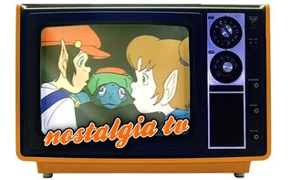
Volvemos a los ochenta y a sintonizar nuestra venerada infancia televisiva en Nostalgia TV, la sección dominical que repasa los grandes hits de la niñez. Hoy le toca el turno a unos pequeños seres bondadosos que se ocultaban tras las paredes formando una sociedad alternativa a la humana. ‘Los Diminutos’ se colaron en TVE allá por 1986, y muchos creíamos que también lo hacían en nuestras casas. Quizás fuera porque por aquel entonces la televisión liberaba nuestra imaginación, en lugar de adormecerla.
Desde luego, a los ojos de un niño, nada podía ser más fascinante que un enigma como el de ‘Los Diminutos’. Pensadlo friamente: unos seres miniaturizados, una raza híbrida de humanoide y roedor, de origen desconocido (que jamás cuestionamos) cuya existencia no debía ser descubierta, cohabitando con nosotros sin que lo supiéramos. Y de repente, ese gran secreto, nos es revelado por un niño…
El origen de ‘Los Diminutos’
En su versión original, ‘The Littles’ animaron las mañanas de los sábados a los niños americanos entre 1983 y 1985, como resultado de la adaptación de la serie de novelas infantiles de John Peterson, que llevaban publicándose desde 1967. Lo cierto es que la idea dio para tres temporadas de aventuras y un total de 29 capítulos, emitidos en ABC, varias tv-movies e incluso una película, Here Comes The Littles (1985).
Quién sabe, tal vez descendieran de aquellos otros personajes inventados unos años antes por Mary Norton, The Borrowers. Lo cierto es que la serie, una producción de DiC Entertainment (Francia/USA/Canadá) tiene un largo historial de emisiones y reposiciones en USA (ha pasado por The Fammily Channel o Toon Disney, entre otras), y realizó un largo periplo por buena parte de Europa, emitiéndose también en países latinoamericanos, donde eran conocidos como ‘La Familia Meñique’. La serie también llegó hasta otros países como Brasil o Australia.
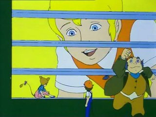
Los Diminutos, no se dejan ver jamás. En las paredes de tu casa, sin que lo sepas algo pasa, pero seguro que no los verás
‘Los Diminutos’ se escondían tras las rejillas de ventilación de la casa de la familia Grande (los Bigg en el original), que conformaban una especie de entrada a otra dimensión. Lo realmente fascinante de estos dibujos era el propio secreto, que nunca debía ser revelado y en el que los niños queríamos creer ciegamente. Sólo Henry (Quique para nosotros) podía verlos, ya que los diminutos, por naturaleza, desconfían de los gigantes, a los que consideran una raza “egoísta y malévola”. No es de extrañar, pues como en toda buena serie infantil, no faltará el villano que trata de atraparlos, encarnado en los personajes del malvado Dr. Cepo y su ayudante. Su objetivo: llevarlos a su laboratorio para realizar experimentos científicos y probar su existencia.
Unos dibujos llenos de valores
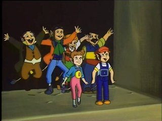
Las tramas de ‘Los Diminutos’ se centraban en las historias de una familia “convencional” de esta extraña raza, a lo sitcom, y su relación con el mundo exterior a través de la amistad entre los diminutos más pequeños, Tito y Lucy, y Quique, el preadolescente de la casa en cuyas entrañas habitan. Tito y Lucy tienden a meterse en líos como consecuencia de sus incursiones fuera de la rejilla, y los diminutos tendrán que enfrentarse juntos a los múltiples obstáculos que supone encararse al mundo desde su minúscula altura. Un gato o incluso una rata podían acabar con ellos de un sólo zarpazo.
Por eso, en sus aventuras con frecuencia vivían situaciones de grave peligron que vencían siempre juntos gracias al trabajo en equipoy a la lealtad. Como buena serie infantil, no podía estar exenta de su ración de moralina y de almíbar. El valor de la amistadse ensalzaba en cada capítulo, especialmente ilustrada con la relación entre Quique y los diminutos. Se trataba de transmitirnos el mensaje de que, aunque diferentes, podíamos entendernos y respetarnos. El mundo de los diminutos resultaba ser un espejo en el que los gigantes podían mirarse y aprender. El punto de humor lo aportaban el dúo cómico formado por los personajes del Abuelo cascarrabias y su patoso nieto Dinky, el aviador, enzarzados episodio tras episodio en alguna pelea, normalmente con persecución.
Una pequeña sociedad muy bien organizada
El mundo de ‘Los Diminutos’ está perfectamente organizado. Conscientes de las amenazas que pueden llegar desde el mundo exterior, cuentan con su propios cuerpos de defensa civil y de bomberos. Tienen incluso su propio periódico, el Grand Valley News. Son, además, una sociedad democrática: las decisiones importantes, que afectan a toda la comunidad, se consensuan en consejos y comités, y una Constitución legisla su vida en común. Pero su ley más sagrada es la que expresa que “ningún diminuto deberá revelar los secretos de su raza a los gigantes humanos”, por eso Quique y su tortuga Flecha, que hace las veces de mensajera entre ambos, serán los únicos a través de los cuales se relacionarán con el mundo exterior, más allá de las paredes de la casa de los Grande.
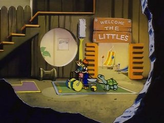
Si hay algo que caracteriza a los Diminutos es su ingenio: sus casas, como las de los Borrowers (algo así como “los que toman prestado”), están llenas de objetos humanos reciclados para darles un nuevo uso: las puertas-peine, los sellos-cuadro, los dados-mesa, el sistema de megafonía hecho a base de pajitas que recorre toda la ciudad, el cartón de leche-ascensor… Hasta un botón podía hacer las veces de tren de aterrizaje de la avioneta de Dinky. Cualquier objeto humano es susceptible de tener una nueva vida en el mundo diminuto.
El mismo ingenio les permitía, como una versión mini de MacGyver, usar prácticamente cualquier cosa para escapar, trepar o, en definitiva, vencer cualquier peligro, defenderse o enfrentarse a un mundo descomunal. Toda esta creatividad la aplicaban también en una sección al final de cada episodio, “Pequeñas ideas para chicos grandes”. En ella, se adherían al movimiento anticonsumista D.I.Y. (‘Do it yourself’) y enseñaban cómo reaprovechar objetos de los gigantes para su pequeño mundo. Sin olvidar que vivían de okupas en las paredes de nuestras casas. Vamos, unos punks.
Ficha Técnica: Los Diminutos
-
Título Original: The Littles
-
Género: Animación
-
Cadena: ABC
-
Emitida en España: TVE
-
Disponibilidad DVD: Todas las temporadas
En ¡Vaya Tele! | Nostalgia TV
Sat, 07 Apr 2012 06:00:00 GMT
'The Big Bang Theory' y sus referencias televisivas (II)
'The Big Bang Theory' y sus referencias televisivas (II)
Continuamos con la segunda parte del artículo dedicado al mundo televisivo que referencia la comedia ‘The Big Bang Theory‘. Todos sabemos que los protagonistas de esta ficción son unos grandes apasionados de los comics, las películas, los juegos de rol y, por supuesto, las series de televisión. Las referencias a ellas no sólo sirven para hacer chistes, sino que participan en el desarrollo de las tramas y cada vez resulta más común ver cameos de los actores más reconocidos. Si en el anterior artículo nos centrábamos en ‘Star Trek’, en esta continuación abarcaremos otras series que todos conocéis. ¡Adelante! ‘Battlestar Galactica’ Una de las series de referencia para los chicos es, como cualquier amante de la ciencia ficción se podría imaginar, ‘Battlestar Galactica’. Ya en el piloto, el conflicto “una rubia ha entrado en nuestras vidas” se dispara de la mano de esta serie. Cuando Leonard quiere invitar a Penny a comer, Sheldon pone sobre la mesa un argumento irrefutable. Tienen que ver la segunda temporada de la serie de los cylon… para ser exactos, el DVD con los comentarios. Al igual que con muchas de sus ficciones favoritas, los chicos de ‘TBBT’ son propietarios de numeroso merchandising de la serie. Cuando Penny trata de escoger ropa para que Leonard dé una conferencia, descubre entre sus atuendos un traje de vuelo de la serie original al que, por descontado, insiste en llamar traje de vuelo, nunca disfraz. De la misma forma, en otro capítulo, vemos que Sheldon tiene una tostadora con la forma de una cabeza cylon (la mayoría ya sabéis que los humanos llaman despectivamente “tostadoras” a sus enemigos robóticos). Pero seguramente, la incidencia más importante se produjera en el episodio ‘Vengeance formulation’ de la tercera temporada. En ella, tiene una intervención fundamental la capitán Kara Thrace, “Starbuck”. Es un capítulo fundamental para la evolución personal de Howard y quién mejor que una de las musas de la ciencia ficción de los últimos años para compartir ese momento. Howard debe decidir entre comenzar una relación con una chica real como Bernadette o seguir fantaseando con la imaginaria Starbuck. La actriz Katee Sackhoff muestra su lado más seductor en una secuencia en la que comparte un baño de espuma con Howard. En la cuarta temporada, tiene una nueva intervención, también en una fantasía de Howard. ‘Las cronicas de Sarah Connor’ El uso de cameos tiene un valor extra para una serie como ‘The Big Bang Theory’. Al hecho, ya de por sí atrayente, de contar con un reconocido actor, hay que sumar que este intérprete suele ser uno de los participantes de las series favoritas de la pandilla de Leonard, con lo que, el fanatismo de los personajes se dispara y da pie a situaciones muy divertidas. Es el caso de Summer Glau y su participación en uno de los capítulos de la segunda temporada. Glau se interpreta a sí misma en un viaje en tren que supone un cambio en los decorados más comunes de la serie producida por Chuck Lorre, y, por tanto, un soplo de aire fresco para la ficción. Cuando descubren quién es su compañera de vagón, Raj y Howard se disputan el honor de cortejarla, causando algunos inconvenientes para la joven y algunas carcajadas en los espectadores. ‘Doctor who’ En numerosas ocasiones, las referencias a estas series sirven para contextualizar una situación o ayudar a presentar un hecho, gracias, en parte, al conocimiento que se sobreentiende tiene el espectador sobre la ficción mencionada. Al igual que en nuestro anterior ejemplo, ‘Doctor Who’ sirve para mostrar lo diferente que es la rutina de Sheldon y sus compañeros de la de Penny. En uno de los primeros capítulos de la serie, Penny quiebra completamente las costumbres de Sheldon (y todos sabemos cuán apocalíptico puede resultar esto para el personaje de Jim Parsons). Que la vecina se quede a dormir en el sofá provoca ni más ni menos que Sheldon no pueda cumplir con su horario de los sábados. Tal y como él mismo explica, siempre se levanta a las 6:15, se prepara el desayuno y ve ‘Doctor Who’; que Penny tenga su dormida cabeza en el asiento de Sheldon es un impedimento absoluto. Ya en la quinta temporada, los guionistas de ‘The Big Bang Theory’ se atreven a formular no una crítica, pero si una observación sobre la naturaleza de la serie. Eso sí, el argumento sale de la boca de Amy Farrah Fowler, no de uno de los chicos protagonistas y Sheldon, aunque no diga en ningún momento que no está de acuerdo, le advierte sobre las posibles consecuencias que puede tener el decir que, para poseer una máquina que viaja a través del tiempo y el espacio, el Doctor tiene cierta fijación con el Londres actual. Y muchas, muchas más No puedo afirmarlo con rotundidad pero casi me atrevería a decir que en cada capítulo de ‘The Big Bang Theory’ hay una referencia a una ficción televisiva o cinematográfica. El uso de chistes, menciones, objetos de culto… se ha convertido en una de las características de la serie. Los guionistas “coleccionan” referencias a otras series. ‘Babylon 5’, ‘Stargate’, ‘Firefly’, ‘Heroes’ o incluso el cambio de nombre del canal Syfy (anteriormente, Sci Fi) sirven para llenar de contenido una secuencia, lanzar una trama, adornar con un chiste o contextualizar una situación. Nuestros protagonistas son “teléfilos” absolutos y no se circunscriben únicamente a la ficción de carne y hueso. También utilizan para sus diálogos al Coyote y al Correcaminos o incluso las estrategias detectivescas de ‘Scooby Doo’. Toda serie mítica tiene cabida en este universo. El capítulo en que Sheldon tiene miedo a morir y “muta” en robot da pie a una divertida secuencia en el coche de Leonard que, harto de la paranoia de su compañero de piso, hace una comparación con su situación y ‘El coche fantástico’. Otro clásico como ‘Enano Rojo’ es empleado para tentar a Leonard en una noche de apagón eléctrico. Y también están las más recientes. En esta última temporada, ya hemos podido ver una mención a ‘Juego de Tronos’ cuando Sheldon y Leonard deciden comenzar una colección de espadas de fantasía y como el propio Sheldon comenta, pasan por encima de Excalibur cuando ven en la tienda de cómics una réplica de una espada con un lobo huargo en su empuñadura. Y hay muchas más, y tal vez omitamos alguna de vuestras preferidas, pero nuestra última mención será para ‘Lost’, que sirve a Sheldon como argumento para rechazar un viaje de vacaciones a Hawai por ser el lugar “donde fue grabado el decepcionante final de ‘Perdidos’”. En ¡Vaya Tele! | ‘The Big Bang Theory’ y sus referencias televisivas (I)
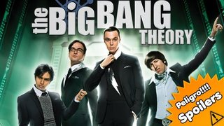
Continuamos con la segunda parte del artículo dedicado al mundo televisivo que referencia la comedia ‘The Big Bang Theory‘. Todos sabemos que los protagonistas de esta ficción son unos grandes apasionados de los comics, las películas, los juegos de rol y, por supuesto, las series de televisión.
Las referencias a ellas no sólo sirven para hacer chistes, sino que participan en el desarrollo de las tramas y cada vez resulta más común ver cameos de los actores más reconocidos. Si en el anterior artículo nos centrábamos en ‘Star Trek’, en esta continuación abarcaremos otras series que todos conocéis. ¡Adelante!
‘Battlestar Galactica’
Una de las series de referencia para los chicos es, como cualquier amante de la ciencia ficción se podría imaginar, ‘Battlestar Galactica’. Ya en el piloto, el conflicto “una rubia ha entrado en nuestras vidas” se dispara de la mano de esta serie. Cuando Leonard quiere invitar a Penny a comer, Sheldon pone sobre la mesa un argumento irrefutable. Tienen que ver la segunda temporada de la serie de los cylon… para ser exactos, el DVD con los comentarios.
Al igual que con muchas de sus ficciones favoritas, los chicos de ‘TBBT’ son propietarios de numeroso merchandising de la serie. Cuando Penny trata de escoger ropa para que Leonard dé una conferencia, descubre entre sus atuendos un traje de vuelo de la serie original al que, por descontado, insiste en llamar traje de vuelo, nunca disfraz. De la misma forma, en otro capítulo, vemos que Sheldon tiene una tostadora con la forma de una cabeza cylon (la mayoría ya sabéis que los humanos llaman despectivamente “tostadoras” a sus enemigos robóticos).
Pero seguramente, la incidencia más importante se produjera en el episodio ‘Vengeance formulation’ de la tercera temporada. En ella, tiene una intervención fundamental la capitán Kara Thrace, “Starbuck”. Es un capítulo fundamental para la evolución personal de Howard y quién mejor que una de las musas de la ciencia ficción de los últimos años para compartir ese momento. Howard debe decidir entre comenzar una relación con una chica real como Bernadette o seguir fantaseando con la imaginaria Starbuck. La actriz Katee Sackhoff muestra su lado más seductor en una secuencia en la que comparte un baño de espuma con Howard. En la cuarta temporada, tiene una nueva intervención, también en una fantasía de Howard.
‘Las cronicas de Sarah Connor’
El uso de cameos tiene un valor extra para una serie como ‘The Big Bang Theory’. Al hecho, ya de por sí atrayente, de contar con un reconocido actor, hay que sumar que este intérprete suele ser uno de los participantes de las series favoritas de la pandilla de Leonard, con lo que, el fanatismo de los personajes se dispara y da pie a situaciones muy divertidas.
Es el caso de Summer Glau y su participación en uno de los capítulos de la segunda temporada. Glau se interpreta a sí misma en un viaje en tren que supone un cambio en los decorados más comunes de la serie producida por Chuck Lorre, y, por tanto, un soplo de aire fresco para la ficción. Cuando descubren quién es su compañera de vagón, Raj y Howard se disputan el honor de cortejarla, causando algunos inconvenientes para la joven y algunas carcajadas en los espectadores.
‘Doctor who’
En numerosas ocasiones, las referencias a estas series sirven para contextualizar una situación o ayudar a presentar un hecho, gracias, en parte, al conocimiento que se sobreentiende tiene el espectador sobre la ficción mencionada. Al igual que en nuestro anterior ejemplo, ‘Doctor Who’ sirve para mostrar lo diferente que es la rutina de Sheldon y sus compañeros de la de Penny.
En uno de los primeros capítulos de la serie, Penny quiebra completamente las costumbres de Sheldon (y todos sabemos cuán apocalíptico puede resultar esto para el personaje de Jim Parsons). Que la vecina se quede a dormir en el sofá provoca ni más ni menos que Sheldon no pueda cumplir con su horario de los sábados. Tal y como él mismo explica, siempre se levanta a las 6:15, se prepara el desayuno y ve ‘Doctor Who’; que Penny tenga su dormida cabeza en el asiento de Sheldon es un impedimento absoluto.
Ya en la quinta temporada, los guionistas de ‘The Big Bang Theory’ se atreven a formular no una crítica, pero si una observación sobre la naturaleza de la serie. Eso sí, el argumento sale de la boca de Amy Farrah Fowler, no de uno de los chicos protagonistas y Sheldon, aunque no diga en ningún momento que no está de acuerdo, le advierte sobre las posibles consecuencias que puede tener el decir que, para poseer una máquina que viaja a través del tiempo y el espacio, el Doctor tiene cierta fijación con el Londres actual.
Y muchas, muchas más
No puedo afirmarlo con rotundidad pero casi me atrevería a decir que en cada capítulo de ‘The Big Bang Theory’ hay una referencia a una ficción televisiva o cinematográfica. El uso de chistes, menciones, objetos de culto… se ha convertido en una de las características de la serie. Los guionistas “coleccionan” referencias a otras series.
‘Babylon 5’, ‘Stargate’, ‘Firefly’, ‘Heroes’ o incluso el cambio de nombre del canal Syfy (anteriormente, Sci Fi) sirven para llenar de contenido una secuencia, lanzar una trama, adornar con un chiste o contextualizar una situación. Nuestros protagonistas son “teléfilos” absolutos y no se circunscriben únicamente a la ficción de carne y hueso. También utilizan para sus diálogos al Coyote y al Correcaminos o incluso las estrategias detectivescas de ‘Scooby Doo’.
Toda serie mítica tiene cabida en este universo. El capítulo en que Sheldon tiene miedo a morir y “muta” en robot da pie a una divertida secuencia en el coche de Leonard que, harto de la paranoia de su compañero de piso, hace una comparación con su situación y ‘El coche fantástico’. Otro clásico como ‘Enano Rojo’ es empleado para tentar a Leonard en una noche de apagón eléctrico.
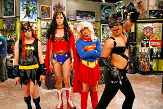
Y también están las más recientes. En esta última temporada, ya hemos podido ver una mención a ‘Juego de Tronos’ cuando Sheldon y Leonard deciden comenzar una colección de espadas de fantasía y como el propio Sheldon comenta, pasan por encima de Excalibur cuando ven en la tienda de cómics una réplica de una espada con un lobo huargo en su empuñadura. Y hay muchas más, y tal vez omitamos alguna de vuestras preferidas, pero nuestra última mención será para ‘Lost’, que sirve a Sheldon como argumento para rechazar un viaje de vacaciones a Hawai por ser el lugar “donde fue grabado el decepcionante final de ‘Perdidos’”.
En ¡Vaya Tele! | ‘The Big Bang Theory’ y sus referencias televisivas (I)
Fri, 06 Apr 2012 14:00:00 GMT
'Bent', una sitcom con encanto y mala suerte
'Bent', una sitcom con encanto y mala suerte
La NBC tenía unas cuantas comedias entre su batería de estrenos para esta temporada y varias, además, se quedaron para midseason. De ellas, la única que se estrenó con cierta promoción fue ‘Are you there, Chelsea?‘ (que en España estrena Cosmopolitan con el nombre de ‘Qué pasa con Chelsea‘), aprovechando el tirón de su co-creadora, Chelsea Handler, y la cadena se reservó como “relleno”, prácticamente, dos títulos que ha estrenado recientemente, ‘Best friends forever‘ y ‘Bent‘. Esta última, además, ha sido tratada realmente como relleno; su primera temporada sólo tenía seis episodios y la NBC los ha programado los miércoles por la noche de dos en dos, para quitársela de encima lo antes posible. Lo que no es demasiado justo para una serie que, probablemente, sea de las pocas sitcoms decentes que se haya estrenado esta temporada. ‘Bent’ está creada por un ex guionista de ‘Scrubs‘, Tad Quill, y sigue a Alex, una abogada divorciada cuyo ex marido está en la cárcel por desfalco, con una hija preadolescente, y que contrata para remodelar su cocina a Pete, un albañil ex adicto al juego que fue despedido de su último trabajo porque se acostó con la dueña de la casa. Entre Alex y Pete enseguida surge la chispa de la tensión sexual no resuelta, y los dos se pasan toda la serie con las clásicas discusiones de “Te gusto – Eso no es verdad” y luchando contra ello, especialmente porque Alex tiene novio, un cirujano llamado Ben que también se da cuenta de que algo pasa con Pete. Una pareja con química Toda la serie descansa sobre la química entre Amanda Peet y David Walton, dos actores que tienen muy mala suerte con las series que eligen, y que aquí funcionan muy bien con esas discusiones sobre cualquier cosa y que tienen una dinámica en la que incluso se había avanzado al final de la corta temporada. Su relación sigue los dictados de las comedias románticas más habituales, ésas que hemos visto un montón de veces en el cine, pero su química hace que no nos cansemos de ver una nueva variación sobre los códigos del género, en esta ocasión, la variación de “todos sabemos qué está pasando aquí”. Además, que Ben entre en el juego sin ser el típico novio estirado e imbécil (aunque tiene algún momento así) aporta otra capa interesante al asunto. Un punto a favor de ‘Bent’ es que Charlie, la hija de Alex, no es ninguna niña repelente, y ayuda a compensar un poco el papel de Jeffrey Tambor, el padre de Pete, un actor fracasado que, aunque resulta divertido con su rollo del Actor’s Studio para presentarse a un casting para un anuncio, puede saturar si se le utiliza en grandes dosis. Por otro lado, el equipo de albañiles de Pete resulta simpático y divertido con todos sus rituales absurdos (como el de la “Noche Secreta del Filete”) y sus excusas para bailar o jugar al baloncesto en lugar de estar trabajando. Todos los personajes hacen honor al título de la serie, ‘Bent’, doblado, porque ninguno está en uno de los mejores momentos de sus vidas pero no se dejan romper y siguen adelante. ¿Tiene futuro? Por desgracia de la serie, ser simpática y apuntar a ser una comedia bastante divertida si le dejaran un poco más de espacio para crecer no va a ser suficiente para ella, ya que la programación de la NBC (y la falta de publicidad de cara a su estreno) no han ayudado a atraer a la audiencia. Lo más probable es que, a no ser que haya un milagro, no pase de estos seis capítulos iniciales, lo que es realmente una pena porque ‘Bent’ no merecía ser tratada así. Si descontamos ‘Up all night‘, bien puede ser de lo más potable en comedia que la NBC ha estrenado este año, lo que no es mucho decir, es cierto. Aun así, resulta un visionado agradable y con algún punto divertido, con un sentido del humor más en la línea de ‘Happy endings‘. Parece que Amanda Peet y David Walton no van a poder romper su mala suerte y van a tener otra serie cancelada a sus espaldas. El último capítulo nos deja con algo así como un cliffhanger, y lo que está claro es que, si tuvieran segunda temporada, Pete y sus colegas tendrían que acabar la cocina algún día. Nos quedamos con una serie que tenía potencial y que resultaba un visionado agradable y simpático, aunque no aportara ninguna novedad al género de la comedia romántica, y con una pareja protagonista que funcionaba bastante bien. En ¡Vaya Tele! ! ‘Bent’ y ‘Best friends forever’, a salvar el agónico año de la NBC
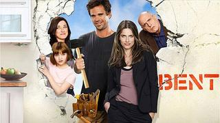
La NBC tenía unas cuantas comedias entre su batería de estrenos para esta temporada y varias, además, se quedaron para midseason. De ellas, la única que se estrenó con cierta promoción fue ‘Are you there, Chelsea?‘ (que en España estrena Cosmopolitan con el nombre de ‘Qué pasa con Chelsea‘), aprovechando el tirón de su co-creadora, Chelsea Handler, y la cadena se reservó como “relleno”, prácticamente, dos títulos que ha estrenado recientemente, ‘Best friends forever‘ y ‘Bent‘. Esta última, además, ha sido tratada realmente como relleno; su primera temporada sólo tenía seis episodios y la NBC los ha programado los miércoles por la noche de dos en dos, para quitársela de encima lo antes posible. Lo que no es demasiado justo para una serie que, probablemente, sea de las pocas sitcoms decentes que se haya estrenado esta temporada.
‘Bent’ está creada por un ex guionista de ‘Scrubs‘, Tad Quill, y sigue a Alex, una abogada divorciada cuyo ex marido está en la cárcel por desfalco, con una hija preadolescente, y que contrata para remodelar su cocina a Pete, un albañil ex adicto al juego que fue despedido de su último trabajo porque se acostó con la dueña de la casa. Entre Alex y Pete enseguida surge la chispa de la tensión sexual no resuelta, y los dos se pasan toda la serie con las clásicas discusiones de “Te gusto – Eso no es verdad” y luchando contra ello, especialmente porque Alex tiene novio, un cirujano llamado Ben que también se da cuenta de que algo pasa con Pete.
Una pareja con química
Toda la serie descansa sobre la química entre Amanda Peet y David Walton, dos actores que tienen muy mala suerte con las series que eligen, y que aquí funcionan muy bien con esas discusiones sobre cualquier cosa y que tienen una dinámica en la que incluso se había avanzado al final de la corta temporada. Su relación sigue los dictados de las comedias románticas más habituales, ésas que hemos visto un montón de veces en el cine, pero su química hace que no nos cansemos de ver una nueva variación sobre los códigos del género, en esta ocasión, la variación de “todos sabemos qué está pasando aquí”. Además, que Ben entre en el juego sin ser el típico novio estirado e imbécil (aunque tiene algún momento así) aporta otra capa interesante al asunto.
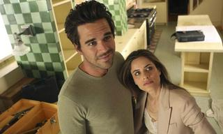
Un punto a favor de ‘Bent’ es que Charlie, la hija de Alex, no es ninguna niña repelente, y ayuda a compensar un poco el papel de Jeffrey Tambor, el padre de Pete, un actor fracasado que, aunque resulta divertido con su rollo del Actor’s Studio para presentarse a un casting para un anuncio, puede saturar si se le utiliza en grandes dosis. Por otro lado, el equipo de albañiles de Pete resulta simpático y divertido con todos sus rituales absurdos (como el de la “Noche Secreta del Filete”) y sus excusas para bailar o jugar al baloncesto en lugar de estar trabajando. Todos los personajes hacen honor al título de la serie, ‘Bent’, doblado, porque ninguno está en uno de los mejores momentos de sus vidas pero no se dejan romper y siguen adelante.
¿Tiene futuro?
Por desgracia de la serie, ser simpática y apuntar a ser una comedia bastante divertida si le dejaran un poco más de espacio para crecer no va a ser suficiente para ella, ya que la programación de la NBC (y la falta de publicidad de cara a su estreno) no han ayudado a atraer a la audiencia. Lo más probable es que, a no ser que haya un milagro, no pase de estos seis capítulos iniciales, lo que es realmente una pena porque ‘Bent’ no merecía ser tratada así. Si descontamos ‘Up all night‘, bien puede ser de lo más potable en comedia que la NBC ha estrenado este año, lo que no es mucho decir, es cierto. Aun así, resulta un visionado agradable y con algún punto divertido, con un sentido del humor más en la línea de ‘Happy endings‘.
Parece que Amanda Peet y David Walton no van a poder romper su mala suerte y van a tener otra serie cancelada a sus espaldas. El último capítulo nos deja con algo así como un cliffhanger, y lo que está claro es que, si tuvieran segunda temporada, Pete y sus colegas tendrían que acabar la cocina algún día. Nos quedamos con una serie que tenía potencial y que resultaba un visionado agradable y simpático, aunque no aportara ninguna novedad al género de la comedia romántica, y con una pareja protagonista que funcionaba bastante bien.
En ¡Vaya Tele! ! ‘Bent’ y ‘Best friends forever’, a salvar el agónico año de la NBC
Fri, 06 Apr 2012 05:00:00 GMT
'The Big Bang Theory' y sus referencias televisivas (I)
'The Big Bang Theory' y sus referencias televisivas (I)
La serie creada por Chuck Lorre y Bill Prady es una de las comedias más populares de los últimos tiempos. La ficción que comenzó casi como una “rareza”: unos nerds que son científicos, que no saben relacionarse con chicas, que se pasan el día obsesionados con los videojuegos o los cómics… ha sabido llegar al corazón de muchos, posiblemente, porque, más de una vez, nos hemos sentido identificados con ellos. Muchas cosas hacen grande a ‘The Big Bang Theory‘ y puede que una de ellas sea el tema que protagonizará el artículo: su fanatismo hacia las series de televisión. En muchas ocasiones, las referencias a ellas sirven para dar inicio a una secuencia, para contextualizar una acción con algun referente común o para hacer un chiste. Desde luego, esa influencia televisiva encaja con los personajes y con los espectadores, que sabemos de lo que nos están hablando y nos sentimos “guiñados” cuando entendemos el porqué de esa referencia. A continuación, los momentos más “teléfilos”, que como son tantos, vendrán en dos entregas. ‘Star Trek’ Parece casi obligatorio comenzar por esta serie. ‘Star trek’, para los personajes de ‘The Big Bang Theory’, es como una religión. El alfa y el omega de la ciencia-ficción, aquello por lo que cualquier neófito debería empezar (después de lavarse las manos, claro). Todos presumen de sus conocimientos sobre la serie, de la cultura vulcana, de su pericia con el klingon, tienen un uniforme de la serie, figuras animadas de los personajes… Tanta es su devoción por la serie, que, por ejemplo, juegan al boggle en klingon. Para los que no lo sepáis, el boggle es un juego de mesa en el que hay un tiempo limitado para formar el mayor número de palabras posibles con las 16 letras que el azar y los dados han escogido; y el klingon es un idioma empleado en ‘Star trek’, desarrollado por Mark Okrand para los estudios Paramount. La admiración por la serie creada por Gene Roddenberry alcanza a todos los ámbitos de la vida. Cuando Leonard está con Priya, hace realidad una de sus fantasías sexuales, convirtiendo a la hermana de Raj en la teniente Uhura, uno de los personajes de la ficción. Para ello, utiliza el traje de Halloween del propio Raj. La escena queda en off pero resulta de lo más revelador el diálogo entre la pareja y, sobre todo, las expresiones faciales de Raj. Y, sin duda, muchos recordaréis también el capítulo en el que Sheldon defiende una evolución del clásico “piedra, papel y tijera” y nos explica el juego “piedra, papel, tijera, lagarto, Spock”, que fue creado por Sam Kass y Karen Bryla y que seguro que muchos conocíais pero que a otros tantos nos lo ha descubierto esta serie. Con unas reglas realmente muy concretas, su presencia ha tenido continuidad en la serie y se ha convertido en un guiño para los fans. Su popularidad ha crecido bastante en los últimos tiempos, y, de hecho, nuestro compañeros de Zona Fandom nos hablaron del primer torneo universitario celebrado en España. Muchas y muchas referencias hacen nuestros chicos a las aventuras de Spock y compañía, resultaría imposible hacer mención de todas. Pero voy a recordar una de las para mí, más enloquecidas. En la cuarta temporada, Sheldon recibe clases de interpretación por parte de Penny y prepara una escena con una novela que él mismo escribió con 10 años, con la temática de ‘Star Trek’, y que adapta a una obra de teatro. Como el propio Sheldon explica, trata de la historia de un joven que es transportado desde Texas (“desde los ignorantes bosques del este de Texas”) hasta el siglo XXIII. La escena que ejecuta con Penny es un diálogo entre la madre de Sheldon y el doctor Spock, una premisa que no puede dejar indiferente a mucha gente. Wil Wheaton Pero si alguien merece una mención especial en la relación entre ‘Star Trek’ y ‘The Big Bang Theory’ es el actor Wil Wheaton. Como los que seáis fans de la serie sabéis a las mil maravillas, Wil Wheaton ha sido uno de los grandes “enemigos” de Sheldon. Wheaton es el actor que interpretó al alférez Wesley Crusher en la serie ‘Star Trek: La nueva generación’. La rivalidad de Sheldon con el actor (que se interpreta a sí mismo en ‘The Big Bang Theory’) viene de lejos. El mismo Sheldon explica que admiraba mucho a Wheaton y que en 1995 viajó a una Convención de Ciencia Ficción para conseguir que el actor firmara una figura de acción con la imagen de Crusher, pero Wheaton no se presentó. Sheldon redondea la historia comentando que Wheaton es su sexta persona más odiada. Sheldon se ha encontrado con Wheaton en varias ocasiones, por lo que las apariciones del actor en la serie se han convertido en un clásico que augura buenas tramas. La primera vez, en el torneo de cartas en el que participan Sheldon y Raj (por cierto, que el juego ‘Mystic Warlords of Ka’a’ fue creado por los guionistas, pero ya se puede jugar a él, por ejemplo en Facebook), y en el cual Wheaton miente, contando que no pudo asistir a la Convención por el funeral de la abuela. Más tarde, los dos rivales vuelven a enfrentarse en una partida de bolos, y Wheaton vuelve a jugar de manera “sucia” para perturbar la concentración del equipo de Sheldon, de tal manera que tiene mucho que ver con la ruptura que, en ese momento, vive la relación entre Penny y Leonard. De nuevo, en el capítulo ‘The 21 second excitation’, sus destinos se cruzan en la cola de un cine, cuando van a ver una versión extendida (21 segundazos) de ‘En busca del arca perdida’. Wheaton está también allí y consigue evitarse la interminable cola que los fans hacen para entrar. Sheldon no soporta verse de nuevo vencido por su némesis y, directamente, no se le ocurre otra cosa que robar la cinta de la película. Pero esta historia tiene un final feliz en la quinta temporada cuando Wheaton invita a los chicos a una fiesta en su casa. Sheldon sólo ve malas intenciones en su actitud y trata de evitar que sus amigos acudan. Sin embargo, la tentación de conocer a Brent Spiner (otro de los actores de ‘Star Trek’) puede más que su odio. Con un “ohhhhh” por parte de los espectadores, en la fiesta somos testigos del intento de reconciliación de Wheaton, cuando le regala a Sheldon una figura de su personaje en ‘Star Trek’ firmada, tratando así de cerrar el círculo. Sheldon acepta el regalo como bien parece indicar su grito “Wil Wheaton es mi amigo”. El giro se produce cuando Brent Spiner aparece para “desvirgar” la figura de acción, sacándola de su envoltorio. Esto concede a Spiner el honor de ser el nuevo enemigo mortal de Sheldon. Otros cameos Otro de los actores de ‘Star Trek’ que ha aparecido en ‘TBBT’ es George Takei, que interpretaba a Hikaru Sulu en la serie intergaláctica. Su intervención se producía mientras Howard tenía una fantasía sexual con Starbuck (de la que también hablaremos). La presencia de Takei en un momento tan íntimo hacía que Howard fuera interrogado sobre sus posibles tendencias homosexuales. También Le Var Burton ha aparecido en nuestra serie más nerd. En ‘Star trek’ interpreta a Geordi La Forge, un teniente de la USS Interprise D. Sheldon busca nuevos amigos y convoca a Stuart (de la tienda de cómics), a Barry Kripkle y a un exnovio de Penny. Y también manda un tweet con una invitación a Burton. Finalmente, cuando nadie podía preverlo (o tal vez los fans de la serie, sí) Burton aparece, cuando Sheldon se ha marchado en busca de sus antiguos amigos y la pandilla de tres cantan en el karaoke ‘I’m walking on sunshine’. Y, por último, y no por ello menos importante (más bien al contrario), como os contó nuestra compañera Lorena a través de la imagen de la semana, en el capítulo 20 de la presente temporada tenemos, por fin, el esperadísimo cameo de Leonard Nimoy (Spock para los amigos). La figura de Spock es una de las más amadas (si esto es posible) por Sheldon y aunque su aparición sólo sea mediante su voz y en un momento onírico, no puede dejar de considerarse un punto a favor de la serie contar con el actor que interpretó a uno de los personajes más carismáticos de la historia del audiovisual. En ¡Vaya Tele! | ‘The Big Bang Theory’, ¿mejor o peor con el grupo de chicas?

La serie creada por Chuck Lorre y Bill Prady es una de las comedias más populares de los últimos tiempos. La ficción que comenzó casi como una “rareza”: unos nerds que son científicos, que no saben relacionarse con chicas, que se pasan el día obsesionados con los videojuegos o los cómics… ha sabido llegar al corazón de muchos, posiblemente, porque, más de una vez, nos hemos sentido identificados con ellos.
Muchas cosas hacen grande a ‘The Big Bang Theory‘ y puede que una de ellas sea el tema que protagonizará el artículo: su fanatismo hacia las series de televisión. En muchas ocasiones, las referencias a ellas sirven para dar inicio a una secuencia, para contextualizar una acción con algun referente común o para hacer un chiste. Desde luego, esa influencia televisiva encaja con los personajes y con los espectadores, que sabemos de lo que nos están hablando y nos sentimos “guiñados” cuando entendemos el porqué de esa referencia. A continuación, los momentos más “teléfilos”, que como son tantos, vendrán en dos entregas.
‘Star Trek’
Parece casi obligatorio comenzar por esta serie. ‘Star trek’, para los personajes de ‘The Big Bang Theory’, es como una religión. El alfa y el omega de la ciencia-ficción, aquello por lo que cualquier neófito debería empezar (después de lavarse las manos, claro). Todos presumen de sus conocimientos sobre la serie, de la cultura vulcana, de su pericia con el klingon, tienen un uniforme de la serie, figuras animadas de los personajes…
Tanta es su devoción por la serie, que, por ejemplo, juegan al boggle en klingon. Para los que no lo sepáis, el boggle es un juego de mesa en el que hay un tiempo limitado para formar el mayor número de palabras posibles con las 16 letras que el azar y los dados han escogido; y el klingon es un idioma empleado en ‘Star trek’, desarrollado por Mark Okrand para los estudios Paramount.
La admiración por la serie creada por Gene Roddenberry alcanza a todos los ámbitos de la vida. Cuando Leonard está con Priya, hace realidad una de sus fantasías sexuales, convirtiendo a la hermana de Raj en la teniente Uhura, uno de los personajes de la ficción. Para ello, utiliza el traje de Halloween del propio Raj. La escena queda en off pero resulta de lo más revelador el diálogo entre la pareja y, sobre todo, las expresiones faciales de Raj.
Y, sin duda, muchos recordaréis también el capítulo en el que Sheldon defiende una evolución del clásico “piedra, papel y tijera” y nos explica el juego “piedra, papel, tijera, lagarto, Spock”, que fue creado por Sam Kass y Karen Bryla y que seguro que muchos conocíais pero que a otros tantos nos lo ha descubierto esta serie. Con unas reglas realmente muy concretas, su presencia ha tenido continuidad en la serie y se ha convertido en un guiño para los fans. Su popularidad ha crecido bastante en los últimos tiempos, y, de hecho, nuestro compañeros de Zona Fandom nos hablaron del primer torneo universitario celebrado en España.
Muchas y muchas referencias hacen nuestros chicos a las aventuras de Spock y compañía, resultaría imposible hacer mención de todas. Pero voy a recordar una de las para mí, más enloquecidas. En la cuarta temporada, Sheldon recibe clases de interpretación por parte de Penny y prepara una escena con una novela que él mismo escribió con 10 años, con la temática de ‘Star Trek’, y que adapta a una obra de teatro. Como el propio Sheldon explica, trata de la historia de un joven que es transportado desde Texas (“desde los ignorantes bosques del este de Texas”) hasta el siglo XXIII. La escena que ejecuta con Penny es un diálogo entre la madre de Sheldon y el doctor Spock, una premisa que no puede dejar indiferente a mucha gente.
Wil Wheaton
Pero si alguien merece una mención especial en la relación entre ‘Star Trek’ y ‘The Big Bang Theory’ es el actor Wil Wheaton. Como los que seáis fans de la serie sabéis a las mil maravillas, Wil Wheaton ha sido uno de los grandes “enemigos” de Sheldon. Wheaton es el actor que interpretó al alférez Wesley Crusher en la serie ‘Star Trek: La nueva generación’. La rivalidad de Sheldon con el actor (que se interpreta a sí mismo en ‘The Big Bang Theory’) viene de lejos. El mismo Sheldon explica que admiraba mucho a Wheaton y que en 1995 viajó a una Convención de Ciencia Ficción para conseguir que el actor firmara una figura de acción con la imagen de Crusher, pero Wheaton no se presentó. Sheldon redondea la historia comentando que Wheaton es su sexta persona más odiada.
Sheldon se ha encontrado con Wheaton en varias ocasiones, por lo que las apariciones del actor en la serie se han convertido en un clásico que augura buenas tramas. La primera vez, en el torneo de cartas en el que participan Sheldon y Raj (por cierto, que el juego ‘Mystic Warlords of Ka’a’ fue creado por los guionistas, pero ya se puede jugar a él, por ejemplo en Facebook), y en el cual Wheaton miente, contando que no pudo asistir a la Convención por el funeral de la abuela.
Más tarde, los dos rivales vuelven a enfrentarse en una partida de bolos, y Wheaton vuelve a jugar de manera “sucia” para perturbar la concentración del equipo de Sheldon, de tal manera que tiene mucho que ver con la ruptura que, en ese momento, vive la relación entre Penny y Leonard.
De nuevo, en el capítulo ‘The 21 second excitation’, sus destinos se cruzan en la cola de un cine, cuando van a ver una versión extendida (21 segundazos) de ‘En busca del arca perdida’. Wheaton está también allí y consigue evitarse la interminable cola que los fans hacen para entrar. Sheldon no soporta verse de nuevo vencido por su némesis y, directamente, no se le ocurre otra cosa que robar la cinta de la película.
Pero esta historia tiene un final feliz en la quinta temporada cuando Wheaton invita a los chicos a una fiesta en su casa. Sheldon sólo ve malas intenciones en su actitud y trata de evitar que sus amigos acudan. Sin embargo, la tentación de conocer a Brent Spiner (otro de los actores de ‘Star Trek’) puede más que su odio. Con un “ohhhhh” por parte de los espectadores, en la fiesta somos testigos del intento de reconciliación de Wheaton, cuando le regala a Sheldon una figura de su personaje en ‘Star Trek’ firmada, tratando así de cerrar el círculo. Sheldon acepta el regalo como bien parece indicar su grito “Wil Wheaton es mi amigo”. El giro se produce cuando Brent Spiner aparece para “desvirgar” la figura de acción, sacándola de su envoltorio. Esto concede a Spiner el honor de ser el nuevo enemigo mortal de Sheldon.
Otros cameos
Otro de los actores de ‘Star Trek’ que ha aparecido en ‘TBBT’ es George Takei, que interpretaba a Hikaru Sulu en la serie intergaláctica. Su intervención se producía mientras Howard tenía una fantasía sexual con Starbuck (de la que también hablaremos). La presencia de Takei en un momento tan íntimo hacía que Howard fuera interrogado sobre sus posibles tendencias homosexuales.
También Le Var Burton ha aparecido en nuestra serie más nerd. En ‘Star trek’ interpreta a Geordi La Forge, un teniente de la USS Interprise D. Sheldon busca nuevos amigos y convoca a Stuart (de la tienda de cómics), a Barry Kripkle y a un exnovio de Penny. Y también manda un tweet con una invitación a Burton. Finalmente, cuando nadie podía preverlo (o tal vez los fans de la serie, sí) Burton aparece, cuando Sheldon se ha marchado en busca de sus antiguos amigos y la pandilla de tres cantan en el karaoke ‘I’m walking on sunshine’.
Y, por último, y no por ello menos importante (más bien al contrario), como os contó nuestra compañera Lorena a través de la imagen de la semana, en el capítulo 20 de la presente temporada tenemos, por fin, el esperadísimo cameo de Leonard Nimoy (Spock para los amigos). La figura de Spock es una de las más amadas (si esto es posible) por Sheldon y aunque su aparición sólo sea mediante su voz y en un momento onírico, no puede dejar de considerarse un punto a favor de la serie contar con el actor que interpretó a uno de los personajes más carismáticos de la historia del audiovisual.
En ¡Vaya Tele! | ‘The Big Bang Theory’, ¿mejor o peor con el grupo de chicas?
Thu, 05 Apr 2012 17:00:00 GMT
'Shameless' (US) concluye una gran segunda temporada
'Shameless' (US) concluye una gran segunda temporada
En estos domingos de infarto que hemos tenido los seriéfilos últimamente nos encontramos con varias propuestas la mar de interesantes. Esta midseason Showtime ha emitido la segunda temporada de una de las series revelación de la temporada pasada: ‘Shameless‘, la versión americana de la serie creada para ITV por Paul Abbot. Su primera temporada nos dejó muy buen sabor de boca a pesar de seguir la estela de la británica y había curiosidad por ver con qué nos encontraríamos en esta segunda temporada. Ya sabéis que yo considero que una segunda temporada es donde una serie se juega su prestigio. ¿’Shameless‘ es flor de un día o conquistará definitivamente nuestros corazones? ¿Cómo manejarían en enorme elenco de personajes que circulan en esos barrios de Chicago? ¿Qué nuevos retos se encontrarían los Gallagher? ¿Seguirían usando esa mezcla deliciosa entre el drama y la comedia gamberra? Y la verdad es que he de decir que el balance ha sido muy positivo. Lip contra el mundo El comienzo de la segunda temporada de ‘Shameless’ se ha centrado en cómo sobreviven los Gallagher al verano. Cada uno con su trabajo tanto legal como no tan legal, incluyendo venta ambulante de helados y priva e incluso montar una guardería en casa que lleva Debbie (a la que habría que dedicar un artículo para ella sola) junto con Edith (la cual causa uno de los mejores momentos de la serie) todo para tener ahorros suficientes como para sobrevivir al invierno. En el aspecto sentimental nos encontramos con varios frentes. Fiona sigue teniendo algún que otro rollo de una noche, a pesar de no olvidar a Steve, quien se presentará al poco con una esposa brasileña. Lip, por su parte, seguirá colgado de Karen, quien sale con Jody, un amigo de su grupo de sexoadictos anónimos. Y Frank teme el momento en el que Sheila (otra que está pletórica esta temporada) se recupere totalmente de su agorafobia y descubra cómo es en realidad. Los grandes puntos que llevará esta temporada es la relación entre Fiona y Lip. Los mayores de los hijos de Frank siempre han sido los máximos responsables de llevar la familia adelante. Sin embargo la revelación de que Karen está embarazada trastocará demasiado la cabeza de Lip, empeñado en que es hijo suyo y que es su responsabilidad su porvernir; por lo que decidirá aparcar su prometedor futuro académico. Lo cual le enfrentará directamente a Fiona, que no está dispuesta a dejar que su hermano haga el mismo sacrificio que hizo ella ante el abandono de sus padres. ‘Shameless’ y el huracán Mónica Sería muy difícil quedarse con solo una trama de las que hemos visto, pero creo que habría que destacar el hilo conductor de esta temporada y ese es el de Frank y las dos mujeres más importantes de su vida: su madre y su mujer. La primera llegaría para revolucionar el día a día de los Gallagher, regalar cosas a sus nietos, atar en corto (y maltratar) a Frank hasta que muere. La segunda llegaría cuando Frank acude a Monica para consolarse ante tal tragedia lo que llevaría al matrimonio a reunirse de nuevo bajo el tejado de los Gallagher. Lo que será el huracán (ya de por sí el episodio en el que ocurre se llama Hurricane Monica) que termine de destrozar el enclenque equilibrio del hogar. Con Frank y Monica viviendo permanentemente en la casa tendremos la oportunidad de saber cómo era la vida antes de que Monica abandonara la casa años antes; algo que solo habíamos oído de boca o bien de Fiona o bien de Lip. Que, por cierto, será en la figura de Fiona donde vemos las consecuencias de todo esto. Primero viendo cómo se confía la mayor y empieza a tener planes de futuro (sacarse el GED, trabajar en una disco…) y cómo todas estas aspiraciones se desmoronan cuando ve que nada ha cambiado. La verdad es que toda esta temporada ha servido para sacudir un poco los cimientos tanto de la familia Gallagher como de la de Sheila. Todo esto en detrimento, en parte, de V y Kev que tras recibir bastante protagonismo en los primeros episodios de temporada en la segunda mitad su presencia ha sido meramente anecdótica. Pero en general creo que el protagonismo de cada personaje de ‘Shameless’ ha estado equilibrado, excepto por los casos ya citados, haciendo que te interese la práctica totalidad de las tramas. ‘Shameless’, el drama familiar que deberías ver Se nota muchísimo que los guionistas le han tomado el pulso definitivamente a la serie y han encontrado un tono y ritmo muy resultones. La segunda temporada de ‘Shameless’ es superior en todos los sentidos a la primera. Más compacta, mejor escrita, más vibrante, una fórmula francamente mejorada. Una temporada que ha ido al lío, pasando de la “anécdota/follón” de la semana hacia una exploración de la familia, sus relaciones y sus reacciones. La segunda temporada de ‘Shameless’ no hace sino confirmarla como el mejor drama (dramedia) familiar que uno se puede encontrar hoy en día en la televisión americana. Doce episodios repletos de Gallagher en sus mejores momentos y en los más bajos. No sé vosotros, pero yo me considero uno más de este clan, llorando sus penas y riendo sus gamberradas. Puede que no alcance a la original británica, pero desde luego a mí no me importa mientras me sigan ofreciendo temporadas como esta. En ¡Vaya Tele! | ‘Shameless’, cuando la familia Gallagher avanza
En estos domingos de infarto que hemos tenido los seriéfilos últimamente nos encontramos con varias propuestas la mar de interesantes. Esta midseason Showtime ha emitido la segunda temporada de una de las series revelación de la temporada pasada: ‘Shameless‘, la versión americana de la serie creada para ITV por Paul Abbot. Su primera temporada nos dejó muy buen sabor de boca a pesar de seguir la estela de la británica y había curiosidad por ver con qué nos encontraríamos en esta segunda temporada.
Ya sabéis que yo considero que una segunda temporada es donde una serie se juega su prestigio. ¿’Shameless‘ es flor de un día o conquistará definitivamente nuestros corazones? ¿Cómo manejarían en enorme elenco de personajes que circulan en esos barrios de Chicago? ¿Qué nuevos retos se encontrarían los Gallagher? ¿Seguirían usando esa mezcla deliciosa entre el drama y la comedia gamberra? Y la verdad es que he de decir que el balance ha sido muy positivo.
Lip contra el mundo
El comienzo de la segunda temporada de ‘Shameless’ se ha centrado en cómo sobreviven los Gallagher al verano. Cada uno con su trabajo tanto legal como no tan legal, incluyendo venta ambulante de helados y priva e incluso montar una guardería en casa que lleva Debbie (a la que habría que dedicar un artículo para ella sola) junto con Edith (la cual causa uno de los mejores momentos de la serie) todo para tener ahorros suficientes como para sobrevivir al invierno.
En el aspecto sentimental nos encontramos con varios frentes. Fiona sigue teniendo algún que otro rollo de una noche, a pesar de no olvidar a Steve, quien se presentará al poco con una esposa brasileña. Lip, por su parte, seguirá colgado de Karen, quien sale con Jody, un amigo de su grupo de sexoadictos anónimos. Y Frank teme el momento en el que Sheila (otra que está pletórica esta temporada) se recupere totalmente de su agorafobia y descubra cómo es en realidad.
Los grandes puntos que llevará esta temporada es la relación entre Fiona y Lip. Los mayores de los hijos de Frank siempre han sido los máximos responsables de llevar la familia adelante. Sin embargo la revelación de que Karen está embarazada trastocará demasiado la cabeza de Lip, empeñado en que es hijo suyo y que es su responsabilidad su porvernir; por lo que decidirá aparcar su prometedor futuro académico. Lo cual le enfrentará directamente a Fiona, que no está dispuesta a dejar que su hermano haga el mismo sacrificio que hizo ella ante el abandono de sus padres.
‘Shameless’ y el huracán Mónica
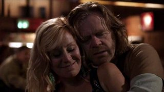
Sería muy difícil quedarse con solo una trama de las que hemos visto, pero creo que habría que destacar el hilo conductor de esta temporada y ese es el de Frank y las dos mujeres más importantes de su vida: su madre y su mujer. La primera llegaría para revolucionar el día a día de los Gallagher, regalar cosas a sus nietos, atar en corto (y maltratar) a Frank hasta que muere. La segunda llegaría cuando Frank acude a Monica para consolarse ante tal tragedia lo que llevaría al matrimonio a reunirse de nuevo bajo el tejado de los Gallagher.
Lo que será el huracán (ya de por sí el episodio en el que ocurre se llama Hurricane Monica) que termine de destrozar el enclenque equilibrio del hogar. Con Frank y Monica viviendo permanentemente en la casa tendremos la oportunidad de saber cómo era la vida antes de que Monica abandonara la casa años antes; algo que solo habíamos oído de boca o bien de Fiona o bien de Lip. Que, por cierto, será en la figura de Fiona donde vemos las consecuencias de todo esto. Primero viendo cómo se confía la mayor y empieza a tener planes de futuro (sacarse el GED, trabajar en una disco…) y cómo todas estas aspiraciones se desmoronan cuando ve que nada ha cambiado.
La verdad es que toda esta temporada ha servido para sacudir un poco los cimientos tanto de la familia Gallagher como de la de Sheila. Todo esto en detrimento, en parte, de V y Kev que tras recibir bastante protagonismo en los primeros episodios de temporada en la segunda mitad su presencia ha sido meramente anecdótica. Pero en general creo que el protagonismo de cada personaje de ‘Shameless’ ha estado equilibrado, excepto por los casos ya citados, haciendo que te interese la práctica totalidad de las tramas.
‘Shameless’, el drama familiar que deberías ver
Se nota muchísimo que los guionistas le han tomado el pulso definitivamente a la serie y han encontrado un tono y ritmo muy resultones. La segunda temporada de ‘Shameless’ es superior en todos los sentidos a la primera. Más compacta, mejor escrita, más vibrante, una fórmula francamente mejorada. Una temporada que ha ido al lío, pasando de la “anécdota/follón” de la semana hacia una exploración de la familia, sus relaciones y sus reacciones.
La segunda temporada de ‘Shameless’ no hace sino confirmarla como el mejor drama (dramedia) familiar que uno se puede encontrar hoy en día en la televisión americana. Doce episodios repletos de Gallagher en sus mejores momentos y en los más bajos. No sé vosotros, pero yo me considero uno más de este clan, llorando sus penas y riendo sus gamberradas. Puede que no alcance a la original británica, pero desde luego a mí no me importa mientras me sigan ofreciendo temporadas como esta.
En ¡Vaya Tele! | ‘Shameless’, cuando la familia Gallagher avanza
Thu, 05 Apr 2012 09:14:21 GMT
El centenario del hundimiento del Titanic inunda la parrilla
El centenario del hundimiento del Titanic inunda la parrilla
El próximo domingo, día 15, se conmemoran 100 años del hundimiento del RMS Titanic. Una gran tragedia, una gran historia y un mito que ha interesado al mundo y ha valido para crear innumerables historias y leyendas urbanas. Y cómo no, aprovechando esta fecha conmemorativa, las cadenas de televisión nos traen de vuelta a la actualidad aquello con diferentes propuestas. La más llamativa es la de Antena 3, cadena que emitirá la miniserie británica: ‘Titanic: Sangre y Acero’. Se trata de un producto de ITV desarrollado por Julian Fellowes, creador de ‘Downton Abbey’, pero que no viene respaldado por el mismo éxito que su otra ficción. ‘Titanic: Sangre y acero’ se estrenó en Reino Unido el 15 de marzo convocando a 7,36 millones de espectadores, muy buena cifra allí, pero su segunda emisión cayó hasta los 4,66 millones. Las críticas tampoco están siendo especialmente buenas, y tal vez el hecho de que Antena 3 decida emitir el domingo los cuatro episodios del tirón es una prueba de que su calidad no debe ser muy alta. Se suman a la conmemoración Cuatro, que ofrecerá un especial en ‘Cuarto Mileno’ abordando los enigmas y las leyendas urbanas en torno al hundimiento, y Discovery MAX con la emisión del especial ’100 Años del Titanic’ que incluye los documentales ‘Secretos del Titanic con James Cameron’ y ‘Conspiraciones: ¿Por qué se hundió el Titanic?’. Y no sería de extrañar que más versiones de la historia, ya sea vía reportajes o vía ficción se saquen de los cajones estos días. Si no me equivoco los derechos sobre la cinta de James Cameron los debe tener laSexta, quien la emitió por última vez en octubre de 2011, así que tal vez la desempolven en el primer canal o en laSexta3. Y que repongan también aquella maravillosa miniserie de CBS que protagonizaba Catherine Zeta Jones. En ¡Vaya Tele! | Primer tráiler de ‘Titanic’, el nuevo drama de época del creador de ‘Downton Abbey’
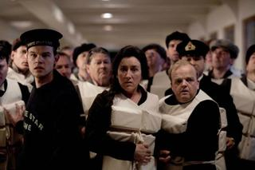
El próximo domingo, día 15, se conmemoran 100 años del hundimiento del RMS Titanic. Una gran tragedia, una gran historia y un mito que ha interesado al mundo y ha valido para crear innumerables historias y leyendas urbanas. Y cómo no, aprovechando esta fecha conmemorativa, las cadenas de televisión nos traen de vuelta a la actualidad aquello con diferentes propuestas.
La más llamativa es la de Antena 3, cadena que emitirá la miniserie británica: ‘Titanic: Sangre y Acero’. Se trata de un producto de ITV desarrollado por Julian Fellowes, creador de ‘Downton Abbey’, pero que no viene respaldado por el mismo éxito que su otra ficción. ‘Titanic: Sangre y acero’ se estrenó en Reino Unido el 15 de marzo convocando a 7,36 millones de espectadores, muy buena cifra allí, pero su segunda emisión cayó hasta los 4,66 millones. Las críticas tampoco están siendo especialmente buenas, y tal vez el hecho de que Antena 3 decida emitir el domingo los cuatro episodios del tirón es una prueba de que su calidad no debe ser muy alta.
Se suman a la conmemoración Cuatro, que ofrecerá un especial en ‘Cuarto Mileno’ abordando los enigmas y las leyendas urbanas en torno al hundimiento, y Discovery MAX con la emisión del especial ’100 Años del Titanic’ que incluye los documentales ‘Secretos del Titanic con James Cameron’ y ‘Conspiraciones: ¿Por qué se hundió el Titanic?’. Y no sería de extrañar que más versiones de la historia, ya sea vía reportajes o vía ficción se saquen de los cajones estos días. Si no me equivoco los derechos sobre la cinta de James Cameron los debe tener laSexta, quien la emitió por última vez en octubre de 2011, así que tal vez la desempolven en el primer canal o en laSexta3. Y que repongan también aquella maravillosa miniserie de CBS que protagonizaba Catherine Zeta Jones.
En ¡Vaya Tele! | Primer tráiler de ‘Titanic’, el nuevo drama de época del creador de ‘Downton Abbey’
Wed, 04 Apr 2012 17:49:42 GMT
Estrellas Invitadas (CXL)
Estrellas Invitadas (CXL)
Semana Santa es sinónimo de playa, vacaciones, descanso y pasos de Semana Santa. Aquí en ¡Vaya tele! dejamos todo eso a un lado (bueno, no del todo pero ya me entendéis) y seguimos al pie del cañón para que podáis seguir enterados de todo lo que pasa en el mundo de la televisión, incluso en una semana tan atípica como esta. En esta edición del Estrellas Invitadas (140 llevamos, se dice pronto) no vamos a recomendar películas religiosas para que veáis, ni siquiera series para que os hagáis un maratón. Os vamos a destacar, como siempre, los mejores artículos que ha habido en los últimos siete días en la blogocosa televisiva. Por lo que pueda parecer, venimos cargaditos.
‘Californication’ terminó esta semana y con ella, le decimos adiós a Hank una temporada más. Aquí tendréis el análisis esta semana, pero si no queréis esperar un par de días, Fuertecito nos ha dado un análisis muy digno de la última temporada Aunque muchos no lo usamos ya, tener un buen televisor es sinónimo de buena calidad de imagen y placer por verla. Desde eBayers nos hacen un análisis de los últimos televisores que están saliendo al mercado. ‘Juego de Tronos‘ es el estreno que está en boca de todos, y no es para menos. Nuestra siempre querida Adriii nos analiza desde la perspectiva de la adaptación del libro el estreno de la serie. Buena lectura para los fans de la saga en papel. ‘Shameless (US)’ ha sido otra de las series de Showtime que nos ha dejado un año más. En Inquisitor Televisivo le hacen una oda a Fiona Gallagher. No le cambiaría ni una coma a esta admiración. El personaje se lo merece.
Don Draper is back y eso lo ha tenido muy en cuenta Critico en Serie que ha escrito sobre la nueva señora Draper. Nada más que decir… bueno sí, Zous Bisou Bious…
No verán salir de mi boca críticas hacia ‘Smash’ pero como hay gustos para todos, destacamos un artículo de TV Killed Movie Star donde hablan de los fallos que está teniendo la serie. Y hasta aquí esta nueva entrega. Sólo desear que paséis unas buenas vacaciones y que si podéis tomar el sol, lo hagáis con protección que los rayos uva de esta época son muy malos. En ¡Vaya Tele! | Estrellas Invitadas
Semana Santa es sinónimo de playa, vacaciones, descanso y pasos de Semana Santa. Aquí en ¡Vaya tele! dejamos todo eso a un lado (bueno, no del todo pero ya me entendéis) y seguimos al pie del cañón para que podáis seguir enterados de todo lo que pasa en el mundo de la televisión, incluso en una semana tan atípica como esta.
En esta edición del Estrellas Invitadas (140 llevamos, se dice pronto) no vamos a recomendar películas religiosas para que veáis, ni siquiera series para que os hagáis un maratón. Os vamos a destacar, como siempre, los mejores artículos que ha habido en los últimos siete días en la blogocosa televisiva. Por lo que pueda parecer, venimos cargaditos.
- ‘Californication’ terminó esta semana y con ella, le decimos adiós a Hank una temporada más. Aquí tendréis el análisis esta semana, pero si no queréis esperar un par de días, Fuertecito nos ha dado un análisis muy digno de la última temporada
- Aunque muchos no lo usamos ya, tener un buen televisor es sinónimo de buena calidad de imagen y placer por verla. Desde eBayers nos hacen un análisis de los últimos televisores que están saliendo al mercado.
- ‘Juego de Tronos‘ es el estreno que está en boca de todos, y no es para menos. Nuestra siempre querida Adriii nos analiza desde la perspectiva de la adaptación del libro el estreno de la serie. Buena lectura para los fans de la saga en papel.
- ‘Shameless (US)’ ha sido otra de las series de Showtime que nos ha dejado un año más. En Inquisitor Televisivo le hacen una oda a Fiona Gallagher. No le cambiaría ni una coma a esta admiración. El personaje se lo merece.
-
Don Draper is back y eso lo ha tenido muy en cuenta Critico en Serie que ha escrito sobre la nueva señora Draper. Nada más que decir… bueno sí, Zous Bisou Bious…
- No verán salir de mi boca críticas hacia ‘Smash’ pero como hay gustos para todos, destacamos un artículo de TV Killed Movie Star donde hablan de los fallos que está teniendo la serie.
Y hasta aquí esta nueva entrega. Sólo desear que paséis unas buenas vacaciones y que si podéis tomar el sol, lo hagáis con protección que los rayos uva de esta época son muy malos.
En ¡Vaya Tele! | Estrellas Invitadas
Wed, 04 Apr 2012 05:30:00 GMT
'Toledo', una monarquía sin reino
'Toledo', una monarquía sin reino
Antena 3 cumplió con su calendario y cerró anoche la primera y única temporada de ‘Toledo’, su primera gran apuesta de ficción para 2012 que, pese a reunir a más de dos millones de espectadores cada semana, no superó la criba necesaria para conseguir la renovación. La ficción histórica no ha contado con los espectaculares datos de audiencia que Antena 3 esperaba alcanzar, siendo una de las primeras series de este tipo de género que no logra tener continuación más allá de la primera temporada. Las intenciones de ‘Toledo‘ eran buenas. Llegaba para seguir explotando el filón de las series históricas, ése que tan buenos resultados ha dado en el pasado. Además, lo hacía acompañado de un buen reparto, que muchas ficciones envidiarían tener, y con una historia que parecía sólida y atractiva de cara al espectador. Aún así, no podemos decir que ‘Toledo’ haya destacado en el panorama de la ficción nacional, por lo que después de valorar sus aspectos positivos, solo nos queda preguntarnos cuáles han sido los motivos por los que la ficción no ha cumplido con las expectativas. Siguiendo la estela de ‘Hispania’ Desde su inicio, ‘Toledo’ se ha visto influenciada por cierta saturación existente en el espectador provocada por la continua emisión de ficciones del mismo estilo en el pasado. La serie incluso ha mantenido parecido con otros productos como ‘Hispania’ que, épocas históricas al margen, también ha girado en torno a personajes clave como el rey (en caso de ‘Hispania’ el pretor), el magistrado (en ‘Hispania’ Viriato) y el resto de personajes que buscaban su beneficio personal a costa de perjudicar a los demás. Todo ello decorado con peleas de espadas y conflictos derivados del choque de culturas. Quizá por eso, ‘Toledo’ se ha presentado como la hermana mayor de ‘Hispania’, una ficción que avanzaba en el tiempo pero que presentaba un producto de similares características, que no lograba aportar nada nuevo, principal punto en el que la serie de Antena 3 ha fallado. ‘Toledo’ llamó la curiosidad de más de tres millones de espectadores en su estreno, por lo que consiguió ser un producto atractivo que poco a poco se ha ido desinflando. Otra de las causas que le ha podido influir en este descenso de audiencia se encuentra en la ausencia de credibilidad que ha provocado un conjunto de factores entre los que destacan su ambientación, algunas de sus tramas y el desarrollo de varios de sus personajes. Sobre la ambientación, nada que decir que no se haya dicho ya. Por muy alto que haya sido el presupuesto parece que todavía hay cosas que la ficción española debe mejorar para recrear épocas históricas, sobre todo en cuestión de vestuario y decorados interiores. Desde el primer día, ‘Toledo’ ha querido ser una serie correcta, en el que los personajes malos actuaran de forma malvada y los buenos se presentaran como los héroes de turno. Díficil elección si tenemos en cuenta la historia que nos pretendían contar, en el que algunos personajes, como el magistrado, deberían tomar decisiones difíciles, unas veces pensando en el bien común y otras centrándose en la felicidad de los suyos. Aún así, el espectador sabía perfectamente dónde estaban los buenos y qué hacían los malos para perjudicarles, y mostrar de una forma tan simple la personalidad de los personajes provoca que no lleguemos a conectar con ellos ni que nos lo terminemos de creer, exactamente lo que le ha pasado a ‘Toledo’ en el desarrollo de su temporada. El ejemplo más claro que especifica este hecho se encuentra en la relación que han mantenido el Conde de Miranda con el arzobispo Oliva, una relación que ha terminado mostrando a dos personajillos dependientes el uno del otro que deambulaban siempre juntos murmurando y pensando qué hacer para perjudicar al reino. Hubiera sido más interesante ofrecer algo más de sus historias personales, sobre todo porque cuando hemos visto, por ejemplo, momentos de la relación del Conde con la prostituta ciega, es cuando más personalidad se le ha conseguido dar al personaje y por lo tanto más atractivo se volvía de cara al espectador. Así, se han mostrado personajes en ocasiones algo planos, con los que el espectador no ha terminado de conectar. Los guionistas se han olvidado de desarrollar sus historias para darnos un episodio autoconclusivo cada semana, otro de los errores con los que ha contado la ficción. ‘Toledo’ no parece ser la serie adecuada para mostrar cómo resuelve el magistrado el problema en el que se centre cada capítulo o en qué nuevo lío se meten el hijo del rey y sus amigos. Hubiera sido más oportuno intercalar estas historias con una trama continuada que mantuviera la atención semana tras semana. Un final digno Toca el turno de los elogios, en primer lugar para Antena 3 por mantener la ficción en la noche de los martes sin que los espectadores sufrieramos las consecuencias de ningún tipo de contraprogramación. Es cierto que, pese a no obtener la audiencia deseada para la renovación, los seguidores que conseguía ‘Toledo’ cada semana estaban en la línea de lo aceptable, por lo que también es comprensible que la cadena no haya realizado ningún movimiento que afectara a los episodios de ‘Toledo’. Pero, aún así, no estamos acostumbrados a que una serie que no alcanza las audiencias deseadas mantenga día y horario de emisión cada semana, un buen camino a seguir en el futuro que el espectador acaba agradeciendo. Y, a los creadores de la serie, les tenemos que agradecer el final con el que ‘Toledo’ finalizó su andadura en televisión, cerrando todas y cada una de sus tramas y creando un último episodio que estuvo a la altura de las circunstancias. Quizá, para mi gusto, demasiado correcto (todos los que hicieron algo malo en el pasado, menos el rey, acabaron pagando las consecuencias de sus actos) e incluso la muerte de Rodrigo se veía venir desde que supimos que él también había hecho cosas reprobables cuando estuvo en la guerra. Pero, aún así, el final de la ficción me dejó satisfecho y agradezco que no se dejara ninguna puerta abierta de cara a una posible segunda temporada, algo que al final habríamos acabado lamentando. ‘Toledo’ ha aguantado digna hasta el final gracias al cóctel inicial que formaban algunas de las interpretaciones de sus actores (Eduard Farelo, Fernando Cayo, Rubén Ochandiano…) y a la dosificación de sus tramas, ya que ninguna ha llegado a saturar demasiado y todas ellas han tenido una evolución coherente. Quizá eso es lo que más le podemos reprochar a ‘Toledo’, haber sido una ficción demasiado correcta que no ha querido arriesgarse ni sorprender al público, ya que tampoco se han dado grandes sorpresas ni importantes giros en el guión a lo largo de los trece episodios que ha durado la temporada. Los malos por un lado, los buenos por otro y, mientras tanto, el espectador queda sentado enfrente de la televisión esperando encontrar en la serie algo más que mereciera la pena. En ¡Vaya tele! | Las referencias históricas en ‘Toledo’
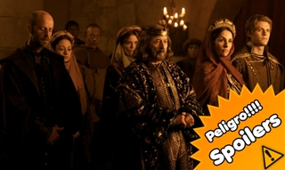
Antena 3 cumplió con su calendario y cerró anoche la primera y única temporada de ‘Toledo’, su primera gran apuesta de ficción para 2012 que, pese a reunir a más de dos millones de espectadores cada semana, no superó la criba necesaria para conseguir la renovación. La ficción histórica no ha contado con los espectaculares datos de audiencia que Antena 3 esperaba alcanzar, siendo una de las primeras series de este tipo de género que no logra tener continuación más allá de la primera temporada.
Las intenciones de ‘Toledo‘ eran buenas. Llegaba para seguir explotando el filón de las series históricas, ése que tan buenos resultados ha dado en el pasado. Además, lo hacía acompañado de un buen reparto, que muchas ficciones envidiarían tener, y con una historia que parecía sólida y atractiva de cara al espectador. Aún así, no podemos decir que ‘Toledo’ haya destacado en el panorama de la ficción nacional, por lo que después de valorar sus aspectos positivos, solo nos queda preguntarnos cuáles han sido los motivos por los que la ficción no ha cumplido con las expectativas.
Siguiendo la estela de ‘Hispania’
Desde su inicio, ‘Toledo’ se ha visto influenciada por cierta saturación existente en el espectador provocada por la continua emisión de ficciones del mismo estilo en el pasado. La serie incluso ha mantenido parecido con otros productos como ‘Hispania’ que, épocas históricas al margen, también ha girado en torno a personajes clave como el rey (en caso de ‘Hispania’ el pretor), el magistrado (en ‘Hispania’ Viriato) y el resto de personajes que buscaban su beneficio personal a costa de perjudicar a los demás. Todo ello decorado con peleas de espadas y conflictos derivados del choque de culturas. Quizá por eso, ‘Toledo’ se ha presentado como la hermana mayor de ‘Hispania’, una ficción que avanzaba en el tiempo pero que presentaba un producto de similares características, que no lograba aportar nada nuevo, principal punto en el que la serie de Antena 3 ha fallado.
‘Toledo’ llamó la curiosidad de más de tres millones de espectadores en su estreno, por lo que consiguió ser un producto atractivo que poco a poco se ha ido desinflando. Otra de las causas que le ha podido influir en este descenso de audiencia se encuentra en la ausencia de credibilidad que ha provocado un conjunto de factores entre los que destacan su ambientación, algunas de sus tramas y el desarrollo de varios de sus personajes. Sobre la ambientación, nada que decir que no se haya dicho ya. Por muy alto que haya sido el presupuesto parece que todavía hay cosas que la ficción española debe mejorar para recrear épocas históricas, sobre todo en cuestión de vestuario y decorados interiores.
Desde el primer día, ‘Toledo’ ha querido ser una serie correcta, en el que los personajes malos actuaran de forma malvada y los buenos se presentaran como los héroes de turno. Díficil elección si tenemos en cuenta la historia que nos pretendían contar, en el que algunos personajes, como el magistrado, deberían tomar decisiones difíciles, unas veces pensando en el bien común y otras centrándose en la felicidad de los suyos. Aún así, el espectador sabía perfectamente dónde estaban los buenos y qué hacían los malos para perjudicarles, y mostrar de una forma tan simple la personalidad de los personajes provoca que no lleguemos a conectar con ellos ni que nos lo terminemos de creer, exactamente lo que le ha pasado a ‘Toledo’ en el desarrollo de su temporada.
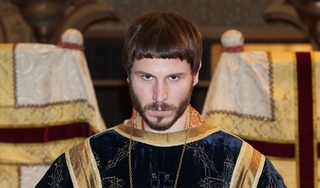
El ejemplo más claro que especifica este hecho se encuentra en la relación que han mantenido el Conde de Miranda con el arzobispo Oliva, una relación que ha terminado mostrando a dos personajillos dependientes el uno del otro que deambulaban siempre juntos murmurando y pensando qué hacer para perjudicar al reino. Hubiera sido más interesante ofrecer algo más de sus historias personales, sobre todo porque cuando hemos visto, por ejemplo, momentos de la relación del Conde con la prostituta ciega, es cuando más personalidad se le ha conseguido dar al personaje y por lo tanto más atractivo se volvía de cara al espectador.
Así, se han mostrado personajes en ocasiones algo planos, con los que el espectador no ha terminado de conectar. Los guionistas se han olvidado de desarrollar sus historias para darnos un episodio autoconclusivo cada semana, otro de los errores con los que ha contado la ficción. ‘Toledo’ no parece ser la serie adecuada para mostrar cómo resuelve el magistrado el problema en el que se centre cada capítulo o en qué nuevo lío se meten el hijo del rey y sus amigos. Hubiera sido más oportuno intercalar estas historias con una trama continuada que mantuviera la atención semana tras semana.
Un final digno
Toca el turno de los elogios, en primer lugar para Antena 3 por mantener la ficción en la noche de los martes sin que los espectadores sufrieramos las consecuencias de ningún tipo de contraprogramación. Es cierto que, pese a no obtener la audiencia deseada para la renovación, los seguidores que conseguía ‘Toledo’ cada semana estaban en la línea de lo aceptable, por lo que también es comprensible que la cadena no haya realizado ningún movimiento que afectara a los episodios de ‘Toledo’. Pero, aún así, no estamos acostumbrados a que una serie que no alcanza las audiencias deseadas mantenga día y horario de emisión cada semana, un buen camino a seguir en el futuro que el espectador acaba agradeciendo.
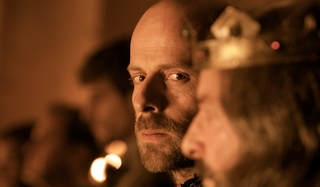
Y, a los creadores de la serie, les tenemos que agradecer el final con el que ‘Toledo’ finalizó su andadura en televisión, cerrando todas y cada una de sus tramas y creando un último episodio que estuvo a la altura de las circunstancias. Quizá, para mi gusto, demasiado correcto (todos los que hicieron algo malo en el pasado, menos el rey, acabaron pagando las consecuencias de sus actos) e incluso la muerte de Rodrigo se veía venir desde que supimos que él también había hecho cosas reprobables cuando estuvo en la guerra. Pero, aún así, el final de la ficción me dejó satisfecho y agradezco que no se dejara ninguna puerta abierta de cara a una posible segunda temporada, algo que al final habríamos acabado lamentando.
‘Toledo’ ha aguantado digna hasta el final gracias al cóctel inicial que formaban algunas de las interpretaciones de sus actores (Eduard Farelo, Fernando Cayo, Rubén Ochandiano…) y a la dosificación de sus tramas, ya que ninguna ha llegado a saturar demasiado y todas ellas han tenido una evolución coherente. Quizá eso es lo que más le podemos reprochar a ‘Toledo’, haber sido una ficción demasiado correcta que no ha querido arriesgarse ni sorprender al público, ya que tampoco se han dado grandes sorpresas ni importantes giros en el guión a lo largo de los trece episodios que ha durado la temporada. Los malos por un lado, los buenos por otro y, mientras tanto, el espectador queda sentado enfrente de la televisión esperando encontrar en la serie algo más que mereciera la pena.
En ¡Vaya tele! | Las referencias históricas en ‘Toledo’
Tue, 03 Apr 2012 09:00:00 GMT
'Juego de tronos' regresa subiendo aún más el listón
'Juego de tronos' regresa subiendo aún más el listón
Si pensábais que la primera temporada de ‘Juego de tronos‘ fue grande en cuanto a cantidad de personajes, de escenarios y de tramas, esta segunda va a subir el listón todavía más. La muerte del rey Robert y, después, de Ned Stark es el detonante de esa guerra de los Cinco Reyes, ese enfrentamiento entre todos los que pretenden reclamar el Trono de Hierro para sí porque creen que Joffrey no es el legítimo heredero. Cada bando tiene no sólo sus propios reyes, sino también sus propios enemigos y sus propios aliados, y todos ellos expanden un poco más el mundo recreado por la serie a partir de los libros de George R.R. Martin. El primer episodio de la segunda temporada (que Canal+ preestrenó en sendos cines de Madrid y Barcelona) tiene mucha presión sobre sus figurados hombros. Las expectativas son todavía más altas, si cabe, que cuando la serie se estrenó, y tiene que situarnos no sólo acerca de dónde están los personajes que ya conocemos, sino que también debe presentarnos a los nuevos jugadores. Por ahora, la premiere opta por no apabullar en ese aspecto (el de los personajes nuevos) y sólo nos da las primeras pinceladas de dos de esos bandos que hasta ahora no conocíamos: el salvaje Craster, que ayuda a la Guardia de la Noche en su exploración más allá del Muro, y la corte de Stannis Baratheon en Rocadragón. Los Cinco Reyes Rocadragón era, tal vez, el lugar que podía descolocar más a los nuevos espectadores, pues aunque se habló mucho de Stannis en la primera temporada, no lo habíamos visto hasta ahora. Da la sensación de ser el “rey” con una pretensión más sólida, como si dijéramos, al Trono de Hierro, y en apenas un par de pinceladas nos damos cuenta enseguida del tipo de hombre que es. También conocemos a esa misteriosa mujer que impulsa a Stannis a ir a la guerra, Melisandre, la sacerdotisa del Señor de la Luz, que con su maniobra de quemar a los “viejos” Siete Dioses ya nos da a entender que no se va a andar con chiquitas, y nos presentan a un muy reservado Davos, del que por el momento sólo sabemos que tiene en muy alta estima su lealtad a Stannis. ‘Juego de tronos’ hace bien en detenerse sólo en Rocadragón, en cuanto a escenarios completamente nuevos, en su estreno de la segunda temporada, porque el capítulo cubre ya tanta trama y tantos personajes, que intentar mostrar a todos los nuevos habría sido excesivo. Utilizando como nexo de unión entre muchas de esas historias el cometa rojo que aparece en el cielo (augurio de dragones, según le cuenta Osha a Bran), el episodio va pasando de una a otra de un modo muy fluido que muestra que David Benioff y D.B. Weiss y Alan Taylor en la dirección están ya muy seguros de sus capacidades para contar una historia tan expansiva como ésta. Eso obliga a que pasemos muy poco tiempo con Daenerys, por ejemplo, que se encuentra en una situación muy desesperada en medio del desierto, y que los minutos que vemos a Robb sirven para poner en movimiento un par de tramas que veremos un poco más adelante, centradas en Catelyn y en Theon Greyjoy. La importancia de Tyrion A ‘Juego de tronos’ le ha venido muy bien que en ‘Choque de reyes‘, el libro que toman como punto de partida, Tyrion Lannister adquiere mucha más importancia al trasladarse a Desembarco del Rey para ser la Mano de Joffrey. Tras haber ganado el Emmy y el Globo de Oro al mejor actor secundario, Peter Dinklage se ha convertido en uno de los rostros más reconocibles de la serie, y este nuevo y expandido rol de su personaje aún va a otorgarle más reconocimiento. Joffrey es un rey niño despreciable del que hasta su madre se da cuenta que puede ser un error mantenerlo en el trono, pero al mismo tiempo, Cersei no va a dejar que nadie mine su poder, como bien le demuestra a Meñique. Que se vea obligada a soportar a Tyrion como Mano del Rey va a resultar muy interesante de ver ya sólo por la tensión y las chispas que saltan en esa escena que comparten los dos hermanos. Esta primera inmersión en la segunda temporada de ‘Juego de tronos’ confirma que el nivel ascendente de la mitad final de la primera entrega se va a mantener y, con un poco de suerte, hasta incrementarse. El capítulo va directamente al meollo de muchas de las historias, dando las explicaciones justas en cada momento, y se mueve a buen ritmo. Sus personajes siguen estando retratados con muchas facetas (excepto Joffrey, que directamente es cruel y malvado) y en lo que parece haberse dado cierto salto cualitativo es en cómo luce todo el trabajo de ambientación y decorados en pantalla. Visto en pantalla grande, este ‘The North remembers‘ tenía todo el aspecto de una película y mostraba una gran confianza en sí misma de la serie como ente independiente de los libros que adapta. Veremos qué augurios nos trae el cometa rojo. En ¡Vaya Tele! | ‘Juego de tronos’:Los bien llevados engranajes de la partida sin fin
Si pensábais que la primera temporada de ‘Juego de tronos‘ fue grande en cuanto a cantidad de personajes, de escenarios y de tramas, esta segunda va a subir el listón todavía más. La muerte del rey Robert y, después, de Ned Stark es el detonante de esa guerra de los Cinco Reyes, ese enfrentamiento entre todos los que pretenden reclamar el Trono de Hierro para sí porque creen que Joffrey no es el legítimo heredero. Cada bando tiene no sólo sus propios reyes, sino también sus propios enemigos y sus propios aliados, y todos ellos expanden un poco más el mundo recreado por la serie a partir de los libros de George R.R. Martin.
El primer episodio de la segunda temporada (que Canal+ preestrenó en sendos cines de Madrid y Barcelona) tiene mucha presión sobre sus figurados hombros. Las expectativas son todavía más altas, si cabe, que cuando la serie se estrenó, y tiene que situarnos no sólo acerca de dónde están los personajes que ya conocemos, sino que también debe presentarnos a los nuevos jugadores. Por ahora, la premiere opta por no apabullar en ese aspecto (el de los personajes nuevos) y sólo nos da las primeras pinceladas de dos de esos bandos que hasta ahora no conocíamos: el salvaje Craster, que ayuda a la Guardia de la Noche en su exploración más allá del Muro, y la corte de Stannis Baratheon en Rocadragón.
Los Cinco Reyes
Rocadragón era, tal vez, el lugar que podía descolocar más a los nuevos espectadores, pues aunque se habló mucho de Stannis en la primera temporada, no lo habíamos visto hasta ahora. Da la sensación de ser el “rey” con una pretensión más sólida, como si dijéramos, al Trono de Hierro, y en apenas un par de pinceladas nos damos cuenta enseguida del tipo de hombre que es. También conocemos a esa misteriosa mujer que impulsa a Stannis a ir a la guerra, Melisandre, la sacerdotisa del Señor de la Luz, que con su maniobra de quemar a los “viejos” Siete Dioses ya nos da a entender que no se va a andar con chiquitas, y nos presentan a un muy reservado Davos, del que por el momento sólo sabemos que tiene en muy alta estima su lealtad a Stannis.
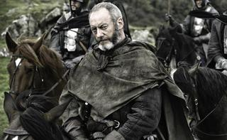
‘Juego de tronos’ hace bien en detenerse sólo en Rocadragón, en cuanto a escenarios completamente nuevos, en su estreno de la segunda temporada, porque el capítulo cubre ya tanta trama y tantos personajes, que intentar mostrar a todos los nuevos habría sido excesivo. Utilizando como nexo de unión entre muchas de esas historias el cometa rojo que aparece en el cielo (augurio de dragones, según le cuenta Osha a Bran), el episodio va pasando de una a otra de un modo muy fluido que muestra que David Benioff y D.B. Weiss y Alan Taylor en la dirección están ya muy seguros de sus capacidades para contar una historia tan expansiva como ésta. Eso obliga a que pasemos muy poco tiempo con Daenerys, por ejemplo, que se encuentra en una situación muy desesperada en medio del desierto, y que los minutos que vemos a Robb sirven para poner en movimiento un par de tramas que veremos un poco más adelante, centradas en Catelyn y en Theon Greyjoy.
La importancia de Tyrion
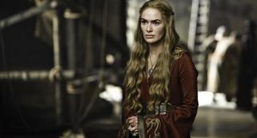
A ‘Juego de tronos’ le ha venido muy bien que en ‘Choque de reyes‘, el libro que toman como punto de partida, Tyrion Lannister adquiere mucha más importancia al trasladarse a Desembarco del Rey para ser la Mano de Joffrey. Tras haber ganado el Emmy y el Globo de Oro al mejor actor secundario, Peter Dinklage se ha convertido en uno de los rostros más reconocibles de la serie, y este nuevo y expandido rol de su personaje aún va a otorgarle más reconocimiento. Joffrey es un rey niño despreciable del que hasta su madre se da cuenta que puede ser un error mantenerlo en el trono, pero al mismo tiempo, Cersei no va a dejar que nadie mine su poder, como bien le demuestra a Meñique. Que se vea obligada a soportar a Tyrion como Mano del Rey va a resultar muy interesante de ver ya sólo por la tensión y las chispas que saltan en esa escena que comparten los dos hermanos.
Esta primera inmersión en la segunda temporada de ‘Juego de tronos’ confirma que el nivel ascendente de la mitad final de la primera entrega se va a mantener y, con un poco de suerte, hasta incrementarse. El capítulo va directamente al meollo de muchas de las historias, dando las explicaciones justas en cada momento, y se mueve a buen ritmo. Sus personajes siguen estando retratados con muchas facetas (excepto Joffrey, que directamente es cruel y malvado) y en lo que parece haberse dado cierto salto cualitativo es en cómo luce todo el trabajo de ambientación y decorados en pantalla. Visto en pantalla grande, este ‘The North remembers‘ tenía todo el aspecto de una película y mostraba una gran confianza en sí misma de la serie como ente independiente de los libros que adapta. Veremos qué augurios nos trae el cometa rojo.
En ¡Vaya Tele! | ‘Juego de tronos’:Los bien llevados engranajes de la partida sin fin
Tue, 03 Apr 2012 05:04:01 GMT
Un, dos, tres, responda otra vez: ¿Qué primeras impresiones os está dejando el nuevo Paramount Channel?
Un, dos, tres, responda otra vez: ¿Qué primeras impresiones os está dejando el nuevo Paramount Channel?
Desde el pasado 30 de marzo, habemus un nuevo canal en nuestra parrilla. En la TDT conviven canales muy diferentes, algunos con una programación un tanto desesperante, por eso, parece que sólo podemos alegrarnos ante la noticia de que una cadena, enteramente dedicada al mundo del cine, ha hecho su aparición. Paramount Channel es un canal que lanza Viacom, en sustitución de La 10 de Vocento. Pero, ¿cómo está resultando la puesta en práctica de ésta, en principio, tan buena novedad?: ¿está la programación a la altura de las expectativas?, ¿el uso de la publicidad es el adecuado?, ¿qué hay de los subtítulos? Hace unos días, nuestro compañero Juan os ofrecía una entrevista con Antonio Campo, Executive Vice President of Music Brands & Managing Director of South Europe de Viacom International Media Networks, pero ahora también queremos saber qué opinan los lectores de ¡Vaya Tele! al respecto. Por eso, la pregunta de esta semana es: ¿Qué primeras impresiones os está dejando el nuevo Paramount Channel?La semana anterior os preguntamos por uno de los regresos más esperados de la ficción estadounidense, y queríamos saber si el primer capítulo de la quinta temporada de ‘Mad Men’ había cumplido con vuestras expectativas o no. De entre todas, la opinión más valorada ha sido la de dharma_4815 con un completo comentario que paso a resumiros: Simplemente genial. (…) Una vuelta con mucho humor del bueno, me he reído más que con muchas de las supuestas comedias que hay actualmente. (…) Sobre los personajes, no sé si es cosa mía, pero los amo a todos y a cada uno de ellos. Parece ser que Don se ha relajado un poco, ya no insiste tanto con los clientes, y parece ser más “feliz” pero eso es de puertas para afuera (…) Por último el cambio claro que se está viendo en la sociedad americana de la época reflejada en los propios personajes. (…) Vamos que todo MUY BIEN. Otros lectores, en cambio, no se han mostrado tan entusiastas, como es el caso de La Ciconia de Brenes, que argumenta: Me esperaba mucho más. Mad Men siempre fue una serie con unos ritmos lentos pero muy marcados. El final de la cuarta temporada me sorprendió por lo rápido que sucedieron algunos acontecimientos. Por ello, y por algunas sub-tramas absurdas considero que después de 17 meses Mad Men me falló en su vuelta. Os dejamos con la nueva pregunta, ya sabéis que para responder y comentar, debéis dirigiros a la sección ¡Vaya Tele! Respuestas y allí podréis contarnos cuál es vuestra opinión. ¡Hasta la semana que viene! En ¡Vaya Tele! Respuestas | ¿Qué primeras impresiones os está dejando el nuevo Paramount Channel?

Desde el pasado 30 de marzo, habemus un nuevo canal en nuestra parrilla. En la TDT conviven canales muy diferentes, algunos con una programación un tanto desesperante, por eso, parece que sólo podemos alegrarnos ante la noticia de que una cadena, enteramente dedicada al mundo del cine, ha hecho su aparición. Paramount Channel es un canal que lanza Viacom, en sustitución de La 10 de Vocento.
Pero, ¿cómo está resultando la puesta en práctica de ésta, en principio, tan buena novedad?: ¿está la programación a la altura de las expectativas?, ¿el uso de la publicidad es el adecuado?, ¿qué hay de los subtítulos? Hace unos días, nuestro compañero Juan os ofrecía una entrevista con Antonio Campo, Executive Vice President of Music Brands & Managing Director of South Europe de Viacom International Media Networks, pero ahora también queremos saber qué opinan los lectores de ¡Vaya Tele! al respecto. Por eso, la pregunta de esta semana es:
¿Qué primeras impresiones os está dejando el nuevo Paramount Channel?
La semana anterior os preguntamos por uno de los regresos más esperados de la ficción estadounidense, y queríamos saber si el primer capítulo de la quinta temporada de ‘Mad Men’ había cumplido con vuestras expectativas o no. De entre todas, la opinión más valorada ha sido la de dharma_4815 con un completo comentario que paso a resumiros:
Simplemente genial. (…) Una vuelta con mucho humor del bueno, me he reído más que con muchas de las supuestas comedias que hay actualmente. (…) Sobre los personajes, no sé si es cosa mía, pero los amo a todos y a cada uno de ellos. Parece ser que Don se ha relajado un poco, ya no insiste tanto con los clientes, y parece ser más “feliz” pero eso es de puertas para afuera (…) Por último el cambio claro que se está viendo en la sociedad americana de la época reflejada en los propios personajes. (…) Vamos que todo MUY BIEN.
Otros lectores, en cambio, no se han mostrado tan entusiastas, como es el caso de La Ciconia de Brenes, que argumenta:
Me esperaba mucho más. Mad Men siempre fue una serie con unos ritmos lentos pero muy marcados. El final de la cuarta temporada me sorprendió por lo rápido que sucedieron algunos acontecimientos. Por ello, y por algunas sub-tramas absurdas considero que después de 17 meses Mad Men me falló en su vuelta.
Os dejamos con la nueva pregunta, ya sabéis que para responder y comentar, debéis dirigiros a la sección ¡Vaya Tele! Respuestas y allí podréis contarnos cuál es vuestra opinión. ¡Hasta la semana que viene!
En ¡Vaya Tele! Respuestas | ¿Qué primeras impresiones os está dejando el nuevo Paramount Channel?
Mon, 02 Apr 2012 11:34:00 GMT
'Missing', otra búsqueda carente de emoción
'Missing', otra búsqueda carente de emoción
La temporada media americana, en la que las cadenas deciden estrenar lo que no se atrevieron a sacar en otoño, nos está dando un buen puñado de series que abarcan un gran abanico de géneros y planteamientos. Solo hay que echar un vistazo a los dramas cuyos pilotos hemos estado viendo en estas últimas semanas, desde ‘Smash’ hasta ‘Touch‘ pasando por ‘Awake‘ y ‘The River’. Una de las que más tarde se ha estrenado ha sido, precisamente, de las más “convencionales” de este grupo (o por lo menos a mí me lo parece): ‘Missing‘, la nueva serie de ABC. ‘Missing’ consta de, de momento, una primera temporada de diez episodios orquestada por Gregory Poirier (‘Rosewood’), de los cuales hemos podido ver los tres primeros. La serie comienza poniéndonos en contexto: hace diez años, viajando con su hijo Michael, el marido de Becca Winstone (Ashley Judd) es asesinado con un coche bomba. Han pasado diez años de dicha tragedia y Michael (Nick Eversman) es admitido para un programa de estudios de arquitectura en Roma. Aunque a Becca no le gusta la idea de que se vacíe el nido le deja marchar. Sin embargo a las pocas semanas su hijo desaparece y decide viajar a Roma para averiguar su paradero; descubrimos entonces que Becca era agente de campo de la CIA (junto con su marido) y su sola presencia en Europa pone en marcha los engranajes de un juego de espionaje y conspiración. La verdad es que, como tal, es una serie bastante clásica dentro de su género. Becca se encontrará con un aliado dentro de la interpol, Giancarlo (Adriano Giannini); y un obstáculo en esta búsqueda, uno de los jefes de la CIA en Europa Dax Miller (Cliff Curtis). Vamos, que poco a poco vemos todos y cada uno de los clichés de este tipo de historia incluyendo a los malos que son muy malos y misteriosos y esas cosas. Decir que ‘Missing’ es mala (tirando a pésima) es quedarse algo corto aunque sea lo justo. Por más que lo pienso lo único que tiene de destacable (y ni eso) es que está rodada casi íntegramente en localizaciones; con mucho exterior fingiendo ser o bien Francia o bien Roma (la serie está rodada en Praga) aunque en ocasiones había planos raros, como si usaran imágenes de stock (si no, no me explico el plano a un conocido bar de copas de Salamanca como si fuera una disco de Roma). El resto tiene un aire bastante cutre en general. Comenzando por las actuaciones, con un reparto más bien limitadito (nadie se cree que Ashley Judd haya sido agente secreto); siguiendo por los guiones llenos de clichés y sentencias tipo “Quiero a mi hijo, daré con él”; y terminando con una dirección carente de todo tipo de emoción ni siquiera en las escenas de acción, a ‘Missing’ no hay por donde cogerla. Y bueno, si al menos fuera ridículamente mala tipo ‘Ringer‘ (que te ríes de lo mala que es), todavía tendría cierto interés en ella, pero la serie falla hasta para eso. A lo mejor me estoy precipitando al decir esto pero creo que ‘Missing’ es muy seria candidata a ocupar el montón de peor serie de 2012. PD. Parece que respecto al tema de audiencias no le va demasiado mal teniendo en cuenta que se enfrenta contra ‘American Idol’ y ‘The Big Bang Theory’. En ¡Vaya Tele! | Trailer de ‘Missing’
La temporada media americana, en la que las cadenas deciden estrenar lo que no se atrevieron a sacar en otoño, nos está dando un buen puñado de series que abarcan un gran abanico de géneros y planteamientos. Solo hay que echar un vistazo a los dramas cuyos pilotos hemos estado viendo en estas últimas semanas, desde ‘Smash’ hasta ‘Touch‘ pasando por ‘Awake‘ y ‘The River’. Una de las que más tarde se ha estrenado ha sido, precisamente, de las más “convencionales” de este grupo (o por lo menos a mí me lo parece): ‘Missing‘, la nueva serie de ABC.
‘Missing’ consta de, de momento, una primera temporada de diez episodios orquestada por Gregory Poirier (‘Rosewood’), de los cuales hemos podido ver los tres primeros. La serie comienza poniéndonos en contexto: hace diez años, viajando con su hijo Michael, el marido de Becca Winstone (Ashley Judd) es asesinado con un coche bomba. Han pasado diez años de dicha tragedia y Michael (Nick Eversman) es admitido para un programa de estudios de arquitectura en Roma. Aunque a Becca no le gusta la idea de que se vacíe el nido le deja marchar.
Sin embargo a las pocas semanas su hijo desaparece y decide viajar a Roma para averiguar su paradero; descubrimos entonces que Becca era agente de campo de la CIA (junto con su marido) y su sola presencia en Europa pone en marcha los engranajes de un juego de espionaje y conspiración. La verdad es que, como tal, es una serie bastante clásica dentro de su género. Becca se encontrará con un aliado dentro de la interpol, Giancarlo (Adriano Giannini); y un obstáculo en esta búsqueda, uno de los jefes de la CIA en Europa Dax Miller (Cliff Curtis). Vamos, que poco a poco vemos todos y cada uno de los clichés de este tipo de historia incluyendo a los malos que son muy malos y misteriosos y esas cosas.
Decir que ‘Missing’ es mala (tirando a pésima) es quedarse algo corto aunque sea lo justo. Por más que lo pienso lo único que tiene de destacable (y ni eso) es que está rodada casi íntegramente en localizaciones; con mucho exterior fingiendo ser o bien Francia o bien Roma (la serie está rodada en Praga) aunque en ocasiones había planos raros, como si usaran imágenes de stock (si no, no me explico el plano a un conocido bar de copas de Salamanca como si fuera una disco de Roma). El resto tiene un aire bastante cutre en general.
Comenzando por las actuaciones, con un reparto más bien limitadito (nadie se cree que Ashley Judd haya sido agente secreto); siguiendo por los guiones llenos de clichés y sentencias tipo “Quiero a mi hijo, daré con él”; y terminando con una dirección carente de todo tipo de emoción ni siquiera en las escenas de acción, a ‘Missing’ no hay por donde cogerla. Y bueno, si al menos fuera ridículamente mala tipo ‘Ringer‘ (que te ríes de lo mala que es), todavía tendría cierto interés en ella, pero la serie falla hasta para eso. A lo mejor me estoy precipitando al decir esto pero creo que ‘Missing’ es muy seria candidata a ocupar el montón de peor serie de 2012.
PD. Parece que respecto al tema de audiencias no le va demasiado mal teniendo en cuenta que se enfrenta contra ‘American Idol’ y ‘The Big Bang Theory’.
En ¡Vaya Tele! | Trailer de ‘Missing’
Mon, 09 Apr 2012 04:00:00 GMT
Cinco razones para ver 'Homeland'
Cinco razones para ver 'Homeland'
Este lunes estamos de enhorabuena televisiva porque para los que aún no hayan podido verla (y para los que sí, pero quieran disfrutar de un segundo visionado, con más calma y más enriquecedor) la buena noticia es que ‘Homeland’ llega por fin a la televisión española, de mano, eso sí, de la Fox. ¿Para cuando un canal en abierto se ocupará de no tardar una eternidad en traernos este tipo de series? Eso ya es harina de otro costal… A partir de las 22:20, la ficción protagonizada por Claire Daines y Damien Lewis llenará de tensión dramática las pequeñas pantallas de los que sintonicen con uno de los mejores estrenos del 2011. Para los que se guían por los premios y reconocimientos, decir que ‘Homeland’ fue la ganadora del Globo de Oro a la Mejor Serie Dramática, y que su actriz principal también se llevó el galardón. ¿Y si no se lo hubiese llevado? Pues aquí tenéis cinco razones por las que creo que cualquiera debería verla, y maravillarse. Por cierto, a las razones acompañan algunos spoilers, así que obrad en consecuencia. Una historia actual y valiente Una de las cosas que más llama la atención de la serie de Showtime es el tema que trata. Nicholas Brody es un soldado estadounidense que luchaba en Irak y que lleva ocho años desaparecido. Todos le daban por muerto cuando, tras una acción militar del ejército americano, es salvado. Su rescate toma tintes de milagro y Brody vuelve a los E.E.U.U. como un héroe. Pero hay una agente de la CIA, Carrie Mathison, que no está muy convencida sobre la versión que el supuesto héroe ha contado. A algunas personas el tema de la guerra, la CIA, el terrorismo… puede generarles un poco de pereza, sólo puedo sugerirles que vean el primer capítulo. El tratamiento que se le da al contenido de la trama es realmente interesante y muy innovador. Y, en muchas ocasiones, genera un “menos mal que alguien cuenta estas cosas”. Aunque a todos nos encanten las series históricas, fantásticas, las comedias surrealistas (y a mí, la primera), se agradece que también se atrevan a hablar de una realidad tan cercana y con unas implicaciones tan brutales. El mecanismo de un reloj Para mí, lo mejor de esta serie es su guion. A la hora de escribir, una de las primeras pautas que se aprenden es la regla de causa y efecto. Esto es, que cualquier acción que se detone en una secuencia debe servir para generar una consecuencia, tal vez en la escena siguiente, o a partir de un giro, o cinco capítulos más allá. Nunca se puede escribir una secuencia que no lleve a nada, esto es rellenar o, visto de manera más tajante, estafar al espectador. En ‘Homeland’ el guion funciona de una manera tan precisa como lo haría el mecanismo de un reloj. Cada uno de los pasos que se dan sirve para seguir avanzando en la trama, para ayudar a abrir un nuevo frente. Nada es gratuito, todo tiene un porqué. Un hecho conduce a otro y éste, a otro nuevo. Parece como de cajón, pero conseguirlo no está al alcance de muchos. La acción es trepidante, siempre está pasando algo y algo importante además, algo que condicionará el futuro de los personajes. En cada capítulo, hay numerosos giros y sorpresas, pero está contado con un ritmo que consigue adecuarse perfectamente al momento. Puede ser trepidante cuando la circunstancia lo demanda pero también sabe dar su tiempo al espectador para que asimile un gesto o una actitud. Personajes que son personas
La trama política, las implicaciones internacionales, las consecuencias de una guerra son importantísimas pero, sobre todo, porque afectan a individuos de carne y hueso (y corazón y entrañas). El hecho de que los personajes vivan en el ojo del huracán no quiere decir que dejen de lado sus vidas, sus relaciones personales y afectivas, porque de hecho, nadie es capaz de escapar a eso. Un hombre “perdido” durante ocho años, una mujer que cree que su marido ha muerto, un amigo que se enamora de la esposa de otro, un brillante miembro de la CIA que no puede ordenar su vida privada, pero también una pareja de enamorados que entregan su vida a una causa, o una acompañante de lujo que duda entre su trabajo y lo que considera es su deber para con la patria. Todos ellos viven al compás de la historia, determinados por lo que sus acciones depararán, tratando de salir inmunes de un peligroso baile. ¿Los buenos y los malos? Y de nuevo, los giros de la historia. En un mismo capítulo, el espectador es capaz de cambiar de opinión respecto a los personajes un centenar de veces. La moralidad es uno de los temas principales de la serie, la diferencia entre el bien y el mal con la que todos hemos de lidiar alguna vez. Pero, además, no ofrece juicios de valor, las situaciones tienen diferentes perspectivas, complementarias, la ficción las muestra y no se “pone de parte” de nadie. Los flashbacks de la vida de Brody en Irak, de su relación con Abu Nazir, nos ponen en la picota a nosotros mismos, pues nos podemos encontrar, sin darnos cuenta, empatizando con aquello que más horror nos causa. ¿Es Brody un villano?, ¿actúa bien Jessica?, ¿es justificable la forma de comportarse de Carrie? ‘Homeland’ tiene la virtud de mostrarnos los grises, y no quedarse con los blancos y negros. Carrie Mathison y Nicholas Brody Elegir sólo a uno de los personajes me resulta difícil. La evolución que ambos viven a lo largo de los capítulos, las situaciones límites… los convierten en una pareja protagonista atípica y estupenda. Carrie es una mujer que antepone su carrera profesional a todo lo demás. Incluso a los problemas mentales que sufre, y que debe ocultar para no ser apartada de su trabajo. Claire Danes es una gran actriz, ya lo sabíamos, pero los dos últimos capítulos de la primera temporada de ‘Homeland’ la ponen en otra liga. La determinación, la fuerza, el empuje con el que vive Carrie contrastan con la fragilidad, el caos y la soledad que demuestra en otros momentos. Y (menos mal) no es la típica agente perfecta, de hecho, es muy imperfecta, y por eso, ideal para un espectador que quiere ver algo nuevo. ¿Es Brody la víctima de esta historia o es el verdugo? Un hombre disciplinado, volcado en el servicio a su país, al que la guerra desbarata su idea del mundo, tan clara y transparente. Cuando marcha a Irak tiene una preciosa mujer, una casa, dos niños… cuando vuelve, el universo estalla con él. Y ese hermetismo, que apenas permite al espectador asomarse a su abismo interior, el rictus duro que sólo esconde temor… Brody es el hombre obligado a ser un héroe, un héroe a dos niveles, que tiene que elegir y que no puede compartir su carga con nadie, como buen héroe. En ¡Vaya Tele! | ‘Homeland’ y ‘Touch’ se verán en Fox España
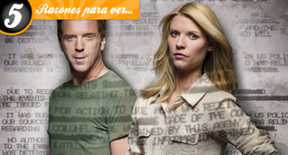
Este lunes estamos de enhorabuena televisiva porque para los que aún no hayan podido verla (y para los que sí, pero quieran disfrutar de un segundo visionado, con más calma y más enriquecedor) la buena noticia es que ‘Homeland’ llega por fin a la televisión española, de mano, eso sí, de la Fox. ¿Para cuando un canal en abierto se ocupará de no tardar una eternidad en traernos este tipo de series? Eso ya es harina de otro costal…
A partir de las 22:20, la ficción protagonizada por Claire Daines y Damien Lewis llenará de tensión dramática las pequeñas pantallas de los que sintonicen con uno de los mejores estrenos del 2011. Para los que se guían por los premios y reconocimientos, decir que ‘Homeland’ fue la ganadora del Globo de Oro a la Mejor Serie Dramática, y que su actriz principal también se llevó el galardón. ¿Y si no se lo hubiese llevado? Pues aquí tenéis cinco razones por las que creo que cualquiera debería verla, y maravillarse. Por cierto, a las razones acompañan algunos spoilers, así que obrad en consecuencia.
Una historia actual y valiente
Una de las cosas que más llama la atención de la serie de Showtime es el tema que trata. Nicholas Brody es un soldado estadounidense que luchaba en Irak y que lleva ocho años desaparecido. Todos le daban por muerto cuando, tras una acción militar del ejército americano, es salvado. Su rescate toma tintes de milagro y Brody vuelve a los E.E.U.U. como un héroe. Pero hay una agente de la CIA, Carrie Mathison, que no está muy convencida sobre la versión que el supuesto héroe ha contado.
A algunas personas el tema de la guerra, la CIA, el terrorismo… puede generarles un poco de pereza, sólo puedo sugerirles que vean el primer capítulo. El tratamiento que se le da al contenido de la trama es realmente interesante y muy innovador. Y, en muchas ocasiones, genera un “menos mal que alguien cuenta estas cosas”. Aunque a todos nos encanten las series históricas, fantásticas, las comedias surrealistas (y a mí, la primera), se agradece que también se atrevan a hablar de una realidad tan cercana y con unas implicaciones tan brutales.
El mecanismo de un reloj
Para mí, lo mejor de esta serie es su guion. A la hora de escribir, una de las primeras pautas que se aprenden es la regla de causa y efecto. Esto es, que cualquier acción que se detone en una secuencia debe servir para generar una consecuencia, tal vez en la escena siguiente, o a partir de un giro, o cinco capítulos más allá. Nunca se puede escribir una secuencia que no lleve a nada, esto es rellenar o, visto de manera más tajante, estafar al espectador.
En ‘Homeland’ el guion funciona de una manera tan precisa como lo haría el mecanismo de un reloj. Cada uno de los pasos que se dan sirve para seguir avanzando en la trama, para ayudar a abrir un nuevo frente. Nada es gratuito, todo tiene un porqué. Un hecho conduce a otro y éste, a otro nuevo. Parece como de cajón, pero conseguirlo no está al alcance de muchos.
La acción es trepidante, siempre está pasando algo y algo importante además, algo que condicionará el futuro de los personajes. En cada capítulo, hay numerosos giros y sorpresas, pero está contado con un ritmo que consigue adecuarse perfectamente al momento. Puede ser trepidante cuando la circunstancia lo demanda pero también sabe dar su tiempo al espectador para que asimile un gesto o una actitud.
Personajes que son personas
La trama política, las implicaciones internacionales, las consecuencias de una guerra son importantísimas pero, sobre todo, porque
afectan a individuos de carne y hueso (y corazón y entrañas). El hecho de que los personajes vivan en el ojo del huracán no quiere decir que dejen de lado sus vidas, sus relaciones personales y afectivas, porque de hecho, nadie es capaz de escapar a eso.
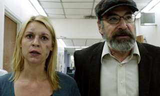
Un hombre “perdido” durante ocho años, una mujer que cree que su marido ha muerto, un amigo que se enamora de la esposa de otro, un brillante miembro de la CIA que no puede ordenar su vida privada, pero también una pareja de enamorados que entregan su vida a una causa, o una acompañante de lujo que duda entre su trabajo y lo que considera es su deber para con la patria. Todos ellos viven al compás de la historia, determinados por lo que sus acciones depararán, tratando de salir inmunes de un peligroso baile.
¿Los buenos y los malos?
Y de nuevo, los giros de la historia. En un mismo capítulo, el espectador es capaz de cambiar de opinión respecto a los personajes un centenar de veces. La moralidad es uno de los temas principales de la serie, la diferencia entre el bien y el mal con la que todos hemos de lidiar alguna vez. Pero, además, no ofrece juicios de valor, las situaciones tienen diferentes perspectivas, complementarias, la ficción las muestra y no se “pone de parte” de nadie.
Los flashbacks de la vida de Brody en Irak, de su relación con Abu Nazir, nos ponen en la picota a nosotros mismos, pues nos podemos encontrar, sin darnos cuenta, empatizando con aquello que más horror nos causa. ¿Es Brody un villano?, ¿actúa bien Jessica?, ¿es justificable la forma de comportarse de Carrie? ‘Homeland’ tiene la virtud de mostrarnos los grises, y no quedarse con los blancos y negros.
Carrie Mathison y Nicholas Brody
Elegir sólo a uno de los personajes me resulta difícil. La evolución que ambos viven a lo largo de los capítulos, las situaciones límites… los convierten en una pareja protagonista atípica y estupenda.
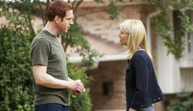
Carrie es una mujer que antepone su carrera profesional a todo lo demás. Incluso a los problemas mentales que sufre, y que debe ocultar para no ser apartada de su trabajo. Claire Danes es una gran actriz, ya lo sabíamos, pero los dos últimos capítulos de la primera temporada de ‘Homeland’ la ponen en otra liga. La determinación, la fuerza, el empuje con el que vive Carrie contrastan con la fragilidad, el caos y la soledad que demuestra en otros momentos. Y (menos mal) no es la típica agente perfecta, de hecho, es muy imperfecta, y por eso, ideal para un espectador que quiere ver algo nuevo.
¿Es Brody la víctima de esta historia o es el verdugo? Un hombre disciplinado, volcado en el servicio a su país, al que la guerra desbarata su idea del mundo, tan clara y transparente. Cuando marcha a Irak tiene una preciosa mujer, una casa, dos niños… cuando vuelve, el universo estalla con él. Y ese hermetismo, que apenas permite al espectador asomarse a su abismo interior, el rictus duro que sólo esconde temor… Brody es el hombre obligado a ser un héroe, un héroe a dos niveles, que tiene que elegir y que no puede compartir su carga con nadie, como buen héroe.
En ¡Vaya Tele! | ‘Homeland’ y ‘Touch’ se verán en Fox España
Sun, 08 Apr 2012 17:07:38 GMT
Nova cambia su imagen corporativa
Nova cambia su imagen corporativa
Nova se renueva. Han visto la luz las que serán las nuevas cortinillas del canal femenino del grupo en las que podemos ver cómo será la nueva imagen que tendrá en breve. Vemos un nuevo logotipo, mucho más moderno y de bonito diseño que viene a sustituir al ya anticuado logo anterior, y que se integra bien con otros elementos en movimiento. Es un cambio necesario para Nova que necesita revitalizar su imagen, algo estancada, sobre todo ahora que Divinity tiene tanta fuerza y le está comiendo terreno. Siendo mucho más veterana, a Nova le cuesta subir en su audiencia mes a mes, mientras que el avance de Divinity ha situado al canal de Mediaset a sólo una décima de Nova en el último mes. Y dentro del grupo Antena 3 también hemos visto cómo Nitro llegó después y superó sin problemas a su “hermana”. Pero Nova necesita un cambio y no sólo en cuanto a la mosca y las cortinillas sino también en sus contenidos. Porque si algo explica su dificultad para subir de audiencia es la monotonía de contenidos que reina en su parrilla y la falta de novedades. Parece ser que el Grupo Antena 3 está dedicando todos sus recursos económicos en fortalecer Neox, y en menor medida Nitro, y esto está perjudicando al presupuesto de Nova que no desde hace tiempo carece de contenidos punteros. Entre semana, podemos contar hasta nueve telenovelas en su day time y la oferta de prime time es siempre cine bajo el contenedor ‘Cine Supernova’. Los fines de semana encontramos algo más de diferencia con algún docu-reality, reposiciones de programas como ‘¡Ahora Caigo!’ o ‘Atrapa un millón’ y también alguna que otra serie en prime time. Poco contenido propio, a diferencia de tiempos pasados donde sí se apostó por porgramas originales para Nova, y muy poca variedad de contenidos. Así es normal que Divinity se acerque peligrosamente, ¿no? Vía | Youtube GrupoAntena3Visual En ¡Vaya Tele! | Nova
Nova se renueva. Han visto la luz las que serán las nuevas cortinillas del canal femenino del grupo en las que podemos ver cómo será la nueva imagen que tendrá en breve. Vemos un nuevo logotipo, mucho más moderno y de bonito diseño que viene a sustituir al ya anticuado logo anterior, y que se integra bien con otros elementos en movimiento.
Es un cambio necesario para Nova que necesita revitalizar su imagen, algo estancada, sobre todo ahora que Divinity tiene tanta fuerza y le está comiendo terreno. Siendo mucho más veterana, a Nova le cuesta subir en su audiencia mes a mes, mientras que el avance de Divinity ha situado al canal de Mediaset a sólo una décima de Nova en el último mes. Y dentro del grupo Antena 3 también hemos visto cómo Nitro llegó después y superó sin problemas a su “hermana”.
Pero Nova necesita un cambio y no sólo en cuanto a la mosca y las cortinillas sino también en sus contenidos. Porque si algo explica su dificultad para subir de audiencia es la monotonía de contenidos que reina en su parrilla y la falta de novedades. Parece ser que el Grupo Antena 3 está dedicando todos sus recursos económicos en fortalecer Neox, y en menor medida Nitro, y esto está perjudicando al presupuesto de Nova que no desde hace tiempo carece de contenidos punteros.
Entre semana, podemos contar hasta nueve telenovelas en su day time y la oferta de prime time es siempre cine bajo el contenedor ‘Cine Supernova’. Los fines de semana encontramos algo más de diferencia con algún docu-reality, reposiciones de programas como ‘¡Ahora Caigo!’ o ‘Atrapa un millón’ y también alguna que otra serie en prime time. Poco contenido propio, a diferencia de tiempos pasados donde sí se apostó por porgramas originales para Nova, y muy poca variedad de contenidos. Así es normal que Divinity se acerque peligrosamente, ¿no?
Vía | Youtube GrupoAntena3Visual
En ¡Vaya Tele! | Nova
Sat, 07 Apr 2012 12:00:00 GMT
Cabeceras de series hechas por fans
Cabeceras de series hechas por fans
En fenómeno fan no tiene límites, y menos desde que llegó internet. La conexión a la red nos permite compartir nuestros gustos con millones de personas por todo el mundo de diversas formas. Estas maneras de relacionarse han ido evolucionando junto con los avances tecnológicos, primero llegaron las webs, los fanfic o fanart más rudimentarios, luego los foros o los blogs y más tarde las redes sociales. Y con Youtube el video se popularizó en la red y dio la posibilidad a muchos de mostrar su habilidad en la edición. Y claro, si frikismo y maestría en la edición de video pueden salir cosas muy chulas. Más de uno se ha animado a crear su propia versión de títulos de crédito para una serie y subirla a la red. Y lo cierto es que muchas de estas cabeceras están casi a la altura de las originales. Otras consiguen darle una vuelta al concepto del que partían, y consiguen resultados curiosos. Veamos unas cuantas. Cambiando de género Hablando de darle una vuelta al concepto de una serie tenemos que hacer una parada en esta categoría de videos, las cabeceras fan made que partiendo de las imágenes de una serie montan una pieza en la que dicha ficción parece pertenecer a otro género. Un ejemplo muy claro de esto (aunque tenga ya su tiempo) es el video que veis sobre estas líneas, ‘Lost: the sitcom’, en el que reinterpretan ‘Perdidos’ como si fuese una comedia de situación por obra y gracia de la sintonía de ‘Cosas de casa’. Las imágenes están perfectamente escogidas (increíble que hayan encontrado ese plano de Juliet) para recrear el tono de una comedia, sin ser ‘Perdidos’ nada de eso. O también podéis ver cómo sería la serie de Jack y Kate si fuese un drama adolescente. Uniendo las series favoritas ¿Cómo sería tal serie si tuviese el estilo de tal otra? Esa pregunta se debieron hacer los fans que han hecho este tipo de cabeceras. Unir las imágenes de una ficción con la sintonía y forma de montar de otra puede resultar curioso y a veces encajar muy bien. Las imágenes de la británica ‘Merlín’ encajan a la perfección con la épica que desprende ‘Juego de Tronos’, y así lucirían los hermanos Winchester de ‘Sobrenatural’ si su cabecera fuese como la de ‘Angel’. Al estilo ‘Friends’ Dentro del epígrafe anterior de mezclar series para hacer una nueva cabecera es justo otorgarle una categoría propia a las cabeceras al estilo ‘Friends‘, aunque sea por número. No hay serie que se precie que no tenga su versión de cabecera parodiando a la mítica sitcom de la NBC. No es complicado: la tipografía, imágenes divertidas de cada personaje y una inconfundible canción, aunque no todas lo hacen con el mismo acierto. Con las comedias es fácil, pero es más divertido cuando lo que se adaptan son dramas, porque los ves más sacados de contexto. Muy buen resultado es el de ‘Sherlock’ que encabeza la entrada, y tampoco está nada mal la versión ‘Sobrenatural’ (se ve que sus fans son muy activos), pero con buscar “opening friends style” junto al nombre de cualquier serie encontraréis miles más. Para mí si encajan bien las imágenes con las palmadas, ya merecen el aprobado. ¿Mejorando lo presente? Y luego hay algunas cabeceras hechas por fans que bien podrían desbancar de su puesto a las originales, o al menos competir en casi igualdad de condiciones. Tenemos como ejemplo ésta de ‘The Walking Dead’ hecha usando las imágenes del cómic y añadiéndole animación. Realmente alucinante. ¿Vosotros os animáis a montar vuestra propia versión? ¿Qué series uniríais o a cuáles le cambiaríais el género? En ¡Vaya Tele! | Cinco espectaculares cabeceras de HBO
En fenómeno fan no tiene límites, y menos desde que llegó internet. La conexión a la red nos permite compartir nuestros gustos con millones de personas por todo el mundo de diversas formas. Estas maneras de relacionarse han ido evolucionando junto con los avances tecnológicos, primero llegaron las webs, los fanfic o fanart más rudimentarios, luego los foros o los blogs y más tarde las redes sociales. Y con Youtube el video se popularizó en la red y dio la posibilidad a muchos de mostrar su habilidad en la edición.
Y claro, si frikismo y maestría en la edición de video pueden salir cosas muy chulas. Más de uno se ha animado a crear su propia versión de títulos de crédito para una serie y subirla a la red. Y lo cierto es que muchas de estas cabeceras están casi a la altura de las originales. Otras consiguen darle una vuelta al concepto del que partían, y consiguen resultados curiosos. Veamos unas cuantas.
Cambiando de género
Hablando de darle una vuelta al concepto de una serie tenemos que hacer una parada en esta categoría de videos, las cabeceras fan made que partiendo de las imágenes de una serie montan una pieza en la que dicha ficción parece pertenecer a otro género. Un ejemplo muy claro de esto (aunque tenga ya su tiempo) es el video que veis sobre estas líneas, ‘Lost: the sitcom’, en el que reinterpretan ‘Perdidos’ como si fuese una comedia de situación por obra y gracia de la sintonía de ‘Cosas de casa’. Las imágenes están perfectamente escogidas (increíble que hayan encontrado ese plano de Juliet) para recrear el tono de una comedia, sin ser ‘Perdidos’ nada de eso. O también podéis ver cómo sería la serie de Jack y Kate si fuese un drama adolescente.
Uniendo las series favoritas
¿Cómo sería tal serie si tuviese el estilo de tal otra? Esa pregunta se debieron hacer los fans que han hecho este tipo de cabeceras. Unir las imágenes de una ficción con la sintonía y forma de montar de otra puede resultar curioso y a veces encajar muy bien. Las imágenes de la británica ‘Merlín’ encajan a la perfección con la épica que desprende ‘Juego de Tronos’, y así lucirían los hermanos Winchester de ‘Sobrenatural’ si su cabecera fuese como la de ‘Angel’.
Al estilo ‘Friends’
Dentro del epígrafe anterior de mezclar series para hacer una nueva cabecera es justo otorgarle una categoría propia a las cabeceras al estilo ‘Friends‘, aunque sea por número. No hay serie que se precie que no tenga su versión de cabecera parodiando a la mítica sitcom de la NBC. No es complicado: la tipografía, imágenes divertidas de cada personaje y una inconfundible canción, aunque no todas lo hacen con el mismo acierto. Con las comedias es fácil, pero es más divertido cuando lo que se adaptan son dramas, porque los ves más sacados de contexto. Muy buen resultado es el de ‘Sherlock’ que encabeza la entrada, y tampoco está nada mal la versión ‘Sobrenatural’ (se ve que sus fans son muy activos), pero con buscar “opening friends style” junto al nombre de cualquier serie encontraréis miles más. Para mí si encajan bien las imágenes con las palmadas, ya merecen el aprobado.
¿Mejorando lo presente?
Y luego hay algunas cabeceras hechas por fans que bien podrían desbancar de su puesto a las originales, o al menos competir en casi igualdad de condiciones. Tenemos como ejemplo ésta de ‘The Walking Dead’ hecha usando las imágenes del cómic y añadiéndole animación. Realmente alucinante.
¿Vosotros os animáis a montar vuestra propia versión? ¿Qué series uniríais o a cuáles le cambiaríais el género?
En ¡Vaya Tele! | Cinco espectaculares cabeceras de HBO
Sat, 07 Apr 2012 05:00:00 GMT
Fox ampliará su espacio para sitcoms la próxima temporada
Fox ampliará su espacio para sitcoms la próxima temporada
El presidente de Fox, Kevin Reilly, ha confirmado ante la prensa que la cadena expandirá sus franjas de comedia de cara a la próxima temporada. Hablamos de series de imagen real, ya que las comedias animadas del domingo tienen su hueco hecho independientemente de las otras. Esto significa no sólo que habrá más sitcoms en la parrilla, sino que además las actuales tienen más probabilidades de volver. En la presente temporada Fox contaba con sólo dos slots de sitcom en toda su semana (como decimos, sin contar el domingo) que tenían lugar los martes donde se emitían ‘Rainsing Hope’ y ‘New Girl’ acompañando a ‘Glee’, y el resto de espacios eran para dramas o dramedias. No obstante, la cadena ha emitido otras sitcoms además de las nombradas como ‘I hate my teenage daugther’ (ya cancelada) o ‘Breaking in’ programándola en los huecos que dejaban los parones de otras series. Pero la próxima temporada serán cuatro las sitcoms que emitan en horario regular. La noticia pone de repente a ‘Raising Hope’ en muy buena posición. La renovación de ‘New Girl’ se da por hecho y ‘Breaking in’ es prácticamente cadáver, en cambio ‘Raising Hope’ se encontraba en la cuerda floja, como os contábamos en Edición USA. Con sólo dos huecos para comedia, lo normal hubiese sido cancelar ‘Raising Hope’ para dejar espacio a una nueva serie la próxima temporada, pero contando con cuatro huecos sería raro que apostasen por tres nuevas. Así que si la serie de Martha Plimpton no lo hace muy mal, tiene bastantes opciones de ser renovada. Vía | TVbythenumbers En ¡Vaya Tele! | Edición USA: ‘Alcatraz’ se despide con mínimo, ‘Mad Men’ regresa con fuerza, esperanza para ‘Community’ y más
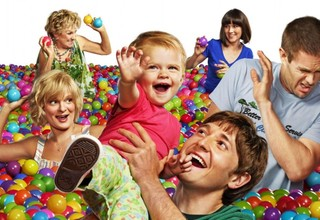
El presidente de Fox, Kevin Reilly, ha confirmado ante la prensa que la cadena expandirá sus franjas de comedia de cara a la próxima temporada. Hablamos de series de imagen real, ya que las comedias animadas del domingo tienen su hueco hecho independientemente de las otras. Esto significa no sólo que habrá más sitcoms en la parrilla, sino que además las actuales tienen más probabilidades de volver.
En la presente temporada Fox contaba con sólo dos slots de sitcom en toda su semana (como decimos, sin contar el domingo) que tenían lugar los martes donde se emitían ‘Rainsing Hope’ y ‘New Girl’ acompañando a ‘Glee’, y el resto de espacios eran para dramas o dramedias. No obstante, la cadena ha emitido otras sitcoms además de las nombradas como ‘I hate my teenage daugther’ (ya cancelada) o ‘Breaking in’ programándola en los huecos que dejaban los parones de otras series. Pero la próxima temporada serán cuatro las sitcoms que emitan en horario regular.
La noticia pone de repente a ‘Raising Hope’ en muy buena posición. La renovación de ‘New Girl’ se da por hecho y ‘Breaking in’ es prácticamente cadáver, en cambio ‘Raising Hope’ se encontraba en la cuerda floja, como os contábamos en Edición USA. Con sólo dos huecos para comedia, lo normal hubiese sido cancelar ‘Raising Hope’ para dejar espacio a una nueva serie la próxima temporada, pero contando con cuatro huecos sería raro que apostasen por tres nuevas. Así que si la serie de Martha Plimpton no lo hace muy mal, tiene bastantes opciones de ser renovada.
Vía | TVbythenumbers
En ¡Vaya Tele! | Edición USA: ‘Alcatraz’ se despide con mínimo, ‘Mad Men’ regresa con fuerza, esperanza para ‘Community’ y más
Fri, 06 Apr 2012 11:55:23 GMT
'Spartacus' termina temporada con un final apoteósico
'Spartacus' termina temporada con un final apoteósico
Wow. Creo que eso fue lo mismo que exclamé tras ver los títulos de crédito al final del último episodio de ‘Spartacus: Vengeance‘ (o de la segunda temporada, como prefiráis llamarlo, aunque así suena menos fashion decirlo). Un “wow” que empezó de menos a más en el capítulo, desde las primeras y tímidas escenas del principio hasta el apoteósico final. Y los que ya lo hayáis visto sabréis el motivo, pero llegaremos a eso más adelante en esta review. Algo similar ha ocurrido con toda la segunda temporada. En mi opinión, el comienzo fue bastante irregular, pero conforme la trama fue avanzando también lo fue haciendo su intensidad. Esperable, si tenemos en cuenta dónde nos dejó la primera temporada, pero se habría agradecido que el ritmo fuera un poco más constante. Y ya aviso que de aquí en adelante hay spoilers por doquier, así que no os recomiendo seguir leyendo si aún no habéis visto la temporada completa. Nueva temporada, nuevas historias y nuevo Spartacus He de confesar que con el primer episodio de ‘Spartacus: Vengeance’ me sentí bastante perdida. No sólo no recordaba demasiado respecto a la primera temporada, sino que el cambio en el actor protagonista me quedé algo desconcertada. La ausencia de Andy Whitfield se nota, y mucho sobre todo en los primeros compases, pero a favor de Liam McIntyre hemos de decir que se integra bastante bien y que pronto se hace con el personaje. Pero el cambio de temporada también trae consigo un cambio en la dinámica: Spartacus y su séquito de esclavos deja atrás Capua y comienza su particular causa por la libertad. En realidad, al principio todo comienza a moverse por la venganza (de Spartacus hacia Glaber por matar a su mujer) y por la búsqueda del amor perdido (con Crixus loco por encontrar a Naevia), pero a medida que avanzamos todo esto deja paso a la verdadera causa: la libertad. Lo que sí quizás eché un poco de menos es la interacción entre esclavos y romanos, que tanto juego dio en la primera temporada. Aquí Spartacus y su grupo iban más por su cuenta, por los bosques, mientras que los romanos, liderados por un grandísimo Glaber, estaban empeñados en capturarlos. Si la primera temporada sirvió como lucimiento personal del personaje Quintus Batiatus, en esta segunda hemos visto a un estupendo e intenso Glaber aún más obsesionado por dar caza a Spartacus. Un final apoteósico La dinámica de toda la temporada fue más o menos la misma que comentaba justo ahora: Spartacus huyendo y dando esquinazo a Glaber, fastidiándolo todo lo posible; Ilythia embarazada presionando a Glaber para volver a Roma, Lucretia aparentemente loca entregada a los dioses después de sufrir la pérdida de su bebé y su marido a manos de Spartacus, Crixus reencontrándose con el amor… Pero todo cambia en los últimos capítulos. Parece que va a llegar el final, sí o sí, del pequeño grupo de esclavos rebeldes. Glaber los acorrala en el Vesubio, esperando a que no les quede más remedio que descender en búsqueda desesperada de comida… ¿O no? Pues, como era de esperar, no. No contaban con el ingenio de Spartacus y sus chicos, que les sorprenden en sus puestos y consiguen romper el cerco. Mientras tanto, en Capua, Ilythia parece decidida a matar a Lucretia por sugerencia de su marido, pero para su sorpresa se tornan los papeles y es Lucretia la que, confesando haber estado interpretando un personaje durante todo este tiempo, lleva a cabo su ansiada venganza y también sella su destino sin dudarlo dos veces. Criba de personajes Si algo admiro de los responsables de ‘Spartacus’ es que no tienen miedo a eliminar de la ecuación a los personajes que ya han cumplido su cometido. Ya nos lo demostraron al final de temporada con el asesinato de Quintus, y han vuelto a probarlo ahora en uno de los capítulos con más muertes que recuerdo haber visto nunca (y creedme, llevo vistos unos cuantos). En el apartado de los esclavos, nos deja Mira (a la que, sinceramente, creo que no voy a echar mucho de menos) después de un accidente fortuito en una lucha con unos romanos, nos deja Ashur después de un mano a mano de infarto con Naevia (de esta lucha me quedaría con Crixus y el sufrimiento que el actor plasmaba magistralmente en su cara viendo a su amada arriesgar su vida) y nos deja Oenomaus en una de las luchas finales (a éste sí que le echaremos de menos). En el bando de los romanos es Glaber el que ve llegar su fin con la espada de Spartacus atravesándole la boca. En Capua, Lucretia decide “desenvolver el regalo” de una embarazadísima Ilythia (escena chocante donde las haya) para después tirarse al vacío sin miramientos con el bebé en la mano y encontrarse así con su marido en el más allá, mientras Ilythia se desangra en el suelo mirándola fijamente… Tres personajes principales que se han “cargado” sin miramientos de cara a una tercera temporada porque seguramente no tendrían cabida en la nueva historia. Otros aspectos a destacar
Incido en toda la trama de Lucretia. Yo me había creído toda su “locura” y su después afección por Ilythia, para después encontrarme con la realidad: todo es una escenificación a la que ha ayudado una magnífica interpretación de Lucy Lawless.
Triángulo Seppia, Glaber e Ilythia. Si bien es verdad que toda la trama con Seppia siempre me pareció estar “de más”, poco a poco se va entendiendo la necesidad del personaje en la relación entre Glaber e Ilythia. Su muerte es probablemente una de las escenas más fuertes e impactantes de la temporada.
La consolidación de Crixus. Spartacus se ha lucido esta temporada, sí, pero la importancia que ha cobrado Crixus también merece ser digna de mención. El personaje sigue creciendo capítulo a capítulo y en estos episodios nos ha dejado algunas escenas memorables.
Y el buen trabajo de Liam McIntyre. Como decía, al principio a mí al menos se me hizo algo raro el cambio de actor, pero pronto Liam se hizo con el papel. Los discursos del final ya nos muestran a un Spartacus más que creíble e intenso, convencido de lo que él mismo dice. Dada la situación, no es tarea fácil llegar en mitad de una serie a retomar un papel que otro actor ya desempeñaba a la perfección. Hay que reconocer el mérito. Y lo negativo…
No me convence la nueva actriz que da vida a Naevia. Así como Liam McIntyre está perfecto como ‘Spartacus’, Cynthia Addai-Robinson no me encaja para Naevia. Me imagino que tampoco ayuda el gran cambio de registro al que se ve sometido el personaje debido a lo que le toca sufrir, pero sinceramente a mí me parecía en todo momento fuera de lugar.
Toda la historia de Ashur con Lucretia tampoco me terminó de cuajar. Vale que Lucretia estaba planeando su propia venganza, pero siempre fue un personaje tremendamente fuerte y verla sometida a Ashur chocaba siempre. También he de decir que el personaje de Ashur siempre me pareció el típico “malo” que cae bien, pero en esta temporada me alegré y mucho del final que le dieron.
¿Spartacus y sus cuatro amigos? En algunos momentos, la historia se me antojaba poco creíble en lo que a proporciones entre bandos se refiere. ¿De verdad Spartacus y los pocos personajes de su entorno consiguieron poner en jaque a los ejércitos de Glaber? Aquí, y sobre todo si quieren hacerlo creíble de cara a la próxima temporada, deberían aumentar bastante el número de extras en las filas de Spartacus. Esperando con ganas la tercera temporada Pese a lo lento que fue el comienzo y estos aspectos negativos que acabo de comentar, tengo muchísimas ganas de ver cómo será la tercera temporada. Tal y como dice Spartacus, Roma enviará a sus ejércitos, así que ellos también necesitarán un ejército de esclavos para hacerles frente. Este final de temporada ha servido como final perfecto a la historia de Glaber y Lucretia, así que de cara a los nuevos capítulos deberán reinventarse y fijar la nueva trama. Hay ganas, ¿verdad? En ¡Vaya Tele! | ‘Spartacus: Gods of the Arena’, una precuela que va más allá
Wow. Creo que eso fue lo mismo que exclamé tras ver los títulos de crédito al final del último episodio de ‘Spartacus: Vengeance‘ (o de la segunda temporada, como prefiráis llamarlo, aunque así suena menos fashion decirlo). Un “wow” que empezó de menos a más en el capítulo, desde las primeras y tímidas escenas del principio hasta el apoteósico final. Y los que ya lo hayáis visto sabréis el motivo, pero llegaremos a eso más adelante en esta review.
Algo similar ha ocurrido con toda la segunda temporada. En mi opinión, el comienzo fue bastante irregular, pero conforme la trama fue avanzando también lo fue haciendo su intensidad. Esperable, si tenemos en cuenta dónde nos dejó la primera temporada, pero se habría agradecido que el ritmo fuera un poco más constante. Y ya aviso que de aquí en adelante hay spoilers por doquier, así que no os recomiendo seguir leyendo si aún no habéis visto la temporada completa.
Nueva temporada, nuevas historias y nuevo Spartacus
He de confesar que con el primer episodio de ‘Spartacus: Vengeance’ me sentí bastante perdida. No sólo no recordaba demasiado respecto a la primera temporada, sino que el cambio en el actor protagonista me quedé algo desconcertada. La ausencia de Andy Whitfield se nota, y mucho sobre todo en los primeros compases, pero a favor de Liam McIntyre hemos de decir que se integra bastante bien y que pronto se hace con el personaje.
Pero el cambio de temporada también trae consigo un cambio en la dinámica: Spartacus y su séquito de esclavos deja atrás Capua y comienza su particular causa por la libertad. En realidad, al principio todo comienza a moverse por la venganza (de Spartacus hacia Glaber por matar a su mujer) y por la búsqueda del amor perdido (con Crixus loco por encontrar a Naevia), pero a medida que avanzamos todo esto deja paso a la verdadera causa: la libertad.
Lo que sí quizás eché un poco de menos es la interacción entre esclavos y romanos, que tanto juego dio en la primera temporada. Aquí Spartacus y su grupo iban más por su cuenta, por los bosques, mientras que los romanos, liderados por un grandísimo Glaber, estaban empeñados en capturarlos. Si la primera temporada sirvió como lucimiento personal del personaje Quintus Batiatus, en esta segunda hemos visto a un estupendo e intenso Glaber aún más obsesionado por dar caza a Spartacus.
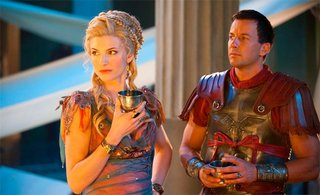
Un final apoteósico
La dinámica de toda la temporada fue más o menos la misma que comentaba justo ahora: Spartacus huyendo y dando esquinazo a Glaber, fastidiándolo todo lo posible; Ilythia embarazada presionando a Glaber para volver a Roma, Lucretia aparentemente loca entregada a los dioses después de sufrir la pérdida de su bebé y su marido a manos de Spartacus, Crixus reencontrándose con el amor… Pero todo cambia en los últimos capítulos.
Parece que va a llegar el final, sí o sí, del pequeño grupo de esclavos rebeldes. Glaber los acorrala en el Vesubio, esperando a que no les quede más remedio que descender en búsqueda desesperada de comida… ¿O no? Pues, como era de esperar, no. No contaban con el ingenio de Spartacus y sus chicos, que les sorprenden en sus puestos y consiguen romper el cerco.
Mientras tanto, en Capua, Ilythia parece decidida a matar a Lucretia por sugerencia de su marido, pero para su sorpresa se tornan los papeles y es Lucretia la que, confesando haber estado interpretando un personaje durante todo este tiempo, lleva a cabo su ansiada venganza y también sella su destino sin dudarlo dos veces.
Criba de personajes
Si algo admiro de los responsables de ‘Spartacus’ es que no tienen miedo a eliminar de la ecuación a los personajes que ya han cumplido su cometido. Ya nos lo demostraron al final de temporada con el asesinato de Quintus, y han vuelto a probarlo ahora en uno de los capítulos con más muertes que recuerdo haber visto nunca (y creedme, llevo vistos unos cuantos).
En el apartado de los esclavos, nos deja Mira (a la que, sinceramente, creo que no voy a echar mucho de menos) después de un accidente fortuito en una lucha con unos romanos, nos deja Ashur después de un mano a mano de infarto con Naevia (de esta lucha me quedaría con Crixus y el sufrimiento que el actor plasmaba magistralmente en su cara viendo a su amada arriesgar su vida) y nos deja Oenomaus en una de las luchas finales (a éste sí que le echaremos de menos).
En el bando de los romanos es Glaber el que ve llegar su fin con la espada de Spartacus atravesándole la boca. En Capua, Lucretia decide “desenvolver el regalo” de una embarazadísima Ilythia (escena chocante donde las haya) para después tirarse al vacío sin miramientos con el bebé en la mano y encontrarse así con su marido en el más allá, mientras Ilythia se desangra en el suelo mirándola fijamente… Tres personajes principales que se han “cargado” sin miramientos de cara a una tercera temporada porque seguramente no tendrían cabida en la nueva historia.
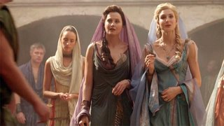
Otros aspectos a destacar
-
Incido en toda la trama de Lucretia. Yo me había creído toda su “locura” y su después afección por Ilythia, para después encontrarme con la realidad: todo es una escenificación a la que ha ayudado una magnífica interpretación de Lucy Lawless.
-
Triángulo Seppia, Glaber e Ilythia. Si bien es verdad que toda la trama con Seppia siempre me pareció estar “de más”, poco a poco se va entendiendo la necesidad del personaje en la relación entre Glaber e Ilythia. Su muerte es probablemente una de las escenas más fuertes e impactantes de la temporada.
-
La consolidación de Crixus. Spartacus se ha lucido esta temporada, sí, pero la importancia que ha cobrado Crixus también merece ser digna de mención. El personaje sigue creciendo capítulo a capítulo y en estos episodios nos ha dejado algunas escenas memorables.
-
Y el buen trabajo de Liam McIntyre. Como decía, al principio a mí al menos se me hizo algo raro el cambio de actor, pero pronto Liam se hizo con el papel. Los discursos del final ya nos muestran a un Spartacus más que creíble e intenso, convencido de lo que él mismo dice. Dada la situación, no es tarea fácil llegar en mitad de una serie a retomar un papel que otro actor ya desempeñaba a la perfección. Hay que reconocer el mérito.
Y lo negativo…
-
No me convence la nueva actriz que da vida a Naevia. Así como Liam McIntyre está perfecto como ‘Spartacus’, Cynthia Addai-Robinson no me encaja para Naevia. Me imagino que tampoco ayuda el gran cambio de registro al que se ve sometido el personaje debido a lo que le toca sufrir, pero sinceramente a mí me parecía en todo momento fuera de lugar.
-
Toda la historia de Ashur con Lucretia tampoco me terminó de cuajar. Vale que Lucretia estaba planeando su propia venganza, pero siempre fue un personaje tremendamente fuerte y verla sometida a Ashur chocaba siempre. También he de decir que el personaje de Ashur siempre me pareció el típico “malo” que cae bien, pero en esta temporada me alegré y mucho del final que le dieron.
-
¿Spartacus y sus cuatro amigos? En algunos momentos, la historia se me antojaba poco creíble en lo que a proporciones entre bandos se refiere. ¿De verdad Spartacus y los pocos personajes de su entorno consiguieron poner en jaque a los ejércitos de Glaber? Aquí, y sobre todo si quieren hacerlo creíble de cara a la próxima temporada, deberían aumentar bastante el número de extras en las filas de Spartacus.
Esperando con ganas la tercera temporada
Pese a lo lento que fue el comienzo y estos aspectos negativos que acabo de comentar, tengo muchísimas ganas de ver cómo será la tercera temporada. Tal y como dice Spartacus, Roma enviará a sus ejércitos, así que ellos también necesitarán un ejército de esclavos para hacerles frente. Este final de temporada ha servido como final perfecto a la historia de Glaber y Lucretia, así que de cara a los nuevos capítulos deberán reinventarse y fijar la nueva trama. Hay ganas, ¿verdad?
En ¡Vaya Tele! | ‘Spartacus: Gods of the Arena’, una precuela que va más allá
Thu, 05 Apr 2012 19:00:00 GMT
'La fuga', un escape frustrado
'La fuga', un escape frustrado
“Me llamo Ana y voy a sacar a mi marido de la torre”. Con estas palabras introducía el personaje de María Valverde un nuevo capítulo de ‘La fuga’ cada semana. Podíamos pensar que se trataba de un mensaje tranquilizador enviado desde el futuro que servía para lanzar un guiño al espectador, o una manera centrar la atención sobre la trama que realmente importaba de todas las que se nos habían presentado. Al final, las palabras de Ana se quedaron en nada, ya que entre todos los destinos que se presentaban ante la pareja protagonista de ‘La fuga’, se eligió el que menos convencería a la audiencia: ése que dejaría a los personajes en el limbo entre conseguir lo que se proponían o no hacerlo. La serie de Telecinco se despidió de la audiencia por debajo de los dos millones de espectadores, con un capítulo final que fue seguido por un millón y medio de personas menos que su capítulo de estreno. Son varias las razones con las que podríamos explicar la pérdida de audiencia que la serie ha venido experimentando, pero no podemos dejar pasar una que a mi juicio es fundamental: la mala programación que una vez más ha realizado Telecinco con uno de sus productos estrella. Telecinco ha jugado preocupantemente con ‘La fuga’ y, puestos a comparar con su principal competidor, la cadena debería aprender de la táctica que Antena 3 ha seguido con ‘Toledo’, ficción que ha tenido el mismo destino que ‘La fuga’ pero cuyos espectadores han podido disfrutar de una serie programada el mismo día y a la misma hora desde su primer capítulo. Independientemente de la calidad que tenga ‘La fuga’, estos movimientos provocan el cansancio del espectador y afecta no solo a la serie actual, sino a las próximas ficciones que Telecinco tenga pendiente de estreno, que ya tendrán en su contra el recelo de la audiencia por no querer seguir una serie que puede ser modificada en la parrilla a la primera de cambio. Por el camino equivocado Una de las apuestas más originales que se nos ha presentado esta temporada en la ficción nacional ha sido la que nos ha ofrecido ‘La fuga’. Es cierto que tenía bastantes puntos en común con otras ficciones extranjeras, pero si la comparamos con lo que las cadenas de televisión han emitido en las últimas temporadas, ‘La fuga’ destacaba por ofrecer una apuesta diferente, algo que siempre se agracede desde el otro lado de la telvisión. El problema de la ficción es que nunca terminó de distanciarse de todos esos clichés que tanto daño siguen haciendo a las series nacionales hoy en día y además tampoco supo aprovechar al máximo las oportunidades que se daban a su alrededor. ‘La fuga’ se empeñó en que las tramas de los presos fueran secundarias y que las historias de muchos de ellos quedaran en el olvido. Sé que caigo en tópicos si menciono que me ha parecido un error no incluir flashbacks, pero algunas historias merecían conocerse, sobre todo para mostrar algo más de la personalidad de los presos y lo que les llevó a entrar en la cárcel. Con el ejemplo de la historia de Número uno, el preso más antiguo de La Torre, observamos cómo se perdía intensidad al no conocer qué pasó entre él y Graus, un hecho que no consiguió explicarse con las conversaciones que ambos mantenían y para el que hubiera sido idóneo trasladar al espectador al pasado. Puede que la razón por la que decidieran no incluir flashbacks fuera el gasto que supondría recurrir a otros escenarios, sobre todo porque ‘La fuga’, pese a tratarse de una ficción de alto presupuesto, ha sufrido las consecuencias de no contar con los fondos económicos necesarios para crear a conciencia esa atmósfera futurista en la que se desarrollaba su historia. Tecnología y vestuario muy actual para una serie que pretendía mostrar una sociedad avanzada y que se ha quedado muy lejos de conseguirlo. Un final decepcionante Una bomba explota bajo una tubería en el fondo del mar. Observamos que hay muertos, fuego y dos supervivientes: la pareja protagonista que no sabemos cómo escaparán de allí. Al margen de lo inverosimil de esta escena (¿en serio nos tenemos que creer que la tubería no se inunda después de que explote una bomba dentro de ella?), de todos los finales posibles para ‘La fuga’, abiertos y cerrados, se optó por emitir uno de los peores, como si estuvieran pensando más en crear polémica en las redes sociales que en dar el final digno que la serie merecía. La fuga que daba nombre a la ficción no fue tan emocionante como podríamos esperar que fuera, sobre todo después de que la esperáramos durante 12 episodios. Ni siquiera centró el episodio final de temporada, que tuvo que compartir protagonismo con otras tramas que surgieron por arte de magia en el último tramo de la serie y que solo han servido para desviar la atención de la historia que supuestamente importaba. También nos quedamos con las ganas de ver a Reverte envuelto en ira, ya que su personaje, siempre mostrando síntomas de locura, parecía que iba a estallar en cualquier momento, algo que al final no ha ocurrido. Han sido los personajes de Reverte y Graus, junto con algún que otro preso secundario, los mejores personajes que nos ha presentado ‘La fuga’, una ficción que también podríamos recordar por unas interpretaciones sobreactuadas que se han repetido en cada capítulo. Podemos elogiar el amplio abanico de rostros con el que contaba su reparto, pero no todos ellos jugaban al mismo nivel y al final algunos actores han aparecido constantemente exagerados. Al parecer, ‘La fuga’ está siendo bien recibida en el extranjero por su originalidad, algo con lo que, repito, muy pocas ficciones de esta temporada puede competir. Pero lo cierto es que la ficción de BocaBoca no ha sabido plasmar ese punto de partida correctamente, y nos ha dejado a medio camino de lo que sí podría ser una auténtica fuga, pero esta vez centrada en la audiencia española, encerrada en una prisión seriéfila llena de clichés y tramas repetitivas hasta la saciedad. Una auténtica pena. Tendremos que seguir esperando a esa serie que realmente nos brinde la oportunidad de escapar de nuestra cárcel. Ganas no nos faltan. En ¡Vaya tele! | ‘Toledo’ y ‘La fuga’, dos ficciones ambiciosas que no tendrán segunda temporada
“Me llamo Ana y voy a sacar a mi marido de la torre”. Con estas palabras introducía el personaje de María Valverde un nuevo capítulo de ‘La fuga’ cada semana. Podíamos pensar que se trataba de un mensaje tranquilizador enviado desde el futuro que servía para lanzar un guiño al espectador, o una manera centrar la atención sobre la trama que realmente importaba de todas las que se nos habían presentado. Al final, las palabras de Ana se quedaron en nada, ya que entre todos los destinos que se presentaban ante la pareja protagonista de ‘La fuga’, se eligió el que menos convencería a la audiencia: ése que dejaría a los personajes en el limbo entre conseguir lo que se proponían o no hacerlo.
La serie de Telecinco se despidió de la audiencia por debajo de los dos millones de espectadores, con un capítulo final que fue seguido por un millón y medio de personas menos que su capítulo de estreno. Son varias las razones con las que podríamos explicar la pérdida de audiencia que la serie ha venido experimentando, pero no podemos dejar pasar una que a mi juicio es fundamental: la mala programación que una vez más ha realizado Telecinco con uno de sus productos estrella.
Telecinco ha jugado preocupantemente con ‘La fuga’ y, puestos a comparar con su principal competidor, la cadena debería aprender de la táctica que Antena 3 ha seguido con ‘Toledo’, ficción que ha tenido el mismo destino que ‘La fuga’ pero cuyos espectadores han podido disfrutar de una serie programada el mismo día y a la misma hora desde su primer capítulo. Independientemente de la calidad que tenga ‘La fuga’, estos movimientos provocan el cansancio del espectador y afecta no solo a la serie actual, sino a las próximas ficciones que Telecinco tenga pendiente de estreno, que ya tendrán en su contra el recelo de la audiencia por no querer seguir una serie que puede ser modificada en la parrilla a la primera de cambio.
Por el camino equivocado
Una de las apuestas más originales que se nos ha presentado esta temporada en la ficción nacional ha sido la que nos ha ofrecido ‘La fuga’. Es cierto que tenía bastantes puntos en común con otras ficciones extranjeras, pero si la comparamos con lo que las cadenas de televisión han emitido en las últimas temporadas, ‘La fuga’ destacaba por ofrecer una apuesta diferente, algo que siempre se agracede desde el otro lado de la telvisión. El problema de la ficción es que nunca terminó de distanciarse de todos esos clichés que tanto daño siguen haciendo a las series nacionales hoy en día y además tampoco supo aprovechar al máximo las oportunidades que se daban a su alrededor.

‘La fuga’ se empeñó en que las tramas de los presos fueran secundarias y que las historias de muchos de ellos quedaran en el olvido. Sé que caigo en tópicos si menciono que me ha parecido un error no incluir flashbacks, pero algunas historias merecían conocerse, sobre todo para mostrar algo más de la personalidad de los presos y lo que les llevó a entrar en la cárcel. Con el ejemplo de la historia de Número uno, el preso más antiguo de La Torre, observamos cómo se perdía intensidad al no conocer qué pasó entre él y Graus, un hecho que no consiguió explicarse con las conversaciones que ambos mantenían y para el que hubiera sido idóneo trasladar al espectador al pasado.
Puede que la razón por la que decidieran no incluir flashbacks fuera el gasto que supondría recurrir a otros escenarios, sobre todo porque ‘La fuga’, pese a tratarse de una ficción de alto presupuesto, ha sufrido las consecuencias de no contar con los fondos económicos necesarios para crear a conciencia esa atmósfera futurista en la que se desarrollaba su historia. Tecnología y vestuario muy actual para una serie que pretendía mostrar una sociedad avanzada y que se ha quedado muy lejos de conseguirlo.
Un final decepcionante
Una bomba explota bajo una tubería en el fondo del mar. Observamos que hay muertos, fuego y dos supervivientes: la pareja protagonista que no sabemos cómo escaparán de allí. Al margen de lo inverosimil de esta escena (¿en serio nos tenemos que creer que la tubería no se inunda después de que explote una bomba dentro de ella?), de todos los finales posibles para ‘La fuga’, abiertos y cerrados, se optó por emitir uno de los peores, como si estuvieran pensando más en crear polémica en las redes sociales que en dar el final digno que la serie merecía.
La fuga que daba nombre a la ficción no fue tan emocionante como podríamos esperar que fuera, sobre todo después de que la esperáramos durante 12 episodios. Ni siquiera centró el episodio final de temporada, que tuvo que compartir protagonismo con otras tramas que surgieron por arte de magia en el último tramo de la serie y que solo han servido para desviar la atención de la historia que supuestamente importaba. También nos quedamos con las ganas de ver a Reverte envuelto en ira, ya que su personaje, siempre mostrando síntomas de locura, parecía que iba a estallar en cualquier momento, algo que al final no ha ocurrido.
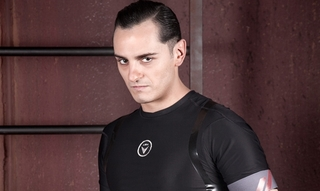
Han sido los personajes de Reverte y Graus, junto con algún que otro preso secundario, los mejores personajes que nos ha presentado ‘La fuga’, una ficción que también podríamos recordar por unas interpretaciones sobreactuadas que se han repetido en cada capítulo. Podemos elogiar el amplio abanico de rostros con el que contaba su reparto, pero no todos ellos jugaban al mismo nivel y al final algunos actores han aparecido constantemente exagerados.
Al parecer, ‘La fuga’ está siendo bien recibida en el extranjero por su originalidad, algo con lo que, repito, muy pocas ficciones de esta temporada puede competir. Pero lo cierto es que la ficción de BocaBoca no ha sabido plasmar ese punto de partida correctamente, y nos ha dejado a medio camino de lo que sí podría ser una auténtica fuga, pero esta vez centrada en la audiencia española, encerrada en una prisión seriéfila llena de clichés y tramas repetitivas hasta la saciedad. Una auténtica pena. Tendremos que seguir esperando a esa serie que realmente nos brinde la oportunidad de escapar de nuestra cárcel. Ganas no nos faltan.
En ¡Vaya tele! | ‘Toledo’ y ‘La fuga’, dos ficciones ambiciosas que no tendrán segunda temporada
Thu, 05 Apr 2012 15:02:31 GMT
El fenómeno #apoyoaotramovida, ¿de verdad está 'Otra movida' en peligro?
El fenómeno #apoyoaotramovida, ¿de verdad está 'Otra movida' en peligro?
Sorpresa en ¡Vaya tele! Entre nazarenos, torrijas y nubarrones encontramos en Twitter un hashtag de apoyo a ‘Otra movida’, el programa presentado por Florentino Fernández, Dani Martínez y Anna Simón. Los usuarios de Twitter están utilizando la etiqueta para mostrar su apoyo al programa, aunque no se haya publicado ninguna noticia que haga pensar que ‘Otra movida’ tenga algo que temer. Nuestra sorpresa ha sido mayúscula cuando hemos descubierto el origen del hashtag, un comentario publicado en nuestra sección ¡Vaya tele! Respuestas hace seis meses, que analizaba las audiencias lograda por el programa durante las primeras semanas en las que ‘Otra movida’ había estado en emisión. Ni que decir tiene que el tiempo que ha pasado desde la publicación de ese comentario hace desaparecer el peligro de cancelación que se mencionaba, lo que ha hecho saltar las alarmas de los twitteros seis meses después de su publicación (la lógica de Twitter a veces es así). Así, los seguidores pueden estar tranquilos. Aunque a un programa de televisión nunca le viene mal un poco de apoyo extra, ‘Otra movida‘ continúa su andadura por esta temporada televisiva mostrándose como uno de los programas que mejor ha sabido evolucionar desde su estreno, limando las capacidades que pueden ofrecer sus colaboradores y manteniendo constante la misma premisa de siempre: pasar un buen rato haciendo un programa de televisión. Lo mejor de ‘Otra movida’ es que ha sabido presentarse como la alternativa sólida para el público adolescente, después de que se disputara el trono con ‘No le digas a máma que trabajo en la tele’. El tiempo demostró que no había suficiente público para los dos y ‘Otra movida’ se estableció como el programa victorioso del duelo, gracias a su buenhacer y a la experiencia acumulada en ‘Tonterías las justas’. Por ahora los datos de audiencia, en torno al 3% de share, parecen convencer a la casa, que es consciente de que ‘Otra movida’ es un producto necesario para una cadena como Neox. Ocho meses después de su estreno, en ‘Otra movida’ seguimos encontrando a unos presentadores muy cómodos a la hora de conducir el programa, dispuestos a hacernos pasar el mejor rato posible utilizando las armas que ya todos conocemos. Florentino Fernández y Dani Martínez mantienen el nivel que ya han demostrado en anteriores ocasiones y Anna Simón ha sabido reivindicar su papel,a base de reirse de sí misma (que es lo más sano que hay) para quedar a la altura de sus compañeros. Entre los colaboradores, también hay que destacar el papel de Cristina Pedroche y Raúl Gómez. La reportera sigue mejorando con el tiempo sacando lo mejor de algunos famosos cuando tiene que salir a la calle, pero también está dispuesta a divertirse cuando le toca participar en algunas de las secciones del programa y eso al final el espectador lo acaba agradeciendo. En cuanto a Raúl Gómez, todos sabrán que ha sido un fichaje más que oportuno, que también le ha tocado evolucionar, y que ha terminando dándolo todo para provocarnos algunas risas con sus particulares bromas en la calle. Quedan cosas por mejorar, sobre todo en cuanto a nuevas secciones e incorporaciones, que no terminan de tener el ritmo que se podría esperar, pero el equipo de ‘Otra movida’ ya ha sabido demostrar que son capaces de adaptar cualquier sección y colaborador a su estilo, algo que también tenemos que agradecer. Siendo uno de los programas más sólidos con los que cuenta Neox en la actualidad y observando que las audiencias no son tan malas como algunos las pinta, la respuesta es no, ‘Otra movida’ no está en peligro. Sus seguidores pueden respirar tranquilos y seguir disfrutando del programa como hasta ahora lo han hecho. En ¡Vaya tele! | Quince años de Florentino Fernández en televisión, cinco programas que consagraron al maestro del humor
Sorpresa en ¡Vaya tele! Entre nazarenos, torrijas y nubarrones encontramos en Twitter un hashtag de apoyo a ‘Otra movida’, el programa presentado por Florentino Fernández, Dani Martínez y Anna Simón. Los usuarios de Twitter están utilizando la etiqueta para mostrar su apoyo al programa, aunque no se haya publicado ninguna noticia que haga pensar que ‘Otra movida’ tenga algo que temer. Nuestra sorpresa ha sido mayúscula cuando hemos descubierto el origen del hashtag, un comentario publicado en nuestra sección ¡Vaya tele! Respuestas hace seis meses, que analizaba las audiencias lograda por el programa durante las primeras semanas en las que ‘Otra movida’ había estado en emisión.
Ni que decir tiene que el tiempo que ha pasado desde la publicación de ese comentario hace desaparecer el peligro de cancelación que se mencionaba, lo que ha hecho saltar las alarmas de los twitteros seis meses después de su publicación (la lógica de Twitter a veces es así). Así, los seguidores pueden estar tranquilos. Aunque a un programa de televisión nunca le viene mal un poco de apoyo extra, ‘Otra movida‘ continúa su andadura por esta temporada televisiva mostrándose como uno de los programas que mejor ha sabido evolucionar desde su estreno, limando las capacidades que pueden ofrecer sus colaboradores y manteniendo constante la misma premisa de siempre: pasar un buen rato haciendo un programa de televisión.
Lo mejor de ‘Otra movida’ es que ha sabido presentarse como la alternativa sólida para el público adolescente, después de que se disputara el trono con ‘No le digas a máma que trabajo en la tele’. El tiempo demostró que no había suficiente público para los dos y ‘Otra movida’ se estableció como el programa victorioso del duelo, gracias a su buenhacer y a la experiencia acumulada en ‘Tonterías las justas’. Por ahora los datos de audiencia, en torno al 3% de share, parecen convencer a la casa, que es consciente de que ‘Otra movida’ es un producto necesario para una cadena como Neox.
Ocho meses después de su estreno, en ‘Otra movida’ seguimos encontrando a unos presentadores muy cómodos a la hora de conducir el programa, dispuestos a hacernos pasar el mejor rato posible utilizando las armas que ya todos conocemos. Florentino Fernández y Dani Martínez mantienen el nivel que ya han demostrado en anteriores ocasiones y Anna Simón ha sabido reivindicar su papel,a base de reirse de sí misma (que es lo más sano que hay) para quedar a la altura de sus compañeros.
Entre los colaboradores, también hay que destacar el papel de Cristina Pedroche y Raúl Gómez. La reportera sigue mejorando con el tiempo sacando lo mejor de algunos famosos cuando tiene que salir a la calle, pero también está dispuesta a divertirse cuando le toca participar en algunas de las secciones del programa y eso al final el espectador lo acaba agradeciendo. En cuanto a Raúl Gómez, todos sabrán que ha sido un fichaje más que oportuno, que también le ha tocado evolucionar, y que ha terminando dándolo todo para provocarnos algunas risas con sus particulares bromas en la calle.
Quedan cosas por mejorar, sobre todo en cuanto a nuevas secciones e incorporaciones, que no terminan de tener el ritmo que se podría esperar, pero el equipo de ‘Otra movida’ ya ha sabido demostrar que son capaces de adaptar cualquier sección y colaborador a su estilo, algo que también tenemos que agradecer. Siendo uno de los programas más sólidos con los que cuenta Neox en la actualidad y observando que las audiencias no son tan malas como algunos las pinta, la respuesta es no, ‘Otra movida’ no está en peligro. Sus seguidores pueden respirar tranquilos y seguir disfrutando del programa como hasta ahora lo han hecho.
En ¡Vaya tele! | Quince años de Florentino Fernández en televisión, cinco programas que consagraron al maestro del humor
Thu, 05 Apr 2012 09:14:21 GMT
El centenario del hundimiento del Titanic inunda la parrilla
El centenario del hundimiento del Titanic inunda la parrilla
Este domingo, día 15, se conmemoran 100 años del hundimiento del RMS Titanic. Una gran tragedia, una gran historia y un mito que ha interesado al mundo y ha valido para crear innumerables historias y leyendas urbanas. Y cómo no, aprovechando esta fecha conmemorativa, las cadenas de televisión nos traen de vuelta a la actualidad aquello con diferentes propuestas. La más llamativa es la de Antena 3, cadena que emitirá la miniserie británica: ‘Titanic: Sangre y Acero’. Se trata de un producto de ITV desarrollado por Julian Fellowes, creador de ‘Downton Abbey’, pero que no viene respaldado por el mismo éxito que su otra ficción. ‘Titanic: Sangre y acero’ se estrenó en Reino Unido el 15 de marzo convocando a 7,36 millones de espectadores, muy buena cifra allí, pero su segunda emisión cayó hasta los 4,66 millones. Las críticas tampoco están siendo especialmente buenas, y tal vez el hecho de que Antena 3 decida emitir el domingo los cuatro episodios del tirón es una prueba de que su calidad no debe ser muy alta. Se suman a la conmemoración Cuatro, que ofrecerá un especial en ‘Cuarto Mileno’ abordando los enigmas y las leyendas urbanas en torno al hundimiento, y Discovery MAX con la emisión del especial ’100 Años del Titanic’ que incluye los documentales ‘Secretos del Titanic con James Cameron’ y ‘Conspiraciones: ¿Por qué se hundió el Titanic?’. Y no sería de extrañar que más versiones de la historia, ya sea vía reportajes o vía ficción se saquen de los cajones estos días. Si no me equivoco los derechos sobre la cinta de James Cameron los debe tener laSexta, quien la emitió por última vez en octubre de 2011, así que tal vez la desempolven en el primer canal o en laSexta3. Y que repongan también aquella maravillosa miniserie de CBS que protagonizaba Catherine Zeta Jones. En ¡Vaya Tele! | Primer tráiler de ‘Titanic’, el nuevo drama de época del creador de ‘Downton Abbey’
Este domingo, día 15, se conmemoran 100 años del hundimiento del RMS Titanic. Una gran tragedia, una gran historia y un mito que ha interesado al mundo y ha valido para crear innumerables historias y leyendas urbanas. Y cómo no, aprovechando esta fecha conmemorativa, las cadenas de televisión nos traen de vuelta a la actualidad aquello con diferentes propuestas.
La más llamativa es la de Antena 3, cadena que emitirá la miniserie británica: ‘Titanic: Sangre y Acero’. Se trata de un producto de ITV desarrollado por Julian Fellowes, creador de ‘Downton Abbey’, pero que no viene respaldado por el mismo éxito que su otra ficción. ‘Titanic: Sangre y acero’ se estrenó en Reino Unido el 15 de marzo convocando a 7,36 millones de espectadores, muy buena cifra allí, pero su segunda emisión cayó hasta los 4,66 millones. Las críticas tampoco están siendo especialmente buenas, y tal vez el hecho de que Antena 3 decida emitir el domingo los cuatro episodios del tirón es una prueba de que su calidad no debe ser muy alta.
Se suman a la conmemoración Cuatro, que ofrecerá un especial en ‘Cuarto Mileno’ abordando los enigmas y las leyendas urbanas en torno al hundimiento, y Discovery MAX con la emisión del especial ’100 Años del Titanic’ que incluye los documentales ‘Secretos del Titanic con James Cameron’ y ‘Conspiraciones: ¿Por qué se hundió el Titanic?’. Y no sería de extrañar que más versiones de la historia, ya sea vía reportajes o vía ficción se saquen de los cajones estos días. Si no me equivoco los derechos sobre la cinta de James Cameron los debe tener laSexta, quien la emitió por última vez en octubre de 2011, así que tal vez la desempolven en el primer canal o en laSexta3. Y que repongan también aquella maravillosa miniserie de CBS que protagonizaba Catherine Zeta Jones.
En ¡Vaya Tele! | Primer tráiler de ‘Titanic’, el nuevo drama de época del creador de ‘Downton Abbey’
Wed, 04 Apr 2012 07:30:00 GMT
Starz enseña un vistazo a la segunda temporada de 'Boss'
Starz enseña un vistazo a la segunda temporada de 'Boss'
Para muchos espectadores, una de las series más destacadas del año pasado fue ‘Boss‘, por la que Kelsey Grammer ganó el Globo de Oro a mejor actor dramático y por la que no sería nada extraño que recibiera también una nominación al Emmy. ‘Boss’ tuvo cierta repercusión entre los críticos, que fueron acogiéndola mejor conforme pasaban los ocho episodios de su primera entrega, pero la respuesta entre la audiencia fue bastante mínima (probablemente, el viernes por la noche no fuera el horario más adecuado). Sin embargo, eso no fue problema para la serie porque Starz la renovó directamente para una segunda temporada antes siquiera de que se estrenara, en una muestra de confianza que esperan que fructifique en los nuevos episodios. Éstos se verán en agosto y, por lo visto en los pocos segundos que dura el teaser, parece que el alcalde de Chicago, Tom Kane, aún va a ser más despiadado que de costumbre porque, al fin y al cabo, no tiene nada que perder. Por las informaciones que se conocen sobre estos nuevos episodios, la serie va a incorporar tres nuevos personajes (uno de ellos interpretado por Jonathan Groff, al que igual recordais de su paso por ‘Glee‘), todos relacionados con la política y, al parecer, en un caso también con conexiones con las bandas criminales de la ciudad. ‘Boss’ es un intento de Starz de entrar en la pelea por los premios al lado de las cadenas que suelen dominar en ellos, como HBO o AMC. Tener de protagonista a un gran Kelsey Grammer les ha ayudado a dar los primeros pasos en esa arena, y ahora tienen que consolidarse. La cadena, cuyo presidente, Chris Albrecht, estuvo antes en HBO, está buscando esa serie que les permita ganarse una posición de prestigio y situarse codo con codo con el resto de canales por cable que tienen ficción de producción propia. Tras ‘Boss’, su siguiente intento es ‘Magic City‘, que también han renovado por una segunda temporada antes de que se estrenara. Vía | Series de TV En ¡Vaya Tele! | Starz renueva ‘Boss’ semanas antes de que se estrene
Para muchos espectadores, una de las series más destacadas del año pasado fue ‘Boss‘, por la que Kelsey Grammer ganó el Globo de Oro a mejor actor dramático y por la que no sería nada extraño que recibiera también una nominación al Emmy. ‘Boss’ tuvo cierta repercusión entre los críticos, que fueron acogiéndola mejor conforme pasaban los ocho episodios de su primera entrega, pero la respuesta entre la audiencia fue bastante mínima (probablemente, el viernes por la noche no fuera el horario más adecuado). Sin embargo, eso no fue problema para la serie porque Starz la renovó directamente para una segunda temporada antes siquiera de que se estrenara, en una muestra de confianza que esperan que fructifique en los nuevos episodios.
Éstos se verán en agosto y, por lo visto en los pocos segundos que dura el teaser, parece que el alcalde de Chicago, Tom Kane, aún va a ser más despiadado que de costumbre porque, al fin y al cabo, no tiene nada que perder. Por las informaciones que se conocen sobre estos nuevos episodios, la serie va a incorporar tres nuevos personajes (uno de ellos interpretado por Jonathan Groff, al que igual recordais de su paso por ‘Glee‘), todos relacionados con la política y, al parecer, en un caso también con conexiones con las bandas criminales de la ciudad.
‘Boss’ es un intento de Starz de entrar en la pelea por los premios al lado de las cadenas que suelen dominar en ellos, como HBO o AMC. Tener de protagonista a un gran Kelsey Grammer les ha ayudado a dar los primeros pasos en esa arena, y ahora tienen que consolidarse. La cadena, cuyo presidente, Chris Albrecht, estuvo antes en HBO, está buscando esa serie que les permita ganarse una posición de prestigio y situarse codo con codo con el resto de canales por cable que tienen ficción de producción propia. Tras ‘Boss’, su siguiente intento es ‘Magic City‘, que también han renovado por una segunda temporada antes de que se estrenara.
Vía | Series de TV
En ¡Vaya Tele! | Starz renueva ‘Boss’ semanas antes de que se estrene
Tue, 03 Apr 2012 19:22:17 GMT
Antena 3 estrenará 'Luna, el misterio de Calenda' el próximo martes
Antena 3 estrenará 'Luna, el misterio de Calenda' el próximo martes
Tras la despedida de ‘Toledo’, Antena 3 no dejará descansar su prime time del martes ni una sola semana. La cadena acaba de anunciar que su próxima serie, ‘Luna, el misterio de Calenda’, se estrenará el próximo martes 10 de abril, manteniendo la fuerte apuesta de ficción que hasta el momento mantiene en la parilla (con tres series de producción nacional en su programación semanal). Después de probar fortuna con la ficción histórica, y no obtener los resultados esperados, Antena 3 se vuelve a aliar con Globomedia en torno a una nueva serie de misterio que, a simple vista, recuerda en ocasiones a ‘El internado’. La ficción contará con Belén Rueda como protagonista absoluta y con el tiempo veremos si la productora ha sabido corregir los errores del pasado (los que ya vimos en ‘El internado’ y los que salen a relucir constantemente en ‘El barco’) a la hora de enfrentarse a este tipo de ficciones. ‘Luna, el misterio de Calenda‘ se convierte en la gran apuesta seriéfila de Antena 3 para el último trimestre de la temporada televisiva, pero solo será uno de los estrenos que Antena 3 tiene preparados para próximas semanas. Entre estas nuevas propuestas se encuentra los nuevos programas de Sardá, ‘Usted perdone’, y de Buenafuente, que al parecer se llamará ‘Buenas noches y Buenafuente’. Todos estos espacios completarán la oferta que actualmente ofrece Antena 3, que sigue combatiendo a conciencia para ganarse el visto bueno de la audiencia. En ¡Vaya tele! | ‘Luna, el misterio de Calenda’: lo que necesitas saber
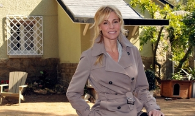
Tras la despedida de ‘Toledo’, Antena 3 no dejará descansar su prime time del martes ni una sola semana. La cadena acaba de anunciar que su próxima serie, ‘Luna, el misterio de Calenda’, se estrenará el próximo martes 10 de abril, manteniendo la fuerte apuesta de ficción que hasta el momento mantiene en la parilla (con tres series de producción nacional en su programación semanal).
Después de probar fortuna con la ficción histórica, y no obtener los resultados esperados, Antena 3 se vuelve a aliar con Globomedia en torno a una nueva serie de misterio que, a simple vista, recuerda en ocasiones a ‘El internado’. La ficción contará con Belén Rueda como protagonista absoluta y con el tiempo veremos si la productora ha sabido corregir los errores del pasado (los que ya vimos en ‘El internado’ y los que salen a relucir constantemente en ‘El barco’) a la hora de enfrentarse a este tipo de ficciones.
‘Luna, el misterio de Calenda‘ se convierte en la gran apuesta seriéfila de Antena 3 para el último trimestre de la temporada televisiva, pero solo será uno de los estrenos que Antena 3 tiene preparados para próximas semanas. Entre estas nuevas propuestas se encuentra los nuevos programas de Sardá, ‘Usted perdone’, y de Buenafuente, que al parecer se llamará ‘Buenas noches y Buenafuente’. Todos estos espacios completarán la oferta que actualmente ofrece Antena 3, que sigue combatiendo a conciencia para ganarse el visto bueno de la audiencia.
En ¡Vaya tele! | ‘Luna, el misterio de Calenda’: lo que necesitas saber
Tue, 03 Apr 2012 07:00:23 GMT
"La medición de audiencias tendrá nuevas métricas y las conversaciones en redes sociales"
"La medición de audiencias tendrá nuevas métricas y las conversaciones en redes sociales"
El audímetro ha sido uno de las herramientas de medición más criticadas desde su invención pero los que conocen cómo funciona (casi) siempre han defendido el sistema. Sin embargo, en el momento en el que nos encontramos hay muchos más factores a tener en cuenta que los que teníamos hasta hace bien poco: internet, las redes sociales… A mí me gusta llamarlo `audiencia social´ y seguir redundando en esto tan interesante de la televisión social (o Social TV). Hablo con Fran Gallego, analista de contenidos en GECA, una de las voces a mi entender más autorizadas para que nos explique el fenómeno. ¿Por qué? Porque tiene el Know-How los de habituales en esto y la inquietud de los transgresores. Para comenzar considero importante explicar el modelo de medición de audiencias actual, ¿cómo funciona un audímetro? Sobre el sistema de medición de audiencias existen muchos mitos. El sistema es realizado, en España, por la empresa Kantar Media, cuyo trabajo es objeto de auditoría técnica permanente por la AIMC (Asociación para la Investigación de los Medios de Comunicación). En nuestro país, existe una muestra de 4.650 hogares. A los televisores de estas viviendas, se “engancha” un audímetro –activo– de la misma manera que podría hacerse con un reproductor de DVD, de Blu-ray o cualquier consola en la que pienses. Es necesario, además, instalar parte del dispositivo dentro del televisor. La opinión de cada uno de los miembros de esas familias importa: un mando controla quién –y cuántos— están viendo la televisión en un momento determinado. Cada uno de los miembros de la familia tiene asignado un botón para su identificación. Por su puesto, también qué se está viendo. El audímetro consigue saber qué se está viendo segundo a segundo en esa y en las otras pantallas de televisión del hogar. Si no se cambia de canal, el aparato pide cierto feedback para saber que el consumo de televisión no es pasivo y que realmente hay alguien enfrente de la pantalla. El sistema, a todas luces, no es perfecto; pero la mayor parte de la gente no conoce el verdadero trabajo que hay detrás de la medición de audiencias televisivas y la rigurosidad con la que las decisiones sobre el asunto se suelen tomar. Me consta que la incorporación de novedades tecnológicas es constante. Cuando han existido manipulaciones, ambas empresas han intentado solucionarlo de la forma más rápida y precisa posible. Otra cosa es hablar de que existan nuevos caminos a explorar y que seguro se explorarán. Como digo, el sistema necesita una nueva vuelta de tuerca, pues los cambios que se están produciendo —tecnológicos, pero también sociales y televisivos— ya lo permiten. Este sistema de obtención de datos de los audímetros siempre ha sido duramente criticado por diferentes sectores y ahora llegan Internet, las redes sociales y las nuevas ventanas de explotación para complicar la medición de audiencias aún más, ¿cómo se contemplan actualmente todos los espectadores generados a través de todas esas nuevas plataformas? Creo que el principal error es pensar en él como algo completamente exacto, consecuencia de un acto individual de consumo de televisión de forma concreta. Simplemente analiza, mediante técnicas de sondeo, el comportamiento del público y de sus diferentes categorías socio-demográficas a partir de la observación de una muestra representativa del universo total. Cuando he intentado explicarlo hasta ahora, siempre he dicho que, más que una medición exacta de la audiencia, se trata de un índice que sirve a los agentes televisivos para tomar posiciones –y decisiones. La televisión siempre ha sido y seguirá siendo social. Medir ese componente es muy importante para cadenas y anunciantes, y lo seguirá siendo el futuro. Ahora se debe avanzar en el análisis cualitativo del consumo individual que de la televisión se hace. De forma muy obvia, las redes sociales y todo lo que conllevan —y conllevarán— suponen un gran paso hacia delante. Twitter, por poner un ejemplo, supone un electrocardiograma de los programas televisivos y todo aquel que se dedique a la medición de audiencias televisas debe o debería saberlo. Soy optimista, porque Twitter y la televisión están condenados a entenderse. Esto es así porque, acompañando a la mercantilización creciente de los programas de televisión, esta “condena” responde casi exclusivamente a la necesidad imperiosa del mercado y de las televisiones de cuantificar resultados y establecer, en consecuencia, mecanismos más o menos estables de fijación de precios. Siempre añado como coletilla que la red social del pajarito es la punta del iceberg. El artículo ‘The Relationship Between Social Media Buzz and TV Ratings’ del blog de Nielsen concluía que por cada incremento del 9 por cien en el volumen de los mensajes en las redes sociales antes del estreno de un programa se consigue un 1 por cien más de audiencia en el mismo. ¿Cuáles son los sistemas más avanzados que conoces y que integran dicha medición de, llamésmola, “audiencia social”? A día de hoy, se está trabajando en la medición de audiencias de una manera integrada, pero todo se complica si se tiene en cuenta que estos sistemas son naturalmente monopolistas. Con las métricas de Internet y el móvil, a través de la Analítica Web, se puede ser más preciso a la hora de medir y eso ayudará a la toma de decisiones de cadenas y productoras sobre programas, presentadores/as y actores/actrices. Se tiene que partir de la base de que estamos en una economía, la de la atención, en la que la que va a ser muy importante esa “conversación” que viene de las redes sociales. Sin olvidar la medición de audiencias tradicional. Hace pocos días Disney-ABC y Nielsen anunciaron un acuerdo para, juntos, intentar liderar estrategias en el mercado americano. Además, otras empresas como Red Bee Media intentan ofrecer nuevas soluciones, aunque yo por el momento no las veo de forma clara. El caso de Pirendo, aunque no se encuentra aplicado al mundo televisivo, también es digno de mención: utilizan métricas avanzadas para monitorizar lo que se mueve en Twitter y Facebook. Dos buenos ejemplos los han ofrecido con el asunto de las elecciones andaluzas o el de la huelga del 29 de marzo. Aplicado al mundo de la televisión, el recorrido podría ser asombroso. De forma resumida, señalaría que no existe nada que sea concluyente y con todo el ruido que se está generando hay que tener cuidado porque podría inducir a error al sector televisivo por entero. Igual que digo esto, me decanto por un sistema —o sistemas— que aporte una visión holística y transmediática del asunto sin ningún tipo de dudas. Si tuviera que apostar, diría que la analítica Web será muy importante en el terreno de la nueva medición de audiencias. Desde GECA estamos trabajando, desde el respeto y con la experiencia clave que se tiene en el sistema televisivo español, con estas ideas y estamos seguro de que algo puede salir de ahí. Más si cabe teniendo en cuenta cómo se está configurando el sector televisivo. ¿Por qué está siendo tan lento a ojos del espectador el avance en la obtención de una métrica adecuada? Cuando hablamos de rapidez o lentitud hay que tener muy claro que la propia medición de audiencia siempre va a ir por detrás de los programas de televisión. Los ojos del espectador no lo ven todo. Los cambios que se están produciendo van a una velocidad de vértigo. Casi añadiría que lo inaudito es que existan personas que, poco a poco, van avanzando. Y hay personas, en el extranjero pero también en España, que están detrás de ello. No me cabe duda de que se conseguirá. En lo referido a esa “lentitud”, te diría que un factor importante es que existe una brecha digital enorme en los principales gestores televisivos del país, aunque con excepciones. Y aquí sí que soy pesimista, pues temo que a muchos de ellos el tsunami les borrará del mapa. Esta brecha, en mi opinión, tiene mucho más que ver con la actitud que con la fecha de nacimiento, aunque de forma clara esta última también influya. ¿Qué parámetros serían los, a priori, más adecuados e imposibles de olvidar en una nueva medición? La medición de audiencias tradicional, aunque muy mejorada por la tecnología, seguirá siendo importante y central. A ello se añadirán nuevas métricas muy relacionadas con el tráfico Web que los contenidos de los canales generan y a esas “conversaciones” de las redes sociales. Insisto en que la nueva medición de audiencias, más allá del número de ‘Me gusta’ y followers de las redes sociales, estará muy determinada por una visión holística y por el uso de la analítica Web. Quizá todo se pueda medir con una única herramienta, pero lo dudo. Apostaría por la importancia de los análisis cualitativos, de los informes explicativos y de la combinación de soportes de análisis frente al inconmensurable número de cifras sin sentido y sin organización. En ¡Vaya Tele! | “En las webseries se puede ser mucho más atrevido en el guión y el tratamiento“ En ¡Vaya Tele! | Desde mi sofá

El audímetro ha sido uno de las herramientas de medición más criticadas desde su invención pero los que conocen cómo funciona (casi) siempre han defendido el sistema. Sin embargo, en el momento en el que nos encontramos hay muchos más factores a tener en cuenta que los que teníamos hasta hace bien poco: internet, las redes sociales…
A mí me gusta llamarlo `audiencia social´ y seguir redundando en esto tan interesante de la televisión social (o Social TV). Hablo con Fran Gallego, analista de contenidos en GECA, una de las voces a mi entender más autorizadas para que nos explique el fenómeno. ¿Por qué? Porque tiene el Know-How los de habituales en esto y la inquietud de los transgresores.
Para comenzar considero importante explicar el modelo de medición de audiencias actual, ¿cómo funciona un audímetro?
Sobre el sistema de medición de audiencias existen muchos mitos. El sistema es realizado, en España, por la empresa Kantar Media, cuyo trabajo es objeto de auditoría técnica permanente por la AIMC (Asociación para la Investigación de los Medios de Comunicación).
En nuestro país, existe una muestra de 4.650 hogares. A los televisores de estas viviendas, se “engancha” un audímetro –activo– de la misma manera que podría hacerse con un reproductor de DVD, de Blu-ray o cualquier consola en la que pienses. Es necesario, además, instalar parte del dispositivo dentro del televisor.
La opinión de cada uno de los miembros de esas familias importa: un mando controla quién –y cuántos— están viendo la televisión en un momento determinado. Cada uno de los miembros de la familia tiene asignado un botón para su identificación. Por su puesto, también qué se está viendo. El audímetro consigue saber qué se está viendo segundo a segundo en esa y en las otras pantallas de televisión del hogar. Si no se cambia de canal, el aparato pide cierto feedback para saber que el consumo de televisión no es pasivo y que realmente hay alguien enfrente de la pantalla.
El sistema, a todas luces, no es perfecto; pero la mayor parte de la gente no conoce el verdadero trabajo que hay detrás de la medición de audiencias televisivas y la rigurosidad con la que las decisiones sobre el asunto se suelen tomar. Me consta que la incorporación de novedades tecnológicas es constante. Cuando han existido manipulaciones, ambas empresas han intentado solucionarlo de la forma más rápida y precisa posible.
Otra cosa es hablar de que existan nuevos caminos a explorar y que seguro se explorarán. Como digo, el sistema necesita una nueva vuelta de tuerca, pues los cambios que se están produciendo —tecnológicos, pero también sociales y televisivos— ya lo permiten.
Este sistema de obtención de datos de los audímetros siempre ha sido duramente criticado por diferentes sectores y ahora llegan Internet, las redes sociales y las nuevas ventanas de explotación para complicar la medición de audiencias aún más, ¿cómo se contemplan actualmente todos los espectadores generados a través de todas esas nuevas plataformas?
Creo que el principal error es pensar en él como algo completamente exacto, consecuencia de un acto individual de consumo de televisión de forma concreta. Simplemente analiza, mediante técnicas de sondeo, el comportamiento del público y de sus diferentes categorías socio-demográficas a partir de la observación de una muestra representativa del universo total. Cuando he intentado explicarlo hasta ahora, siempre he dicho que, más que una medición exacta de la audiencia, se trata de un índice que sirve a los agentes televisivos para tomar posiciones –y decisiones.
La televisión siempre ha sido y seguirá siendo social. Medir ese componente es muy importante para cadenas y anunciantes, y lo seguirá siendo el futuro. Ahora se debe avanzar en el análisis cualitativo del consumo individual que de la televisión se hace.
De forma muy obvia, las redes sociales y todo lo que conllevan —y conllevarán— suponen un gran paso hacia delante. Twitter, por poner un ejemplo, supone un electrocardiograma de los programas televisivos y todo aquel que se dedique a la medición de audiencias televisas debe o debería saberlo.
Soy optimista, porque Twitter y la televisión están condenados a entenderse. Esto es así porque, acompañando a la mercantilización creciente de los programas de televisión, esta “condena” responde casi exclusivamente a la necesidad imperiosa del mercado y de las televisiones de cuantificar resultados y establecer, en consecuencia, mecanismos más o menos estables de fijación de precios. Siempre añado como coletilla que la red social del pajarito es la punta del iceberg.
El artículo ‘The Relationship Between Social Media Buzz and TV Ratings’ del blog de Nielsen concluía que por cada incremento del 9 por cien en el volumen de los mensajes en las redes sociales antes del estreno de un programa se consigue un 1 por cien más de audiencia en el mismo. ¿Cuáles son los sistemas más avanzados que conoces y que integran dicha medición de, llamésmola, “audiencia social”?
A día de hoy, se está trabajando en la medición de audiencias de una manera integrada, pero todo se complica si se tiene en cuenta que estos sistemas son naturalmente monopolistas. Con las métricas de Internet y el móvil, a través de la Analítica Web, se puede ser más preciso a la hora de medir y eso ayudará a la toma de decisiones de cadenas y productoras sobre programas, presentadores/as y actores/actrices. Se tiene que partir de la base de que estamos en una economía, la de la atención, en la que la que va a ser muy importante esa “conversación” que viene de las redes sociales. Sin olvidar la medición de audiencias tradicional.
Hace pocos días Disney-ABC y Nielsen anunciaron un acuerdo para, juntos, intentar liderar estrategias en el mercado americano. Además, otras empresas como Red Bee Media intentan ofrecer nuevas soluciones, aunque yo por el momento no las veo de forma clara.
El caso de Pirendo, aunque no se encuentra aplicado al mundo televisivo, también es digno de mención: utilizan métricas avanzadas para monitorizar lo que se mueve en Twitter y Facebook. Dos buenos ejemplos los han ofrecido con el asunto de las elecciones andaluzas o el de la huelga del 29 de marzo. Aplicado al mundo de la televisión, el recorrido podría ser asombroso.
De forma resumida, señalaría que no existe nada que sea concluyente y con todo el ruido que se está generando hay que tener cuidado porque podría inducir a error al sector televisivo por entero. Igual que digo esto, me decanto por un sistema —o sistemas— que aporte una visión holística y transmediática del asunto sin ningún tipo de dudas. Si tuviera que apostar, diría que la analítica Web será muy importante en el terreno de la nueva medición de audiencias.
Desde GECA estamos trabajando, desde el respeto y con la experiencia clave que se tiene en el sistema televisivo español, con estas ideas y estamos seguro de que algo puede salir de ahí. Más si cabe teniendo en cuenta cómo se está configurando el sector televisivo.
¿Por qué está siendo tan lento a ojos del espectador el avance en la obtención de una métrica adecuada?
Cuando hablamos de rapidez o lentitud hay que tener muy claro que la propia medición de audiencia siempre va a ir por detrás de los programas de televisión. Los ojos del espectador no lo ven todo. Los cambios que se están produciendo van a una velocidad de vértigo. Casi añadiría que lo inaudito es que existan personas que, poco a poco, van avanzando. Y hay personas, en el extranjero pero también en España, que están detrás de ello. No me cabe duda de que se conseguirá.
En lo referido a esa “lentitud”, te diría que un factor importante es que existe una brecha digital enorme en los principales gestores televisivos del país, aunque con excepciones. Y aquí sí que soy pesimista, pues temo que a muchos de ellos el tsunami les borrará del mapa. Esta brecha, en mi opinión, tiene mucho más que ver con la actitud que con la fecha de nacimiento, aunque de forma clara esta última también influya.
¿Qué parámetros serían los, a priori, más adecuados e imposibles de olvidar en una nueva medición?
La medición de audiencias tradicional, aunque muy mejorada por la tecnología, seguirá siendo importante y central. A ello se añadirán nuevas métricas muy relacionadas con el tráfico Web que los contenidos de los canales generan y a esas “conversaciones” de las redes sociales.
Insisto en que la nueva medición de audiencias, más allá del número de ‘Me gusta’ y followers de las redes sociales, estará muy determinada por una visión holística y por el uso de la analítica Web. Quizá todo se pueda medir con una única herramienta, pero lo dudo. Apostaría por la importancia de los análisis cualitativos, de los informes explicativos y de la combinación de soportes de análisis frente al inconmensurable número de cifras sin sentido y sin organización.
En ¡Vaya Tele! | “En las webseries se puede ser mucho más atrevido en el guión y el tratamiento“
En ¡Vaya Tele! | Desde mi sofá
Mon, 02 Apr 2012 14:04:31 GMT
Telecinco destrona a La 1 en las audiencias del mes de marzo
Telecinco destrona a La 1 en las audiencias del mes de marzo
Era algo que imaginábamos que pasaría al observar cómo iban las audiencias durante el mes de marzo y que al final ha ocurrido: Telecinco ha vuelto a ser la cadena más vista del mes, después de seis meses sin alcanzar el liderato. Y este hecho tiene su explicación en el descenso que ha sufrido su principal competidor durante el mes que acabamos de dejar. Ya anunciamos que La 1 no se enfrentaba a su mejor momento, sobre todo por el vacío que han dejado sus series en prime time, que hasta la fecha se encuentran en paradero desconocido. El resultado ha sido el fuerte descenso de espectadores que ha sufrido la cadena pública, que por otro lado ha beneficiado al resto de canales. Todas las cadenas generalistas han subido durante el mes de marzo, un mes en el que se consumieron 253 minutos de televisión por persona y día (algo menos que en febrero) y donde Andalucía se coronó como la Comunidad Autónoma con más consumo (269 minutos) mientras que Galicia quedó en último lugar (214 minutos). Telecinco se corona como la cadena más vista Telecinco subió dos décimas con respecto a febrero, lo suficiente para coronarse como la cadena líder del mes de marzo. En total, el share medio que la cadena consiguió el mes pasado fue de un 13,9%, un dato que le devuelve el liderato. Ficciones como ‘Mi gitana’ o ‘Aída‘ o el partido de UEFA son algunas de las emisiones más vistas del mes, que le han ayudado a ascender y obtener de nuevo el primer puesto entre las cadenas más vistas en España. La 1, por su parte, ha sufrido un fuerte descenso, perdiendo 1,3 puntos de share y conformándose con el 12,8% de la audiencia. La falta de un prime time sólido ha sido una de las consecuencias más directas de la pérdida de espectadores, un descenso que habría sido mucho menor si no hubiera sido por los partidos de Champions que La 1 emitió en marzo, las emisiones más vistas en la cadena durante el mes pasado. Antena 3, Cuatro y laSexta también suben Como apuntábamos al principio del artículo, todas las cadenas generalistas han subido durante el mes de marzo. Antena 3 también consigue aumentar dos décimas su share medio, quedándose en el 12,4%. La cadena le tiene que agradecer mucho a los espacios que ha estrenado recientemente, como ‘Con el culo al aire‘, la Fórmula 1 o ‘El número uno’, ya que todos ellos han conseguido situarse entre los programas más seguidos. Por su parte, Cuatro y laSexta también han experimentado subidas durante el mes de marzo. En concreto, ambas cadenas suben una décima con respecto a febrero (6,4% para Cuatro y 4,9% para laSexta) y ambas le deben mucho al fútbol, ya que entre sus emisiones más seguidas se encuentran los partidos de Liga (en el caso de laSexta) o los de la UEFA (en Cuatro). Las 50 emisiones más vistas de marzo de 2012 Pese a perder el liderato, La 1 firma más de la mitad de las emisiones más vistas durante el mes de marzo. Curiosamente muchas de estas emisiones pertecen a ‘El tiempo’, que se logra colar en el top emitiéndose después de los informativos.Telecinco cuenta con 10 emisiones entre las 50 más seguidas. La mayoría corresponde a ficciones como ‘Mi gitana’ y ‘Aída’.Las seis emisiones que Antena 3 aporta al ránking pertenecen a programas estrenados durante 2012, como la Fórmula uno o ‘Con el culo al aire’. Los espacios más vistos de Cuatro y laSexta pertenecen a fútbol. Mediaset continúa su hegemonía Si valoramos el reparto de audiencias por grupos de comunicación, observamos que Mediaset sigue en cabeza, gracias a sus siete canales que consiguen acapar un 27,9% de share. De todos ellos, solo en Energy se encuentra por debajo del 1%, mientras que Factoria de Ficción se sitúa como el canal de la TDT más seguido del grupo de Mediaset, consiguiendo un 2,6% de share. El grupo Antena 3 consiguió en marzo un 18%, mientras que los canales de laSexta alcanzaron el 7%, unas cifras que harían conseguir un cuarto de la audiencia cuando ambas cadenas finalicen el proceso de fusión que aún permanece abierto y que lo colocarían como gran rival de Mediaset en el futuro. El grupo RTVE acusa el descenso de La 1 y se conforma con un 19,4%, lejos de superar el 20% como ha ocurrido meses atrás. Conclusiones Marzo ha servido para que La 1 evidencie sus debilidades. Los recortes a los que tiene que hacer frente y la decisión de dejar en la recámara algunos de sus productos han hecho que la cadena pierda seguimiento con respecto a meses anteriores. Este hecho ha sido aprovechado por Mediaset para recuperar el control de la audiencia, aunque no yo perdería de vista la evolución de Antena 3, una cadena que está sacándole partido a la mayoría de los estrenos que tenía preparados para 2012. Durante abril podriamos ver a Antena 3 aumentar de nuevo su share, gracias sobre todo a si la cadena consigue que ‘El número uno’ se mantenga como producto sólido. La cadena también podría seguir ganando audiencia gracias a la Fórmula 1, aunque en este aspecto Mediaset podría mantener el pulso gracias al mundial de Motociclismo, que se estrena en Telecinco a partir del próximo 15 de abril. No sabemos hasta donde podrá descender La 1, pero lo que sí hemos comprobado, gracias a las audiencias de marzo, es que hay muchas cadenas dispuestas a quedarse con los espectadores que hasta el momento eran fieles a la cadena pública. Fuente | Barlovento Comunicación En ¡Vaya tele! | Análisis mensual de audiencias
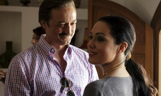
Era algo que imaginábamos que pasaría al observar cómo iban las audiencias durante el mes de marzo y que al final ha ocurrido: Telecinco ha vuelto a ser la cadena más vista del mes, después de seis meses sin alcanzar el liderato. Y este hecho tiene su explicación en el descenso que ha sufrido su principal competidor durante el mes que acabamos de dejar. Ya anunciamos que La 1 no se enfrentaba a su mejor momento, sobre todo por el vacío que han dejado sus series en prime time, que hasta la fecha se encuentran en paradero desconocido.
El resultado ha sido el fuerte descenso de espectadores que ha sufrido la cadena pública, que por otro lado ha beneficiado al resto de canales. Todas las cadenas generalistas han subido durante el mes de marzo, un mes en el que se consumieron 253 minutos de televisión por persona y día (algo menos que en febrero) y donde Andalucía se coronó como la Comunidad Autónoma con más consumo (269 minutos) mientras que Galicia quedó en último lugar (214 minutos).
Telecinco se corona como la cadena más vista
Telecinco subió dos décimas con respecto a febrero, lo suficiente para coronarse como la cadena líder del mes de marzo. En total, el share medio que la cadena consiguió el mes pasado fue de un 13,9%, un dato que le devuelve el liderato. Ficciones como ‘Mi gitana’ o ‘Aída‘ o el partido de UEFA son algunas de las emisiones más vistas del mes, que le han ayudado a ascender y obtener de nuevo el primer puesto entre las cadenas más vistas en España.
La 1, por su parte, ha sufrido un fuerte descenso, perdiendo 1,3 puntos de share y conformándose con el 12,8% de la audiencia. La falta de un prime time sólido ha sido una de las consecuencias más directas de la pérdida de espectadores, un descenso que habría sido mucho menor si no hubiera sido por los partidos de Champions que La 1 emitió en marzo, las emisiones más vistas en la cadena durante el mes pasado.
Antena 3, Cuatro y laSexta también suben
Como apuntábamos al principio del artículo, todas las cadenas generalistas han subido durante el mes de marzo. Antena 3 también consigue aumentar dos décimas su share medio, quedándose en el 12,4%. La cadena le tiene que agradecer mucho a los espacios que ha estrenado recientemente, como ‘Con el culo al aire‘, la Fórmula 1 o ‘El número uno’, ya que todos ellos han conseguido situarse entre los programas más seguidos.
Por su parte, Cuatro y laSexta también han experimentado subidas durante el mes de marzo. En concreto, ambas cadenas suben una décima con respecto a febrero (6,4% para Cuatro y 4,9% para laSexta) y ambas le deben mucho al fútbol, ya que entre sus emisiones más seguidas se encuentran los partidos de Liga (en el caso de laSexta) o los de la UEFA (en Cuatro).
Las 50 emisiones más vistas de marzo de 2012
Pese a perder el liderato, La 1 firma más de la mitad de las emisiones más vistas durante el mes de marzo. Curiosamente muchas de estas emisiones pertecen a ‘El tiempo’, que se logra colar en el top emitiéndose después de los informativos.
Telecinco cuenta con 10 emisiones entre las 50 más seguidas. La mayoría corresponde a ficciones como ‘Mi gitana’ y ‘Aída’.
Las seis emisiones que Antena 3 aporta al ránking pertenecen a programas estrenados durante 2012, como la Fórmula uno o ‘Con el culo al aire’. Los espacios más vistos de Cuatro y laSexta pertenecen a fútbol. Mediaset continúa su hegemonía
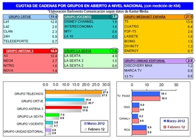
Si valoramos el reparto de audiencias por grupos de comunicación, observamos que Mediaset sigue en cabeza, gracias a sus siete canales que consiguen acapar un 27,9% de share. De todos ellos, solo en Energy se encuentra por debajo del 1%, mientras que Factoria de Ficción se sitúa como el canal de la TDT más seguido del grupo de Mediaset, consiguiendo un 2,6% de share. El grupo Antena 3 consiguió en marzo un 18%, mientras que los canales de laSexta alcanzaron el 7%, unas cifras que harían conseguir un cuarto de la audiencia cuando ambas cadenas finalicen el proceso de fusión que aún permanece abierto y que lo colocarían como gran rival de Mediaset en el futuro. El grupo RTVE acusa el descenso de La 1 y se conforma con un 19,4%, lejos de superar el 20% como ha ocurrido meses atrás.
Conclusiones
Marzo ha servido para que La 1 evidencie sus debilidades. Los recortes a los que tiene que hacer frente y la decisión de dejar en la recámara algunos de sus productos han hecho que la cadena pierda seguimiento con respecto a meses anteriores. Este hecho ha sido aprovechado por Mediaset para recuperar el control de la audiencia, aunque no yo perdería de vista la evolución de Antena 3, una cadena que está sacándole partido a la mayoría de los estrenos que tenía preparados para 2012. Durante abril podriamos ver a Antena 3 aumentar de nuevo su share, gracias sobre todo a si la cadena consigue que ‘El número uno’ se mantenga como producto sólido.
La cadena también podría seguir ganando audiencia gracias a la Fórmula 1, aunque en este aspecto Mediaset podría mantener el pulso gracias al mundial de Motociclismo, que se estrena en Telecinco a partir del próximo 15 de abril. No sabemos hasta donde podrá descender La 1, pero lo que sí hemos comprobado, gracias a las audiencias de marzo, es que hay muchas cadenas dispuestas a quedarse con los espectadores que hasta el momento eran fieles a la cadena pública.
Fuente | Barlovento Comunicación
En ¡Vaya tele! | Análisis mensual de audiencias